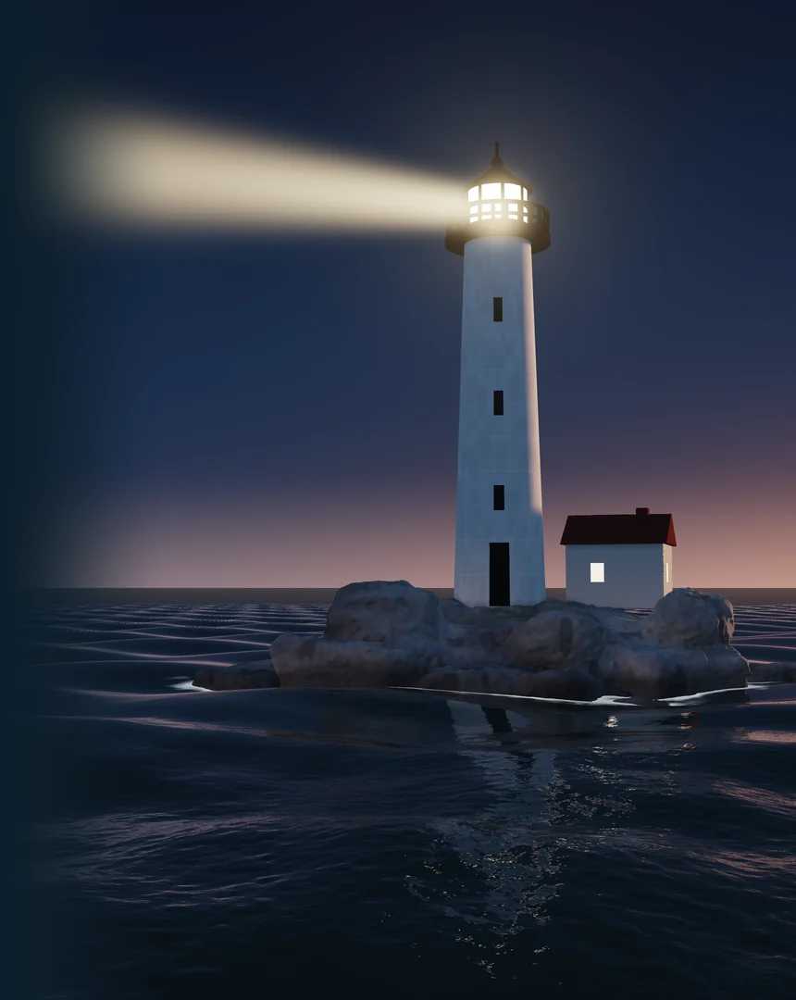

If someone is in the water now
Right now: call your emergency number on speaker. Get them out without going into deep water. Not breathing normally: give breaths if you can and push hard and fast on the center of the chest. Breathing but not responding: turn them on their side and keep them warm.
- 1 · CALL
Shout, then call on speaker
Shout for help and call your emergency number, with the phone on speaker so your hands are free: 112 from mobiles across the EU and in many other countries, 911 in North America, 999 in the UK (at the coast, ask for the Coastguard), 000 in Australia. More countries. Alone with no phone: once they are out of the water, give 2 minutes of care (CPR, step 4, if they are not breathing normally), then go for help. On a boat, call on VHF channel 16.5,6,7,8
- 2 · GET THEM OUT SAFELY
Get them out without going into deep water
A child in a bath, bucket, paddling pool or shallow water: lift them out at once. If a child is missing, check the water first. Someone in deep water: throw something that floats, or reach out with a pole or branch. Going into deep water to save someone is dangerous, and many would-be rescuers have drowned: only someone trained in water rescue should go in, and only with something that floats.6,9,5,10
- 3 · FLOAT
Tell them to float
Lean back with ears under, relax and breathe slowly. In a current, don't swim against it: float, raise an arm and shout.7,11,12
- 4 · CPR
Not breathing normally? Start CPR
Once they are out of the water, if they are unresponsive and not breathing normally (gasping is not normal breathing), start CPR now. Trained: give rescue breaths first (5 in European guidance, 2 in American), then 30 compressions to 2 breaths. Can't give breaths? Push hard and fast in the center of the chest until help arrives; the dispatcher can talk you through it.13,5,14,15 Breathing but not responding? Turn them on their side, keep checking their breathing, and start CPR if it stops or becomes abnormal. Remove wet clothes and keep them warm.5,9
- 5 · AED
Use an AED when one arrives
Dry the chest and attach it. Start CPR first; don't delay it to fetch the AED.5,13
- 6 · HOSPITAL
Get medical help, even if they seem fine
Go to hospital if they needed rescue breaths or CPR, lost consciousness even briefly, are confused or drowsy, keep coughing, are short of breath or have chest pain, or may have had a seizure, heart problem or neck injury. Watch anyone else for at least 15 minutes, kept warm. If cough, breathlessness, chest pain, fever, confusion or unusual sleepiness appears in the next 8 hours, get medical help at once.16,17,18
More situations: if you fall in, rip currents, floodwater, ice, at sea
If you fall in
Don't try to swim straight away. Float on your back and get your breathing under control; the gasping usually eases within a minute or two. In cold water (below about 15 °C, 60 °F) your arms and legs can weaken within minutes, so use that time to get out, hold on to something that floats or signal for help.19,20
Caught in a rip current
Relax: a rip pulls you out, not under. Don't swim against it. Float, raise an arm and shout; if you can, swim parallel to the beach until you are free, then angle back to shore.11,12
Floodwater
Turn around, don't drown. Never walk or drive into floodwater or around a barrier: 15 cm (6 inches) of moving water can knock you over, and 30 cm (12 inches) can carry away most cars.21
Through the ice
Put your arms on the unbroken ice, kick and slide forward on your stomach, then roll away from the hole without standing up. Guidance differs on direction: the Lifesaving Society says turn back the way you came,22 while the Canadian Red Cross warns the ice is weak where you fell in.23 Rescue others from the shore if you can, lying flat and reaching out with a pole or branch.23
On a boat or at sea
Wear a life jacket. In distress, press the radio's red distress button (DSC), which sends your position, then call mayday on VHF channel 16. Even if your phone shows no signal, try your emergency number anyway.8
Someone in crisis
If someone is in immediate danger, call your emergency number. If you or someone near you is thinking of suicide: in the US and Canada call or text 988; in the UK and Ireland call Samaritans on 116 123; in Australia call Lifeline on 13 11 14; in New Zealand call or text 1737; elsewhere, findahelpline.com lists free, confidential lines by country.24,25,26,27,28,29
Adapted from current guidance by the American Red Cross, the American Heart Association, the European Resuscitation Council, the International Life Saving Federation, the RNLI, the US National Weather Service, the Lifesaving Society, the Canadian Red Cross, Royal Life Saving Society – Australia and the Wilderness Medical Society. This is general guidance, not training: if you can, learn CPR and water rescue on a recognized course. Nothing on this site dispatches help.
Executive summary
A large, neglected and often preventable killer.
- 390,000
About 390,000 people drown each year, counted in full.
WHO counts about 300,000 deaths a year, more than 30 every hour, and drowning is the fourth leading cause of death for children aged 1–4.1,4 That count leaves out deaths never registered, suicides, floods and boat disasters. The full figure is the Lab's own estimate, not yet peer-reviewed, plausibly 325,000 to 490,000.2 Yet drowning has no line of its own in global health aid.3
- 150,000
About 150,000 of those deaths could be prevented within 10–15 years.
That is the Lab's estimate, also not yet peer-reviewed, for scaling measures that already have evidence behind them: safe day care for young children, four-sided fencing around home pools, swimming and water-safety lessons for school-age children, life jackets that are worn, and flood warnings with shelters.2,30,31 Where a crèche is built matters more than how: the same village crèche (community day care for children aged 1 to 5) costs about $7,700 per life saved where toddlers drown most and $172,700 at the world-average rate.2
- 22%
The evidence is ahead of the delivery.
Only 22% of countries teach swimming and water safety in schools, and 28% report day-care programs for young children.1 Programs that work run as projects and end: Bangladesh's 8,000 day-care centers closed in December 2025 when the project that funded them ended.32 At sea, a treaty gives every area a rescue coordinator; on rivers, lakes and in floods, none does.33,34
- 7
Seven shifts would move drowning prevention from projects to systems by 2035.
Count every death by place and activity; give every country a lead agency, a strategy and a budget line; put crèches and swimming lessons in national budgets; enforce life-jacket wear and fund flood warnings; name an owner for inland and flood rescue; test measures for teenagers and adults; and prove it first in one harbor. The yardstick is WHO's: a drowning death rate 35% lower by 2035.35 The shifts are the Lab's proposal; no government or organization has agreed to them.
- 1
Prove it first in one harbor: Portsmouth.
Within about 10 miles of Portsmouth Harbor, between New Hampshire and Maine, the Lab's inventory found 38 deaths since 2009, about two a year, most in cold water outside the lifeguard season.36 The Lab proposes to count what is known, change one thing and publish what failed, then share an open kit so other harbors can do the same. It claims no lives saved.37
(If you are struggling: 988 in the US and Canada, 116 123 in the UK and Ireland, 13 11 14 in Australia, or findahelpline.com; more help lines.)
Start here. The checklist for parents, teachers, local officials, health workers, pool and beach operators, boaters, fishers, governments, funders, journalists, researchers or anyone with an hour. Or read on: the six parts take about 40 minutes, and the appendix holds the detail.
Contents
Six parts, from the problem to a first proof.
- 01The problemHow many people drown, who they are, and why it is overlooked
- 02What worksWhat prevents drowning, for whom, and how sure we are
- 03The gapsWhy what works is not reaching the people who drown
- 04The way forwardWhat should change by 2035, and who does what
- 05Portsmouth HarborA lighthouse test case: situation, complication, resolution
- 06About the Life-Saving LabWho we are, and three things for today
- AAppendixThe evidence, checklists for each reader, risks and settings, the numbers and the model, help lines, method and sources
Part 1. The problem
How many people drown, who they are, and why it is overlooked
How many people drown
Counted in full, about 390,000 people drown each year.
WHO counts only deaths coded as unintentional drowning, so its figure misses suicides, drownings in floods, and boat, ferry and migrant disasters, as well as many deaths that are never registered.1 The Life-Saving Lab's model adds them back, step by step. Its central estimate is about 390,000 a year, plausibly 325,000 to 490,000; the largest and least certain addition is deaths never registered, mostly in India.2 It is the Lab's own estimate and has not been peer-reviewed; the model sets out every input. (If you are struggling: 988 in the US and Canada, 116 123 in the UK and Ireland, 13 11 14 in Australia, or findahelpline.com; more help lines.)
- WHO's count of unintentional drowning, rolled forward to 2025
- Deaths the count misses (our estimate)
Source: the Life-Saving Lab's model, not yet peer-reviewed; method, inputs and assumptions in the model 2. It starts from WHO's estimate for 2021 1 and adds deaths found by household surveys 38,39,40, suicides by drowning 41, boat deaths 42,43 and flood deaths 44.
Show as a table
| Step | Deaths a year | Low–high | What it rests on |
|---|---|---|---|
| WHO's count, rolled forward to 2025 | 290,000 | 270,000–305,000 | WHO's Global Health Estimates put unintentional drowning at about 300,000 in 2021; trimmed for the slow decline since. WHO still cited nearly 300,000 in July 2026. |
| Deaths never registered | 49,000 | 25,000–95,000 | Community counts find more than the records and models: Bangladesh's national survey about twice WHO's figure, West Bengal's statewide survey nearly three times the GBD estimate, and community counts in 14 districts of Uganda 3.2 times the deaths in district records (4.6 times in lakeside districts). Added: India 28,000 (a national rate near 5.8 per 100,000, against WHO's 3.9 and West Bengal's measured 9.2), Bangladesh 8,000, sub-Saharan Africa 8,000, rest of Asia 5,000. |
| Suicide by drowning | 22,000 | 14,000–32,000 | The Lab assumes 3% of the world's 727,000 suicides (WHO's total). For comparison, India records 4.1% of its suicides as drowning (7,075 in 2023) and is thought to under-record suicides by 27–50%; a study of 392 suicides at ages 15–34 in rural China found 4.8% (19). |
| Boats: ferries, fishing, migrants | 15,500 | 8,000–33,000 | Ferries kill 1,000–1,500 a year; IOM documented 7,904 deaths and disappearances on migration routes in 2025, and 57% of migrant deaths since 2014 were drownings; estimates of fishers' deaths at work run from more than 32,000 to more than 100,000 a year, and most of their drownings are already in WHO's count. |
| Floods and storm surge | 8,000 | 5,000–14,000 | Drowning is about 75% of flood deaths. The central case is a year without a mega-disaster; all natural disasters killed 16,753 people in 2024. |
| Homicide, and vehicles into water | 5,000 | 2,000–10,000 | Little data; kept small. |
| Counted in full | 389,500 | 325,000–490,000 | The sum of the six steps; the range sets every input to its low, then to its high |
Counts are weakest where drowning is most common.
Only 65% of countries record drowning deaths in their death registration systems.1 Counted on the ground, Bangladesh's national household survey found about twice WHO's estimate (it counts drownings of every kind, in later years), a statewide survey in West Bengal, India, nearly three times the Global Burden of Disease estimate, and community counts in 14 districts of Uganda 3.2 times the deaths in district records.38,45,39,40
The numbers in detail: the two global models, regions, countries and household surveys. The model: how the full toll is built, how sure it is, and what is preventable.
Who drowns, and where
Source: WHO, Global status report on drowning prevention 2024, death rates by age 1. Highlighted: the youngest and oldest. Shares of all deaths: under 5, 24%; 5–14, 19%; 15–29, 14%; 30–69, 31%; 70 and over, 12%.
Show as a table
| Age | Deaths per 100,000, 2021 |
|---|---|
| Under 5 | 10.9 |
| 5–14 | 4.2 |
| 15–29 | 2.3 |
| 30–49 | 2.2 |
| 50–69 | 3.1 |
| 70 and over | 7.7 |
Men and boys drown at more than twice the rate of women and girls, and 57% of the people who drown are under 30.1
92%4 of deaths are in low- and middle-income countries.
- Under 1
- 1 to under 2
- 2 to under 4
- 4 to under 8
- 8 or more
- No estimate
The 15 highest rates, deaths per 100,000, 2021
- Nauru15.2
- Niger11.5
- Marshall Islands11.4
- Solomon Islands11.2
- Micronesia (Federated States of)11.2
- Somalia11.1
- Central African Republic10.5
- Vanuatu9.6
- Guyana9.6
- Pakistan9.6
- Eswatini9.5
- Mali9.2
- Thailand9.0
- Lesotho8.6
- Democratic Republic of the Congo8.4
The tile map shows on wider screens; every country is in the table below.
Source: WHO Global Health Estimates 2021, country rows via Our World in Data 45. Each tile is one country, placed roughly where it sits on a world map; country names follow the UN where they differ (tile layout: Mustafa Saifee, CC BY-SA 4.0). Rates for small island states rest on few deaths and are uncertain. WHO's 2023 estimates, released in September 2026, are not comparable with these.
Show as a table
| Country | Deaths per 100,000 | Deaths, 2021 |
|---|---|---|
| Nauru | 15.19 | 2 |
| Niger | 11.51 | 2,905 |
| Marshall Islands | 11.41 | 5 |
| Solomon Islands | 11.21 | 79 |
| Micronesia (Federated States of) | 11.17 | 13 |
| Somalia | 11.12 | 1,897 |
| Central African Republic | 10.50 | 573 |
| Vanuatu | 9.57 | 31 |
| Guyana | 9.56 | 77 |
| Pakistan | 9.56 | 22,120 |
| Eswatini | 9.46 | 113 |
| Mali | 9.20 | 2,016 |
| Thailand | 8.99 | 6,435 |
| Lesotho | 8.56 | 195 |
| Democratic Republic of the Congo | 8.45 | 8,101 |
| Palau | 8.43 | 2 |
| Cameroon | 8.31 | 2,260 |
| Sierra Leone | 8.30 | 699 |
| Angola | 8.11 | 2,799 |
| Haiti | 8.01 | 918 |
| Viet Nam | 7.88 | 7,680 |
| Chad | 7.83 | 1,346 |
| Benin | 7.75 | 1,008 |
| Timor-Leste | 7.71 | 102 |
| Burundi | 7.66 | 962 |
| Lao People's Democratic Republic | 7.63 | 567 |
| Cambodia | 7.52 | 1,247 |
| Burkina Faso | 7.50 | 1,657 |
| South Sudan | 7.35 | 790 |
| Cabo Verde | 7.28 | 43 |
| Tuvalu | 7.23 | 1 |
| Latvia | 6.94 | 130 |
| Kiribati | 6.75 | 9 |
| Seychelles | 6.68 | 7 |
| Nigeria | 6.63 | 14,156 |
| Papua New Guinea | 6.49 | 646 |
| Zimbabwe | 6.45 | 1,031 |
| Bahamas | 6.44 | 26 |
| Togo | 6.42 | 555 |
| Guinea | 6.41 | 868 |
| Guinea-Bissau | 6.34 | 131 |
| Samoa | 6.21 | 14 |
| Philippines | 6.08 | 6,920 |
| Côte d'Ivoire | 6.01 | 1,652 |
| Japan | 6.00 | 7,478 |
| Eritrea | 5.97 | 216 |
| Rwanda | 5.91 | 795 |
| Fiji | 5.81 | 54 |
| Lithuania | 5.62 | 157 |
| Nepal | 5.43 | 1,631 |
| Tonga | 5.38 | 6 |
| Mozambique | 5.37 | 1,723 |
| Bangladesh | 5.35 | 9,053 |
| Djibouti | 5.27 | 58 |
| Myanmar | 5.14 | 2,763 |
| Equatorial Guinea | 5.08 | 83 |
| Liberia | 5.07 | 263 |
| Madagascar | 5.00 | 1,446 |
| Namibia | 4.97 | 126 |
| Saint Vincent and the Grenadines | 4.97 | 5 |
| Zambia | 4.89 | 953 |
| Afghanistan | 4.73 | 1,895 |
| Senegal | 4.67 | 788 |
| Gabon | 4.62 | 108 |
| South Africa | 4.51 | 2,680 |
| Suriname | 4.47 | 27 |
| Ukraine | 4.40 | 1,915 |
| Malawi | 4.37 | 870 |
| Gambia | 4.34 | 115 |
| Tajikistan | 4.34 | 423 |
| Uganda | 4.34 | 1,991 |
| Comoros | 4.26 | 35 |
| Mongolia | 4.08 | 137 |
| China | 4.01 | 57,145 |
| North Korea | 4.00 | 1,040 |
| Saint Lucia | 3.99 | 7 |
| Tanzania | 3.97 | 2,527 |
| Belize | 3.96 | 16 |
| Dominica | 3.96 | 3 |
| India | 3.88 | 54,673 |
| Belarus | 3.84 | 367 |
| Estonia | 3.82 | 51 |
| Congo | 3.72 | 217 |
| Greece | 3.60 | 376 |
| Moldova | 3.57 | 109 |
| Sudan | 3.50 | 1,598 |
| Yemen | 3.46 | 1,140 |
| Ghana | 3.45 | 1,131 |
| Trinidad and Tobago | 3.41 | 52 |
| Uzbekistan | 3.37 | 1,149 |
| Sri Lanka | 3.30 | 719 |
| Mauritania | 3.25 | 150 |
| Panama | 3.22 | 140 |
| Romania | 3.18 | 615 |
| Ethiopia | 3.15 | 3,786 |
| Botswana | 3.09 | 80 |
| Kazakhstan | 3.04 | 583 |
| Bhutan | 2.98 | 23 |
| Russia | 2.96 | 4,291 |
| Kenya | 2.89 | 1,534 |
| Barbados | 2.86 | 8 |
| Malaysia | 2.80 | 939 |
| El Salvador | 2.79 | 176 |
| Ecuador | 2.75 | 489 |
| Turkmenistan | 2.66 | 169 |
| Kyrgyzstan | 2.62 | 171 |
| Mauritius | 2.59 | 34 |
| Monaco | 2.59 | 1 |
| Saint Kitts and Nevis | 2.54 | 1 |
| Maldives | 2.41 | 13 |
| Slovakia | 2.40 | 131 |
| Bolivia | 2.39 | 288 |
| Venezuela | 2.33 | 656 |
| Grenada | 2.29 | 3 |
| Costa Rica | 2.19 | 113 |
| Finland | 2.13 | 118 |
| Indonesia | 2.13 | 5,839 |
| Brazil | 2.06 | 4,411 |
| Dominican Republic | 2.03 | 226 |
| Brunei Darussalam | 1.93 | 9 |
| Nicaragua | 1.85 | 127 |
| Cyprus | 1.80 | 22 |
| Iraq | 1.78 | 774 |
| Croatia | 1.73 | 70 |
| Bulgaria | 1.67 | 115 |
| Oman | 1.61 | 73 |
| Azerbaijan | 1.59 | 164 |
| Honduras | 1.52 | 156 |
| Egypt | 1.51 | 1,645 |
| Saudi Arabia | 1.50 | 470 |
| Peru | 1.48 | 498 |
| Libya | 1.47 | 99 |
| Uruguay | 1.43 | 49 |
| Mexico | 1.42 | 1,798 |
| Cuba | 1.41 | 159 |
| Czechia | 1.41 | 148 |
| Norway | 1.39 | 75 |
| Paraguay | 1.39 | 93 |
| Qatar | 1.36 | 36 |
| Guatemala | 1.33 | 233 |
| Chile | 1.32 | 257 |
| Colombia | 1.32 | 678 |
| United States | 1.32 | 4,452 |
| Poland | 1.30 | 499 |
| New Zealand | 1.22 | 63 |
| Hungary | 1.16 | 112 |
| Georgia | 1.10 | 41 |
| Ireland | 1.09 | 54 |
| Armenia | 1.08 | 30 |
| Montenegro | 1.07 | 7 |
| Spain | 1.07 | 509 |
| Morocco | 1.06 | 394 |
| Serbia | 1.01 | 74 |
| Malta | 1.00 | 5 |
| Bahrain | 0.97 | 14 |
| South Korea | 0.97 | 502 |
| France | 0.94 | 606 |
| Algeria | 0.93 | 412 |
| Sweden | 0.92 | 97 |
| Albania | 0.91 | 26 |
| Sao Tome and Principe | 0.90 | 2 |
| Iceland | 0.87 | 3 |
| North Macedonia | 0.82 | 17 |
| Iran | 0.81 | 716 |
| Portugal | 0.80 | 82 |
| Syria | 0.80 | 170 |
| Slovenia | 0.79 | 17 |
| Canada | 0.78 | 296 |
| Australia | 0.77 | 198 |
| Tunisia | 0.72 | 88 |
| Argentina | 0.71 | 319 |
| Jamaica | 0.69 | 19 |
| Türkiye | 0.63 | 530 |
| United Arab Emirates | 0.63 | 62 |
| Belgium | 0.61 | 70 |
| Denmark | 0.61 | 36 |
| Jordan | 0.60 | 67 |
| Lebanon | 0.59 | 33 |
| Antigua and Barbuda | 0.53 | fewer than 1 |
| Switzerland | 0.52 | 45 |
| Italy | 0.51 | 302 |
| Germany | 0.49 | 413 |
| Kuwait | 0.48 | 20 |
| Netherlands | 0.47 | 83 |
| Austria | 0.44 | 39 |
| Singapore | 0.43 | 25 |
| United Kingdom | 0.40 | 269 |
| Bosnia and Herzegovina | 0.32 | 10 |
| Israel | 0.29 | 26 |
| Luxembourg | 0.23 | 2 |
| San Marino | 0.15 | fewer than 1 |
| Andorra | 0.00 | 0 |
Africa has the highest rate, and it has barely fallen since 2000. China and India together have more than a third of the world's drowning deaths, and ten countries about two-thirds.1,45,46
Groups at higher risk
- Young children
- Teenagers and young men
- Older adults
- People with epilepsy
- People with autism
- Heart conditions and medicines
- People with disabilities
- Racial and ethnic gaps in the US
- Indigenous peoples
- Newcomers and visitors
- Poverty and rural life
- Women and girls in disasters
- Rescuers
- Fishers, boat workers and migrants
Places where people drown
- Ponds, ditches and wells near home
- Bathtubs, buckets and containers
- Pools and hot tubs
- Beaches and rip currents
- Rivers, lakes and canals
- Ice and cold water
- Boats and ferries
- Fishing
- Floods and vehicles
- Heat waves
Each links to the detail in the appendix: what puts people at risk, and what helps.
The attention gap
Drowning kills more people than pregnancy and childbirth, yet has no line in health aid.
On WHO's count, drowning kills more people each year than pregnancy and childbirth, three times as many as measles and about half as many as malaria.47,48,49,1 Yet development assistance for health has no line for drowning. The nearest category that has been measured, in one study, is aid for treating injuries (trauma care); the study left out injury-prevention projects. In 2000–2013 it came to about $0.04 per year of healthy life lost to injury, against $9.62 for malaria and $45.75 for maternal and child health.3 We found no estimate of aid for drowning prevention.
Sources: WHO fact sheets on road traffic injuries, suicide, malaria, maternal mortality and measles, and WHO's drowning estimate 50,51,49,47,48,1; the full toll is the Lab's estimate 2. Years differ; read the comparison as orders of magnitude.
Show as a table
| Cause | Deaths a year | Year of the estimate |
|---|---|---|
| Road traffic injuries | 1,160,000 | 2026 fact sheet |
| Suicide | 727,000 | 2021 |
| Malaria | 610,000 | 2024 |
| Drowning | 300,000 | 2021, unintentional only; about 390,000 counted in full (our estimate) |
| Maternal deaths | 260,000 | 2023 |
| Measles | 95,000 | 2024 |
(If you are struggling: 988 in the US and Canada, 116 123 in the UK and Ireland, 13 11 14 in Australia, or findahelpline.com; more help lines.)
Source: Hollis and others, Journal of Global Health 2021 3. Development assistance for health compared as the median of 2000–2013 against each area's DALYs in 2013. A DALY is a year of healthy life lost to death or disability. Trauma care means treating injuries, measured against all injury DALYs, which include drowning; the study left out injury-prevention projects, so this is not a measure of aid for drowning prevention, for which we found no estimate.
Show as a table
| Area of health | Aid per DALY, US dollars |
|---|---|
| Maternal and child health | $45.75 |
| Tuberculosis | $25.09 |
| Malaria | $9.62 |
| Trauma care | $0.04 |
The largest philanthropic funder, Bloomberg Philanthropies, has committed $104 million to drowning prevention since 2012, first in Bangladesh, including $60 million announced in 2024 for Bangladesh, Ghana, India, Uganda, Viet Nam and the United States.52
Barely funded: what is known about the money, and why programs that work lapse.
Part 2. What works
What prevents drowning, for whom, and how sure we are
What is preventable
About 150,000 deaths a year could be prevented within 10–15 years, the Lab estimates.
The Lab's model splits the full toll into seven groups by age, income and cause, and judges for each the share that could be prevented by scaling measures with evidence behind them, at coverage reachable in ten to fifteen years.2 About half of the 153,000 are children under fifteen in low- and middle-income countries, through day care, barriers and survival swimming. Of those 153,000, about 39,000 rest on measures whose evidence is still limited, mostly for teens and adults in those countries: the largest group, and the one where least is known about what works, which makes it the research priority. (If you are struggling: 988 in the US and Canada, 116 123 in the UK and Ireland, 13 11 14 in Australia, or findahelpline.com; more help lines.)
- Could be prevented in 10–15 years by scaling measures with evidence behind them
- The rest
Source: the Life-Saving Lab's model, central values, not yet peer-reviewed 2. Preventable means measures with evidence behind them, at coverage reachable in 10–15 years; about 39,000 of the total rest on limited evidence; the share for each group is judged from the evidence for its measures (the model).
Show as a table
| Group | Deaths a year | Preventable share: low – likely – high | Preventable a year |
|---|---|---|---|
| Teens and adults, low- and middle-income countries | 135,050 | 12% – 25% – 35% | 33,762 |
| Children under 5, low- and middle-income countries | 90,450 | 45% – 60% – 70% | 54,270 |
| Children 5–14, low- and middle-income countries | 64,300 | 25% – 40% – 55% | 25,720 |
| Boats, ferries, fishing, migrants | 41,500 | 35% – 50% – 65% | 20,750 |
| Suicide, homicide, vehicles | 27,000 | 10% – 20% – 30% | 5,400 |
| High-income countries | 23,200 | 20% – 35% – 45% | 8,120 |
| Floods and storm surge | 8,000 | 45% – 65% – 80% | 5,200 |
| All groups | 389,500 | 39% | 153,222 |
If every country reached Europe's drowning rate, about 41,000 more deaths a year could be avoided over decades, through piped water, bridges and universal preschool; about 195,000 would remain even then.2,1
The seven groups in detail: the share counted as preventable for each, with its range and its measures.
Why people drown
Every layer of protection has holes. A drowning happens when the holes line up.
- Barriers
- Supervision
- Swimming skills
- Flotation
- Rescue and CPR
- A drowning: the holes line up in every layer
- A hazard stopped by a layer
A child drowns in a home pool when the gate was propped open, supervision lapsed for a moment, and the child could not yet swim. In Queensland, Australia, more than a quarter of children's pool drownings in one study happened where a fence gate had been propped open.53 The work is to add layers and shrink the holes, so that when one fails, another holds. The appendix section Layers, not single fixes describes each one.
The measures that work
A handful of measures have the best evidence.
Sources: Rahman et al. 2012 and Alonge et al. 2020 (Bangladesh), a Cochrane review of pool fencing, and Cummings et al. 2011 (US boaters) 54,55,56,57. None of these is a randomized trial; the fencing figure compares pools with and without fences, and the life-jacket figure compares boaters in the same incidents with and without the measure. Read them as strong signals, not exact sizes.
Show as a table
| Measure | Lower risk of drowning | 95% interval | Who was compared |
|---|---|---|---|
| Village crèches (Anchal) | 82% | 42%–94% | children 1–5, Bangladesh; compared with similar children who did not attend |
| Village crèches (SoLiD) | 88% | 71%–95% | children 1–4, Bangladesh; a comparison that was not randomized |
| Swimming and water-safety lessons | 93% | 69%–98% | children 4–12, Bangladesh; compared with similar children without lessons |
| Fencing around home pools | 73% | 53%–84% | young children; fenced compared with unfenced pools |
| Wearing a life jacket | 49% | 26%–65% | US recreational boaters in the same incidents, with and without a life jacket |
None of these studies is a randomized trial, and the day-care and swimming results all come from Bangladesh, so the direction of each effect is clearer than its exact size.58,54
Small children: keep them away from water
A village crèche is a small community day-care center: a trained local caregiver looks after children aged 1 to 5 for several hours a day, covering the morning hours when young children are most likely to drown.59 Village crèches cost $16 to $61 per child a year, and children in the crèche programs studied were 82 to 88% less likely to drown.54,55,60 Where homes have pools, the best-proven measure is fencing on all four sides with a gate that closes and latches itself.56
Where you build matters more than how.
A crèche saves the most lives where young children drown most often. With the same cost per child and the same effect, a crèche in the Indian Sundarbans saves a life for about $7,700; at the world-average rate for young children it would cost about $172,700, about twenty times as much.2,61 Between programs, cost per child ($16–61) and effect vary about fivefold together; between places, risk varies about twentyfold.54,60 So the first job is to find the hotspots, and that does not need a national registry: West Bengal's statewide survey covered a population of about 18 million people, with more than 15,000 community members reporting deaths in their neighborhoods.39,62
Sources: rates from the George Institute (Sundarbans) 61, the West Bengal survey 62, Bangladesh's national survey 38 and WHO 1,63; cost ($16 a child a year) from the SoLiD crèche program 60; effect an assumed 85% (its evaluation found 88% 55). Cost per life saved = $16 × 100,000 ÷ (rate × 0.85), the Lab's arithmetic 2. The world row uses WHO's rate for all children under five, so it compares only roughly.
Show as a table
| Place | Drowning rate per 100,000 a year | Whose rate | Cost per life saved |
|---|---|---|---|
| Indian Sundarbans | 243.8 | children 1–4, community survey | $7,700 |
| Bangladesh, SoLiD study areas | 112.2 | calibration: the rate at which the formula gives the published cost | $16,800 (published $16,797) |
| Bangladesh | 77.9 | children 1–4, national survey 2023–24 | $24,200 |
| West Bengal, India | 60.0 | children 1–4, statewide survey | $31,400 |
| World average | 10.9 | all children under 5, WHO, 2021 | $172,700 |
School-age children: teach them to survive in water
1 Roll into deep water
2 Tread water for one minute
3 Swim 50 meters to safety
In Bangladesh, survival swimming lessons cost about $13 per child, once, and children who took them were about 93% less likely to drown.54 Viet Nam's program taught more than 400,000 children between 2018 and 2025.66
Boats and floods: stay afloat, stay out of floodwater
15 cm (6 inches) of moving water can knock an adult over
30 cm (12 inches) can carry away most cars
In the United States, 87% of boaters who drowned were not wearing a life jacket, where that was known.67 After Victoria, Australia, made wearing one law on small boats in 2005, drownings on recreational boats fell from 59 in six years to 16 in five.68,69
By person and place
| Who, and where | The measure | Evidence |
|---|---|---|
| Children aged 1 to 4 near ponds, ditches and wells at home, mostly in rural Asia and Africa | Safe, supervised day care (village crèches) during the hours adults are working | Moderate evidence WHO-recommended |
| The same children, at home | Covers on wells and water containers; door barriers and playpens | Limited evidence WHO-recommended |
| The same children, near ponds and ditches | Fences around ponds and ditches close to the house | Untested WHO-recommended |
| School-age children who live near open water | Basic swimming, water-safety and safe-rescue lessons, from about age 6 | Moderate evidence WHO-recommended |
| Young children with a home swimming pool | Fencing on all four sides of the pool, with a self-closing, self-latching gate | Strong evidence WHO-recommended |
| Babies and toddlers in baths, buckets and paddling pools | An adult within arm's reach, all the time; empty containers after use | Limited evidence WHO-recommended |
| People in boats, and fishers | Life jackets that fit, float and are worn; laws requiring them on small boats | Moderate evidence WHO-recommended |
| Ferry passengers | Limits on overloading, inspections, life-saving equipment | Untested WHO-recommended |
| Swimmers at beaches and pools | Swimming where trained lifeguards are on duty | Limited evidence WHO-recommended |
| People who live where floods and cyclones strike | Early warnings, evacuation plans and shelters (evidence from national before-and-after records) | Moderate evidence WHO-recommended |
| Anyone pulled from the water | Rescue from land or a boat; CPR with rescue breaths, started at once | Moderate evidence WHO-recommended |
| Adults and teenagers near water | Not drinking alcohol before or while swimming or boating (alcohol is a well-known risk; what is untested is which policies reduce it) | Untested |
The evidence in detail: what each mark means, the studies, what the measures cost, and why protection works in layers.
Not proven yet
Some popular measures have not been shown to prevent deaths.
Untested is not the same as useless: usually nobody has measured. Use these alongside measures that work, and measure what they do.
Strong evidence
- Four-sided pool fencing
Moderate evidence
- Village crèches
- Swimming lessons for school-age children
- Life jackets that are worn
- CPR with rescue breaths
- Flood warnings and shelters
Limited evidence
- Close supervision
- Covers and door barriers
- Lifeguards
- Awareness campaigns alone
- Playpens alone
Untested
- Fences around ponds
- Alcohol policy
- Ferry rules
- Cameras, drones and wearables
Not proven yet, in detail: the studies behind each mark, and ten open questions worth answering.
Part 3. The gaps
Why what works is not reaching the people who drown
What's working, and where it falls short
The evidence is ahead of the delivery.
For young children, discovery is no longer the bottleneck; delivery is. The table sets what is working beside what is missing, area by area.
| Area | Working well | Where the gaps are |
|---|---|---|
| Counting | Global estimates exist, and the world's drowning death rate fell 38% between 2000 and 2021.1 | Only 65% of countries record drowning in death registration; house-to-house surveys in Bangladesh and West Bengal found two to three times the modeled numbers.1,38,39 |
| Leadership | A UN resolution (2021), a World Health Assembly resolution (2023), a global strategy to 2035 and WHO's PROTECT package (2026).70,71,35,31 | Only 26% of countries have a national strategy, and none of the global plan comes with money.1 |
| Young children | Village crèches cut drowning 82–88% in the programs studied, for $16–61 a child a year; four-sided pool fences work.54,55,60,56 | Day care in 28% of countries; Bangladesh's 8,000 centers closed when the project that funded them ended.1,32 |
| School-age children | Survival swimming: about 93% lower risk for about $13 a child; Viet Nam's government took its program over in 2026.54,72 | Swimming and water safety are taught in schools in only 22% of countries.1 |
| Boats and floods | After Victoria required life jackets to be worn, drownings on recreational boats fell from 59 in six years to 16 in the next five; cyclone warnings and shelters transformed survival in Bangladesh.68,73 | 87% of US boaters who drowned wore no life jacket, where known; no one has published a global count of how many fishers drown.67,74 |
| Rescue | At sea, a treaty since 1979 divides the oceans into 13 search-and-rescue areas, and its parties must run rescue centers around the clock; 73% of countries report rescue services.33,1 | On rivers, lakes and in floods, no treaty assigns anyone to coordinate rescue; only 33% of countries train bystanders in rescue and resuscitation.34,1 |
| Money and evidence | WHO's investment case: scaling day care and swim skills could avert about 774,000 child deaths by 2050, with benefits of up to $9 for each $1.75 | Trauma care received about $0.04 in aid per year of healthy life lost; for teens and adults, the largest group, little has been tested.3,2 |
The adoption gap
Source: WHO, Global status report on drowning prevention 2024, survey of 135 member states and 4 territories covering 85% of the world's people 1. Highlighted: the three child measures with the strongest evidence.
Show as a table
| Measure or record | Share of countries |
|---|---|
| Passenger-vessel safety laws | 81% |
| Search and rescue services | 73% |
| Community flood-risk reduction | 73% |
| Life jackets required by law | 65% |
| Drowning deaths in death registration | 65% |
| A national focal point for drowning | 53% |
| A coordinating body | 40% |
| Where a drowning happened is recorded | 31% |
| Day-care programs for young children | 28% |
| A national drowning-prevention strategy | 26% |
| Drowning in disaster-risk policy | 24% |
| Swimming and water safety in schools | 22% |
| Pool-fencing laws | 14% |
Programs need lasting budgets, not just projects.
Drowning is undercounted, belongs to no single ministry and is barely funded. Why drowning persists explains each.
Rescue organizations
At sea, rescue has had a global system since 1979; rivers, lakes and floods have none.
The organizations that work on drowning stand in two columns that rarely meet. The response column rescues people already in trouble, and its global layer is old: since the search-and-rescue convention of 1979, in force from 1985, the world's oceans have been divided into 13 search-and-rescue areas, and the treaty's parties must run rescue coordination centers around the clock, guided by a shared manual.33,78 The prevention column stops people getting into trouble, and its global layer is only five years old.70,31 Between them lies the water where many people drown: on rivers, lakes and in floods, no treaty assigns anyone the job of coordinating rescue.34
- 1824A national lifeboat society in the United Kingdom
- 1865Germany's sea-rescue society
- 1910The roots of the International Life Saving Federation, for beaches and pools
- 1924The International Maritime Rescue Federation, founded as the lifeboat federation
- 1979The search-and-rescue convention; in force from 1985
- 2021Prevention gets its global layer: a UN resolution, then a strategy and WHO's PROTECT
Sources: RNLI; DGzRS; International Life Saving Federation; International Maritime Rescue Federation; IMO; UN resolution 75/273; WHO PROTECT 2026.79,80,81,82,33,70,31
Sources: IMO; WHO, Global status report on drowning prevention 2024.33,1
Bystanders are often first on the scene, and many would-be rescuers drown: the safe way to help is to reach or throw, not to go (if someone is in the water now).
What's missing
The Lab's draft directory lists 315 rescue and prevention organizations in 136 countries and territories, built from their own public pages. It is an inventory, not a census, and no organization has yet checked its entry. Within that limit it shows six gaps.34
No owner for inland water
Only 5 entries are inland or flood rescue bodies, and 2 of those are general emergency services; the search reached few inland services, so the count says as much about the directory as about the world. But at sea a treaty gives every area a coordinator; on rivers, lakes and in floods, none does.
No shared words
Twenty-one published counts of rescue responses use 16 different labels: lifeboat launches, SAR cases, operations, missions, interventions, calls for help. Not one of the 131 rows drafted from these organizations' 122 published figures carries a printed definition.
Little tested practice
Of 349 documented lessons, 2 rest on peer-reviewed work and 38 on an organization's own report or a government publication; 309 rest on an organization's statements, the press or a secondary summary.
Two silos
116 entries record membership of the lifesaving federation and 71 of the maritime rescue federation; only 10 belong to both. Two memberships, two vocabularies.
Help travels by friendship
Ten documented twinning relationships, in which one service helped another adopt a model, mostly in surf lifesaving. None is confirmed by either side, and none is inland.
Blank spaces on the map
Seventy WHO member states have no entry yet, and 67 entries show no dated sign of operating since 2024 in their cited sources. Outside it all, IOM counted 39,383 people drowned on migration routes from 2014 to late 2024, deaths that sit outside WHO's estimate.83
What the Lab proposes, agreed with no one yet: a thin global layer that keeps rescue local. Each service publishes its own figures in its own words with one line of definition; an open register indexes them under shared codes and never sums or ranks them; and every national plan names an owner for inland and flood rescue.34 The first steps are small: invite the organizations that already print figures in their own reports to confirm their rows, and record which national plans name an inland owner.
Part 4. The way forward
What should change by 2035, and who does what
Seven shifts to 2035
From projects to systems.
Each shift sets where things stand in 2026 beside where they should be by 2035, with a first move.
| Shift | From, 2026 | To, 2035 | A first move |
|---|---|---|---|
| Counting | Modeled totals; drowning missing from the death registration of a third of countries | Every death counted by place and activity; community surveys find the hotspots | A community survey in each high-burden district before money is spent (where the first dollar goes) |
| Ownership | A national strategy in 26% of countries; in most, no ministry leads | A lead agency, a strategy and a budget line in every country | Name the lead agency and adopt WHO's PROTECT package as the plan |
| Children | Crèches and swimming lessons run as fixed-term projects that end | Both in national budgets where children drown most | Write the path from project to budget into the first grant, as in Viet Nam |
| Boats and floods | Life jackets carried, not worn; cars driven into floodwater | Wear laws enforced; flood warnings and shelters; drivers who turn around | Enforce wearing on small boats; fund warnings where floods kill |
| Rescue | A treaty at sea, no owner inland, and 16 words for one rescue response | A named owner for inland and flood rescue; one line of definition beside every figure | Record which national plans name an inland owner; ask services to print one definition per figure |
| Evidence | Teen and adult measures largely untested; practice asserted | Trials for adults; an evidence level on every practice | Randomized trials as survival swimming scales; fund evaluation with delivery |
| Local proof | No harbor with a full count and a tested pilot | Portsmouth Harbor as the first, with an open kit others can use | Close the harbor's count and test the three proposed pilots (the lighthouse case) |
The yardstick is WHO's: a drowning death rate 35% lower by 2035, from 3.8 to 2.5 per 100,000.35,1 These shifts are the Lab's proposal, drawn from this guide and the Lab's draft case for a global data layer; no government or organization has agreed to them.34 The Lab counts its own part in pilots written, adopted and failed, and claims no lives saved.37
The global plan
A 35% lower drowning death rate by 2035.
- 2021UN resolution; 25 July becomes World Drowning Prevention Day
- 2023World Health Assembly resolution
- 2024WHO's first global status report
- 2025The Global Strategy, 2025–2035
- 2026WHO's PROTECT package for policy-makers
- 2027World Drowning Prevention Day, 25 July; world conference in Rome, November
- 2035Target: a death rate 35% below 2021's
Sources: UN resolution 75/273; WHA76.18; WHO 2024; Global Strategy 2025–2035; WHO PROTECT 2026; International Life Saving Federation.70,71,1,35,31,84
- WHO estimates for 2000 and 2021, joined by a straight line (the yearly path is not shown)
- If the 2000–2021 decline continues (our estimate)
- Global Strategy target for 2035
Sources: WHO, Global status report on drowning prevention 2024 1; Global Strategy for Drowning Prevention 2025–2035 35; projection 85.
Show as a table
| Year | Deaths per 100,000 | What it is |
|---|---|---|
| 2000 | 6.1 | WHO estimate |
| 2021 | 3.8 | WHO estimate |
| 2035 | 2.8 | The 2000–2021 average decline (2.2% a year) continued; our estimate |
| 2035 | 2.47 | 35% below 2021, the Global Strategy's target, with 2021 as the baseline |
None of it carries money with it: delivery depends on national governments. PROTECT groups the work into seven strategies: Physical infrastructure, Rescue and resuscitation, Occupational safety, Transport safety, Education, Child-care systems and Threat preparedness.31
The global plan in detail: the Strategy's ten priority interventions, and PROTECT mapped to the measures in this guide.
Where the first dollar goes
Scale what has evidence where risk concentrates, require simple safeguards on boats and warnings for floods, and fund research where deaths are many and evidence is thin.
Scale now24
More deaths · stronger evidence
- Children under 554,000 preventable a year, of 90,000
- Children 5–1426,000 preventable a year, of 64,000
Fund and enforce3
Fewer deaths · stronger evidence
- Boats21,000 preventable a year, of 42,000
- High-income countries8,000 preventable a year, of 23,000
- Floods5,000 preventable a year, of 8,000
Research, then scale5
More deaths · weaker evidence
- Teens and adults34,000 preventable a year, of 135,000
Targeted fixes
Fewer deaths · weaker evidence
- Suicide, homicide, vehicles5,000 preventable a year, of 27,000
Source: the Life-Saving Lab's model and recommendation, not yet peer-reviewed 2. Circles: deaths a year that measures with evidence behind them could prevent. Evidence: how well each group's main measures are shown to cut deaths where they happen, in this guide's marks (evidence marks). Numbers in circles refer to the priorities below. If you are struggling: 988 (US, Canada) · 116 123 (UK, Ireland) · 13 11 14 (Australia) · findahelpline.com.
Show as a table
| Group | Deaths a year | Evidence for its best measure | Preventable a year | Where it sits |
|---|---|---|---|---|
| Teens and adults (low- and middle-income countries) | 135,050 | Limited | 33,762 | Research, then scale |
| Children under 5 (low- and middle-income countries) | 90,450 | Moderate | 54,270 | Scale now |
| Children 5–14 (low- and middle-income countries) | 64,300 | Moderate | 25,720 | Scale now |
| Boats | 41,500 | Moderate | 20,750 | Fund and enforce |
| Suicide, homicide, vehicles | 27,000 | Limited | 5,400 | Targeted fixes |
| High-income countries | 23,200 | Strong | 8,120 | Fund and enforce |
| Floods | 8,000 | Moderate | 5,200 | Fund and enforce |
- 1Count where people drown. Cheap community surveys find the hotspots, and where a crèche is built changes its cost per life saved about twentyfold (where you build).2,39
- 2Crèches where toddlers drown most. The largest group of preventable deaths, about 54,000 a year by the Lab's estimate, mostly through crèches. Bangladesh's program set up about 8,000 day-care centers for about 200,000 children before the project ended in December 2025 (not sustained).2,86,32
- 3Safer boats, and early warnings. Life jackets that are worn and warnings of storms and floods have evidence: on Lake Victoria, an evaluation estimated that early warnings for fishers cut weather-related deaths by about 30%, more than 300 lives a year. Inspections and loading limits are untested but simple to require; only 44% of passenger-boat safety laws require regular inspections. Require them, and evaluate them.87,83
- 4Survival swimming for ages 6–12. Scale it alongside randomized trials, so the world learns how well it works outside Bangladesh as it grows.2,54
- 5Research on teen and adult drowning. In low- and middle-income countries this is the largest group, about 135,000 deaths a year, with the least evidence on what works.2,63
This order matches the content of WHO's seven-strategy PROTECT package of July 2026, with more weight on measurement, targeting and research on adults.31,2 If you fund this work, the funders' checklist has the practical steps.
What you can do
Everyone has a part.
Find yours, and start with the one thing. Each card opens a full checklist: what matters most, what to avoid, and free help. None of it replaces training: if you can, learn CPR and water rescue on a recognized course.
After a drowning
Care after a drowning matters in its own right.
Survivors
Anyone who needed rescue breaths or CPR, lost consciousness, or has any warning sign in step 6 should be assessed in hospital. Ask for developmental follow-up for a child, even one who seems to have recovered.16,88,89
Families
A drowning is sudden, and families often carry guilt that is not theirs to carry. Some organizations offer free support; the appendix lists them.
Rescuers and witnesses
Anyone who attempted a rescue can be affected for a long time. Talk to someone, and ask whether your service offers peer support.
If you are struggling, help is free and confidential: 988 in the US and Canada, 116 123 in the UK and Ireland, 13 11 14 in Australia, or findahelpline.com (more help lines).
Part 5. Portsmouth Harbor
A lighthouse test case: situation, complication, resolution
In this part
A lighthouse test case
Prove what works in one harbor, in the open, so other harbors can copy it and skip what fails.
The Life-Saving Lab is based on Portsmouth Harbor, where the Piscataqua River meets the Atlantic between Portsmouth, New Hampshire, and Kittery, Maine.37 It works one harbor on purpose: a measure that is right for an open coast or a village pond can be wrong here. This section follows a simple frame: the situation, from the Lab's new inventory of local deaths; the complication, why this water is hard and why no one yet knows how hard; and the resolution, what the Lab proposes to do here first.
A note before the numbers. The inventory counts real people from a small community, so it holds no names, and it reports deaths by suicide only in aggregate, following safe-messaging guidance.36,90 It is a seed, not a census: it was compiled from public sources in October 2026, and absences are gaps in the search, not evidence that no one died.36 If you are struggling, call or text 988 in the US; elsewhere, findahelpline.com lists free lines.24,29

Situation
Source: the Lab's Seacoast inventory v0.2. The expected 2–5 a year applies New Hampshire's and Maine's drowning rates to the area, and is an estimate.36,92,93
Sources: the Lab's Seacoast inventory v0.2, deaths within about 10 miles of the harbor, 2009–2026, 38 in all 36; NWS Gray, water-temperature normals for Portsmouth Harbor 94. Highlighted: October to May, 24 of 38, outside the lifeguard season (New Hampshire's state beaches are guarded about June 1 to Labor Day 95). Small numbers: one death moves every share.
Show as a table
| Month | Deaths, 2009–2026 | Harbor water, °F (normal) |
|---|---|---|
| January | 3 | 40 |
| February | 1 | 35 |
| March | 2 | 37 |
| April | 5 | 43 |
| May | 8 | 50 |
| June | 1 | 55 |
| July | 5 | 60 |
| August | 5 | 62 |
| September | 3 | 59 |
| October | 1 | 52 |
| November | 2 | 48 |
| December | 2 | 41 |
Source: the Lab's Seacoast inventory v0.2, a seed and not a census 36.
Show as a table
| Setting | Deaths, 2009–2026 |
|---|---|
| Piscataqua River and harbor | 15 |
| Bays and tidal rivers | 8 |
| Open coast and beaches | 8 |
| Inland rivers and wetlands | 4 |
| Offshore and the Isles of Shoals | 3 |
The inventory goes back about 290 years and holds at least 86 deaths in 65 records: 29 before 1900, mostly in shipwrecks, and 38 since 2009. Between 1990 and 2008 it is almost empty, because local news from those years is not on the open web. Among the deadliest events, in 1902, 14 young hotel staff drowned off the Isles of Shoals within sight of the pier when their boat capsized; none wore life preservers, and the boat was reported to be overloaded.36 With so few recent deaths, the patterns above are things to test, not rates to compare.
Complication
Fast, cold water, part-time protection, and a count no one owns.
Cold all year
The harbor's water averages 35°F in February and peaks at only 62°F in August, so cold shock is a risk in every month.94
A fast river
NOAA describes the Piscataqua's current as one of the swiftest and most difficult in the country, with ebb currents over 4 knots. The river and harbor account for 15 of the 38 deaths.96,97,36
Summer guards
New Hampshire's state beaches are guarded from about June 1 to Labor Day, roughly 10 a.m. to 5 p.m. Most deaths came outside that window.95,36
Drowning not established
For 26 of the 38 deaths, no source establishes drowning as the cause; only 3 have a published medical examiner's ruling. National data suppress county counts below 10, so local totals must be pooled over years.36,98
Basics never written down
No record exists for this harbor of the minutes from an alarm to reaching someone in the water, or of how many people are on the water at all.37
Many hands, no shared count
Twelve kinds of agency appear in the reports, across two states and the federal government, from harbormasters and marine patrols to the Coast Guard and medical examiners. In the Lab's judgment, no one keeps one shared count.36
On suicide. Six of the 38 deaths were reported as intentional and 18 as undetermined; the inventory reports them only in aggregate. Prevention measures began locally in 2025 and have not yet been evaluated.36 With two to five deaths a year, any real change will take years to show. If you are struggling, call or text 988 in the US.24
Resolution
Count what is known, change one thing, publish what failed.
- 1 · CountClose the gaps in the inventory: local newspaper archives from 1990, records requests to the medical examiners in both states, and pooled federal data. Evaluate the prevention measures begun in 2025 with before-and-after counts.
- 2 · Name the waterTie every death to its setting and month, and join tide, current and water-temperature data, so measures go where and when deaths happen.
- 3 · Write a pilotThree are proposed, none yet with an adopter: a late-boat watch (a one-line float plan, a call at 30 minutes, the harbormaster at 60; up to about $300); a cold-water card (under $100 a season); and the minutes from alarm to reach, written down for one season.
- 4 · Hand it overA field lab is proposed for June 2027: 24 students in six teams, each writing one change for a named kind of adopter, such as a harbormaster, a fishing cooperative or a volunteer boat crew. No one has been asked yet, and in the drills no one enters the water.
- 5 · Publish itEach pilot is reported as written, adopted, tested, still running at six months, or failed, and every result is published. The record starts at zero, and the Lab claims no lives saved.
Sources: the Lab's site and plans, October 2026; inventory v0.2, recommended next work.37,36
Station One, 2027
Portsmouth Harbor: one cohort of six teams, each writing a pilot, and every result published.
An open kit, next
The ledger, the decision tree, the pilot page and the safety plan, written so another harbor and another university can run the lab without the Lab.
A network of stations, then
Harbors that share one ledger and publish what failed.
The US Life-Saving Service grew to 285 stations by 1913.99 The Lab starts with one. That is an intention, not a claim.37
Part 6. About the Life-Saving Lab
Who we are, and three things for today
In this part
Who we are
Count what is known. Change one thing. Publish what failed.
The Life-Saving Lab is an open lab on drowning: a small teaching and research project based on Portsmouth Harbor, between Maine and New Hampshire in the United States. It keeps a public, sourced record of how many people drown, where the counting fails and what has been shown to change it, and it plans to work with students and the people who work on the water to write one-page changes a real service could run.37,100
Source: the Lab's site and compact.37
What it keeps
All of it is open and free to reuse, as of October 2026: the ledger, the toll, the Seacoast inventory and this text under CC BY 4.0, event records under CC0 and code under MIT.100,36
- A ledger of figures: 99 rows, each with its source, year, scope, a grade for the kind of source (67 official, 12 peer-reviewed, 11 from organizations or the press, 9 the Lab's own judgment) and a rule for what it must not be added to.
- The toll: the global count as layers with a floor and a ceiling, shown in how many people drown.
- The Seacoast drowning inventory: 65 de-identified records of at least 86 deaths around Portsmouth Harbor, with no names, used in the lighthouse case.36
- A draft directory of 315 rescue and prevention organizations in 136 countries and territories, and a draft proposal for a shared, non-ranking register of what they count (rescue organizations).34
- A decision tree (version 0.4.0, 25 points) that starts from the water and the person and ends at a measure, what to count, and who could adopt it.
- An incident register template: 24 columns a harbor, club or station could fill in after any event, fatal or not, including the type of water, activity, whether a life jacket was worn, water temperature, the minutes from the first call to reaching the person, and the outcome. It works on a phone and never holds a name.
- A task board: 38 small research tasks, 25 of them open. Eleven receipts for contributed work have been filed; all 11 were reviewed by an AI assistant (Claude) working for the Lab, and none has yet been signed off by a named person.
How it works
The Lab's compact sets eight rules for how it works with people and with AI models:37
- People decide. A model may propose, but a proposal no person has edited is not a proposal, and the edit stays visible.
- Nothing here dispatches. In distress, use VHF channel 16 or the coast guard; nothing the Lab makes starts a boat or tells anyone to wait.
- The disagreement stays. Where sources disagree, the ledger shows both rather than averaging them.
- The dead are not a metric. A range is allowed; an invented name, toll or rescue is not.
- A change needs an adopter. Work counts when a named service could take it up this year without a new agency.
- Open, not silently writable. Anyone may propose; no one may overwrite the record; a person merges.
- The branch, not the person. An idea is judged by what it does to the problem, not by who said it, person or model.
- Credit for bringing. The person who brings an idea is named, including for the part that was wrong. A model can draft; it cannot be the author.
Where it is now
The Lab's local work is at an early stage. It has proposed a first field lab for June 2027: 24 students in six teams, each writing one change for a named kind of adopter on Portsmouth Harbor, with a written test of failure. As of October 2026, no harbor office or service had been asked to take part, and no partner had confirmed.37 Its site points donors to the Wood Island Life Saving Station Association in Kittery, Maine, which restored the harbor's old life-saving station, opened as a museum in 2024, and is independent of the Lab.37,101
How to help
- With no special tools: send a correction or a better source for any figure in this guide; tell the Lab about a drowning-prevention program near you, and whether it is still running.
- With data skills or an AI assistant: take a task from the open task board. Each one is small and self-contained, and a person reviews what comes back.
- Write to the Lab:
hello@thelifesavinglab.org
The most useful thing most readers can do is not here at all: learn CPR, teach a child to swim and float, and put a fence, a lid or a life jacket where one is missing. The checklist for anyone with an hour has more.
Three things for today
Appendix
The detail behind each part of the guide, with every source
In the appendix
- A1The evidence in detail
- A2Checklists for each reader
- A3Who is most at risk
- A4Where drowning happens
- A5The numbers in detail
- A6The full toll, and what is preventable: the model
- A7Why drowning persists
- A8Not proven yet, in detail
- A9Around the world
- A10The global plan in detail
- A11After a drowning: support and services
- A12Writing about drowning
- A13Help lines and organizations
- A14Glossary
- A15How this was made
- A16Sources
A1. The evidence in detail
This section sets out how the guide grades evidence, the studies behind the effects shown in what works, what the measures cost, and why protection works in layers.
How to read the evidence marks
Every measure in what works, who is most at risk, where drowning happens and not proven yet carries one mark for the strength of the evidence that it prevents drowning deaths; the checklists draw on them. A second mark shows when WHO recommends the measure.
| Mark | What it means |
|---|---|
| Strong evidence | Several good studies, or a systematic review, agree on a fall in drowning deaths. |
| Moderate evidence | One or two good studies found a fall in deaths, or several weaker ones point the same way. |
| Limited evidence | Sensible and widely practiced, but the effect on deaths has not been measured well. |
| Untested | No study has yet measured an effect on drowning deaths. Not the same as "doesn't work". |
| WHO-recommended | Recommended by WHO: in its 2021 guideline, its ten actions (2014, 2017), or the Global Strategy's ten priority interventions (2025).30,102,35 |
The marks are this guide's judgment, made from the sources cited beside each measure. A separate label in the source list says what kind of source each one is: official, peer-reviewed, an organization's own report, the press, or this guide's own arithmetic.
The limits of the evidence
Two of these results come from the same Bangladeshi research program, and both day-care studies come from one country. The day-care effect has not been tested outside Bangladesh,58 and the swimming-lesson studies followed children for only a few years after training.54 These are the most important gaps in the evidence. Not proven yet lists the rest.
What it costs
Every published cost-effectiveness study of drowning prevention that we found comes from Bangladesh. Together they suggest these child measures are among the more affordable ways to prevent a child's death:
- Swimming lessons cost about $13 per child, once. They prevented a drowning death for about $3,009 in the study's dollars, from about 2010 (95% interval $1,813 to $19,796). That central figure is at the low end of what GiveWell, a charity evaluator, estimates its top charities spend per life saved ($3,000–5,500), but this is a rough comparison: the years, methods and outcomes differ.54,103
- Village crèches cost $16 to $61 per child per year. Per death averted they cost $16,797 to $27,606, three to nine times GiveWell's range.60,54 They also free parents to work, and children who attended them were less likely to die of any cause.54 Valuing parents' freed time at the rural minimum wage, the SoLiD analysis found a net economic benefit.60
- Shaded band: what GiveWell, a charity evaluator, estimates its top charities spend per life saved ($3,000–5,500); a rough yardstick, since years, methods and outcomes differ
- Cost per death averted, with its 95% interval
Sources: Rahman et al., Pediatrics 2012 54; Alfonso et al., Injury Epidemiology 2021 60; GiveWell 103. US dollars of each study's year, from the program's own budget; a crèche also frees parents' time, which the SoLiD study valued at more than the program's cost.
Show as a table
| Program | Cost per death averted | 95% interval | Study |
|---|---|---|---|
| Swimming and water-safety lessons (SwimSafe, Bangladesh, ages 4–12) | $3,009 | $1,813–$19,796 | 2012 study |
| Day care plus swimming lessons (Bangladesh, combined program) | $12,596 | $8,110–$47,038 | 2012 study |
| Village crèches (SoLiD) (Bangladesh, ages 1–4, program cost) | $16,797 | $8,829–$24,461 | 2021 study |
| Village crèches (Anchal) (Bangladesh, ages 1–5) | $27,606 | $20,028–$60,379 | 2012 study |
WHO's investment case modeled what scaling up these two child measures in high-burden countries could do by 2050: about 774,000 child deaths averted, about 1 million non-fatal drownings prevented, and benefits worth up to nine times the cost.75 It is a projection, built on the same few studies.
Layers, not single fixes
A child drowns in a home pool when the gate was propped open, supervision lapsed for a moment, and the child could not yet swim. A fisher drowns when the boat was overloaded, the storm came up and his jacket would not float. Each layer of protection covers the failures of the others:
- Barriers stop the child reaching the water when supervision lapses. In Queensland, Australia, more than a quarter of children's pool drownings in one study happened where a fence gate had been propped open.53
- Supervision catches what barriers miss, and day care makes supervision possible for families who must work.
- Skills (swimming, floating, safe rescue) give a person a chance once they are in the water.
- Equipment (life jackets, throw ropes, rescue buoys) keeps a person afloat until help comes.
- Rescue and first aid turn a submersion into a survival, if they come within minutes.
- Rules and plans (fencing laws, boat inspections, flood warnings) make the other layers routine rather than a matter of luck.
The studies
- Village crèches, Anchal (Bangladesh, 2006–2010). 18,596 children aged 1 to 5 who attended were compared with matched children who did not. Attenders were about 82% less likely to drown (relative risk 0.18; 95% interval 0.06–0.58) and 44% less likely to die of any cause.54 WHO based its strong recommendation for day care on this study and rated the certainty moderate.30
- Village crèches, SoLiD (Bangladesh, 2014–2016). 3,205 crèches served 116,054 children aged 1 to 4. Drowning was about 88% lower among children in the crèche program (adjusted ratio 0.12; 0.05–0.29). The study was not randomized, families chose whether to take part, and the authors advise caution in reading it.55 Only 58% of eligible children ever attended.
- Swimming lessons, SwimSafe (Bangladesh). 79,421 children aged 4 to 12 who took the course were about 93% less likely to drown than matched children who did not (0.07; 0.02–0.31).54 WHO notes the data "cannot establish a definite causal relationship".104 Ten or more years after training, 88% of graduates tested could still swim 25 meters (about 80 feet), though most rarely practiced.105
- Pool fencing. A Cochrane review of three case-control studies (which compare children who drowned with similar children who did not) found fenced pools had 73% lower odds of a child drowning than unfenced ones, and fencing on all four sides (isolating the pool from the house) 83% lower odds than fencing on three, where the house forms the fourth side.56
- Life jackets. Among US recreational boaters, those wearing a life jacket were about half as likely to drown (adjusted relative risk 0.51; 0.35–0.74).57 After Victoria, Australia, required life jackets to be worn on small boats in 2005, drownings on recreational boats fell from 59 in the six years before to 16 in the five years after.68,69
- Peer training on Lake Albert, Uganda. In a cluster randomized trial (whole landing sites were assigned by chance), observed life-jacket wear rose from 1.0% to 26.8% at sites with a six-month peer-led program, against 0.6% to 8.8% at the others. Deaths were not measured.106
- Cyclone warnings, Bangladesh. Cyclone deaths fell from an estimated 500,000 in 1970 to 26 in an early count for Cyclone Amphan in 2020, as warnings, evacuation and more than 12,000 shelters were built up.73 Many other things changed too, so this shows what a system can do, not the effect of one part. Countries with comprehensive early-warning systems have about one-sixth the disaster death rate of countries with limited systems, though other differences between those countries play a part.107
A2. Checklists for each reader
Each part below is for one kind of reader: the one thing to do first, what matters most, what to avoid, and where to find free help. The cards in what you can do give the one thing for each. None of it replaces training: if you can, learn CPR and basic water rescue from a recognized course.
Parents and caregivers
If you do one thing: keep babies and toddlers within arm's reach of an adult whenever they are in or near water, including the bath.
Drowning happens quickly and quietly, often in a short gap in supervision.108 No single step is enough, so use several.
- Watch, within reach. An adult who can swim should stay within arm's length of an infant, toddler or weak swimmer in or near water, including the bath. At gatherings, name one adult as the "water watcher", whose only job is to watch, with no phone and no alcohol, and hand the job on clearly.109,110,108
- Put a barrier in the way. Fence a home pool on all four sides, with a gate that closes and latches itself. Cover wells, tanks and barrels. Empty buckets, tubs and paddling pools after use.111,10,4
- Use safe day care where there is water near home. If ponds or ditches are close and no adult is free to watch young children during the working day, a village crèche (community day care with a trained caregiver) or other supervised care is the best-proven protection; ask local leaders for one if none exists.30
- Teach water skills. WHO recommends swimming and water-safety lessons for school-age children, and the American Academy of Pediatrics says lessons can begin after a child's first birthday.30,109 Researchers advise that children with autism start as soon as they are diagnosed.112 Children who have had lessons still need close supervision.108
- Life jackets for young children near water, non-swimmers and everyone on boats, sized to the child's weight and worn, not stowed.109,113
- Learn CPR, including rescue breaths, which matter in drowning; the AAP advises parents and teenagers alike to learn it.13,114
- Talk with teenagers about alcohol and water, rivers and lakes being harder than pools, and always swimming with a buddy.108,115
Avoid: leaving a child in the bath even for a second; relying on a bath seat, armbands or other inflatable or foam toys, which can deflate and are not safety devices; and propping pool gates open.116,108,114,53
If your child has epilepsy, autism or a heart condition, see who is most at risk for specific advice.
Free help: Pool Safely (US) · CPSC in-home drowning safety · Swim to Survive skills · National lifesaving organizations (ILS members)
Teachers and schools
If you do one thing: make sure every pupil learns to float, tread water and swim a short distance, and how to help someone from the bank.
School-age children are the group WHO recommends teaching to swim and to stay safe around water, and schools can reach every child, including those whose families cannot pay for lessons.30,117
- Teach water safety in class: the water near the school and children's homes, how to call for help, rescue from land ("reach or throw, don't go"), life jackets, and floating to survive cold water.118,6
- Teach survival swimming where you can, to a clear standard. The Lifesaving Society's Swim to Survive asks a child to roll into deep water, tread water for one minute and swim 50 meters (about 165 feet); the American Red Cross water-competency sequence and Australia's national benchmarks are similar.64,119,120
- Include everyone: children with disabilities, girls, and children from families who don't swim are least likely to have had lessons.121,117,105
- Plan trips near water as you would any other hazard: who can swim, who is watching, life jackets for boats, and where the nearest help is.
- After a drowning in your community, support grieving pupils and avoid blaming families (after a drowning).
Avoid: teaching that the way to help is to swim out to someone; trips near water without a head count, a plan and something that floats; assuming that pool lessons prepare children for rivers, lakes or the sea.122,115
Free help: Swim to Survive · Red Cross water competency · WHO guideline on day care and swimming skills · National lifesaving organizations (ILS members)
Local officials and communities
If you do one thing: find out where people drown in your area, then fence, guard or equip those places.
Local government controls much of what keeps people from drowning: fences, pits, pools, beaches, roads and floods.
- Require and inspect barriers: four-sided fencing for pools; fencing or filling of ponds near homes, construction pits and brick-kiln excavations once work ends.56,123
- Support day care for young children where families work near water.30
- Fund free or low-cost swimming lessons, for children first and for adults who never had the chance to learn.30,117
- Guard and equip popular swimming places: lifeguards where people swim most, marked safe areas, throw ropes or rings at the water's edge, an AED nearby, and signs in the languages visitors read.35,13,124
- Prepare for floods: warnings that reach everyone, evacuation routes and shelters, barriers across flooded roads, and "turn around, don't drown" signs.21,125,126
- Count: record every drowning and non-fatal drowning locally, with the place, the activity and the age; it is how you will know whether anything works.1
Avoid: relying on signs or awareness campaigns alone, which have not been shown to reduce deaths on their own; leaving pits and excavations open once work ends; passing fencing rules without inspecting gates.127,128,123,53
Free help: WHO's PROTECT package for policy-makers · WHO's implementation guide · WHO's global status report, with a profile of each country
Health workers, first responders and lifeguards
If you do one thing: for a drowned person who is not breathing normally, give rescue breaths as well as chest compressions.
- Resuscitate for drowning: the cause of arrest is lack of oxygen, so open the airway and give rescue breaths as well as compressions; start CPR before applying an AED.13,5
- Send to hospital anyone who needed rescue breaths, oxygen or CPR, lost consciousness even briefly, is confused or drowsy, keeps coughing, is short of breath, has chest pain, or may have had a seizure, heart problem or spinal injury. Release others only after 10 to 15 minutes of observation, kept warm, with every sign normal, and advise care at once for symptoms within 8 hours.16,17,18
- Follow up survivors. In a Dutch study of drowned children in cardiac arrest with hypothermia, of those resuscitated for more than 30 minutes in hospital, 89% died and every survivor had severe neurological disability; this concerns hospital decisions, and bystanders should continue CPR until help arrives. Milder problems with learning, movement or behavior can appear years later, so arrange long-term developmental follow-up.129,89
- Look for a cause: after an unexplained drowning or non-fatal drowning, ask about seizures and consider a heart-rhythm check for the person and their relatives.130,131
- Counsel families at routine visits: supervision, pool fencing, bath safety for children with epilepsy, early lessons for children with autism, alcohol for teenagers.132,109
- Record it properly: use the ICD codes for drowning (W65–W74 for unintentional drowning), and record the place, the activity and non-fatal cases.1
- Protect yourself: rescuers drown too. Use flotation and the training you have.122
Avoid: delaying CPR to fetch an AED; leaving out rescue breaths when you are trained to give them; sending home without assessment anyone who needed CPR or lost consciousness; the terms "dry drowning" and "secondary drowning".13,5,16,133
Free help: ILS statement on the drowning chain of survival · ILS statement on who needs medical help after rescue · ERC guidance for lay rescuers
Pool, beach and tourism operators
If you do one thing: have trained lifeguards on duty where and when people swim.
- Lifeguards, trained and in sufficient numbers, are a priority intervention in the Global Strategy; extend their hours in heat waves.35,134
- Pools: four-sided fencing with self-closing gates, drain covers that meet safety standards, staff trained in CPR, and an AED on site; AHA guidance supports public-access defibrillators around water.111,135,13
- Beaches: flags, signs and safety information that visitors understand, in the languages they speak, including on rip currents.124,136
- Know your guests: many visitors and newcomers cannot swim well, and visitors drown at higher rates than locals in several tourist regions.137,136,138
- Treat drowning-detection technology as an extra layer, never as a substitute for lifeguards, and publish your incident data.139
Avoid: using detection technology in place of lifeguards; propping gates open; safety signs in only one language.139,53,124
Free help: Pool Safely (US) · United States Lifesaving Association safety tips · National lifesaving organizations (ILS members)
Boaters and harbor staff
If you do one thing: wear a life jacket every time you are on the water.
- Wear a life jacket, don't just carry one. In US boating deaths where life-jacket use was known, 87% of those who drowned were not wearing one.67
- Don't drink and boat. In US boating deaths in 2024, alcohol was the leading known contributing factor, named in 20% of them.67
- Take a boating safety course, check the weather, and tell someone ashore where you are going and when you will be back.67,140
- Dress for the water, not the air. If you fall into cold water, float first until your breathing settles; a life jacket keeps your head up when your arms and legs weaken.19,20
- Harbors and marinas: keep ladders, throw rings and ropes along docks; record every incident, fatal or not.100
Avoid: alcohol on the water; life jackets stowed where you can't reach them; going out in bad weather, or alone without telling anyone.67,8
Free help: US Coast Guard: wearing your life jacket · RNLI: how to call for help at sea
Fishing crews and employers
If you do one thing: wear a life jacket that you have checked will float, every time you go out.
- Life jackets that float and are worn at work. Test them: on Lake Albert every jacket tested from landing sites failed a basic buoyancy test.141
- Train crews together: after a six-month peer-led program at Lake Albert landing sites, observed life-jacket wear rose from 1% to 27%, against 9% at sites without it.106
- Respect the weather and the dark: on Lake Victoria, most fishing deaths happened at night and about half in bad weather.142
- Don't overload boats, and keep them seaworthy.143
- Employers and governments: occupational safety around water is one of WHO's seven strategies; weather warnings, affordable jackets and safety standards for vessels are its core.126
Avoid: jackets that have never been tested in water; overloading; setting out when a storm is forecast.141,143,142
Free help: National lifesaving organizations (ILS members) · WHO's PROTECT package, which includes safety at work around water
National governments
If you do one thing: name a lead agency, and put day care and swimming lessons into the national budget.
- Name a lead agency and a focal point, and write a national plan with a measurable target, as the UN resolution invites.70
- Budget for the best-evidenced measures, not only projects: day care for young children and swimming lessons for school-age children. Bangladesh's national program closed when its project ended; Viet Nam's continued when the government took it over.32,72
- Count: record drowning in death registration with place and activity, and run household surveys where registration is weak.1
- Legislate and enforce: pool fencing, life jackets on small boats, and passenger limits and inspections for ferries.1,68
- Bring drowning into disaster planning and early warning.35
- Use PROTECT to plan across ministries (the global plan).31
Avoid: funding pilots with no path into a budget; counting only registered deaths where registration is weak; adding WHO's and IHME's estimates together.32,1,144
Free help: WHO's PROTECT package · The Global Strategy, 2025–2035 · WHO's global status report and country profiles
Funders
If you do one thing: fund the best-evidenced child measures with a written plan for a government to take them over.
- Fund delivery that will last. The best-evidenced child measures cost about $3,000 to $28,000 per death averted in Bangladesh (what it costs). Fund the path into a government budget, as in Viet Nam, not only a pilot.54,60,72
- Fund counting first: household surveys and registration in high-burden countries. Where a crèche is built changes its cost per life saved about twentyfold, so finding the hotspots comes first (where the first dollar goes).1,2
- Fund the open questions: day care outside Bangladesh, life jackets for fishers, regulation in low- and middle-income countries (ten open questions).
- Ask for outcomes, deaths and non-fatal drownings where possible, not only activities.145
Avoid: grants that end before a government budget line exists; judging programs by activities instead of deaths and non-fatal drownings.32,145
Free help: WHO's investment case for drowning prevention · The Life-Saving Lab's open ledger of figures
Journalists
If you do one thing: explain what would have prevented the death, and tell readers one thing they can do.
Reporting can save lives when it explains what prevents drowning and points readers to help. Writing about drowning gives guidance on accuracy, on covering children's deaths with care, and on suicide.
Avoid: blaming the family; describing the method or naming a place as a suicide "spot"; the terms "dry drowning" and "secondary drowning" (and say "non-fatal drowning" rather than "near-drowning").90,133,17
Free help: Recommendations for reporting on suicide · WHO's resource for media professionals on suicide · Writing about drowning
Researchers and students
If you do one thing: measure deaths and non-fatal drownings, not only knowledge, and publish whatever you find.
The field needs trials outside Bangladesh, better counting, and evaluation of measures that are widely used but unmeasured (ten open questions). Publish null results; report deaths and non-fatal outcomes, not only knowledge or behavior. Students can start with the Life-Saving Lab's open tasks, each a small, well-defined piece of verification (how to help).
Avoid: studies that report only knowledge or attitudes; leaving null results unpublished; adding estimates from different models or releases.145,1
Free help: The Lab's open tasks · Cochrane review of day care for drowning prevention · WHO's global status report
Anyone, with an hour
If you do one thing: book a CPR course that teaches rescue breaths.
- Book a CPR course from the Red Cross or Red Crescent, St John Ambulance, a lifesaving society or your local hospital.
- Check one place you know: does the pool gate close and latch by itself? Is the well covered? Are the buckets empty?10
- Learn, or teach a child, the survival skills: float on your back, tread water for a minute, swim to safety.64
- Save your local emergency number in your phone, and practice saying where you are.
- Put something that floats (a ring, a rope, a cooler) by the water you use.146
- Ask your local council about lifeguards, fences, open pits and flood warnings.
- Share this guide, or send a correction.
Avoid: going into the water to rescue someone without something that floats.122
Free help: National lifesaving organizations (ILS members) · findahelpline.com, if a drowning has affected you
A3. Who is most at risk
Anyone can drown. Risk climbs steeply with a few things: being a small child or an older adult, being male, living in poverty or near open water, having epilepsy, autism or a heart condition, not having learned to swim, drinking, and being new to a place. Several groups face risks many times the average, and most of them are also the people least often counted. The measures below come from the sources cited; few have been tested in trials, so most carry a limited evidence mark.
Young children
Children under five account for nearly a quarter of drowning deaths worldwide, and their death rate is the highest of any age.1 Where they drown depends on where they live. In rural Bangladesh, about 80% of child drownings in a 2003 national survey happened within 20 meters (about 65 feet) of home, mostly in ponds and ditches, and about half of drownings of 1- to 4-year-olds between 9 a.m. and 1 p.m.;59 a separate 2016–17 survey in Barishal division found three-quarters within 100 meters (about 330 feet) of home.147 In the United States, three-quarters of drowning deaths of babies under one happen in bathtubs, and most drownings of 1- to 4-year-olds in home swimming pools.111
Young children drown quickly and quietly, often in a short gap in supervision, while adults are busy with work or chores. That is why barriers and day care matter more than warnings to parents. What works and parents and caregivers set out the measures.
Teenagers and young men
Males drown at more than twice the rate of females worldwide.1 In Australia, males are 84% of drowning deaths among 15- to 24-year-olds, and 19-year-old males drown at nine times the rate of 12-year-old males.115 Men were 85% of accidental drowning deaths in the United Kingdom in 2025.148 Alcohol is involved in up to 70% of US deaths associated with water recreation among teenagers and adults,111 and overconfidence plays a part: "inflated confidence levels that may not reflect abilities".115 Teenagers most often drown in natural water, not pools.132
What helps: talking with teenagers about alcohol and water, swimming with others, and wearing a life jacket in boats.132,149 Limited evidence
Older adults
In several high-income countries older adults now make up a large and growing share of the people who drown. In Japan, 6,909 of the 8,993 drowning deaths in 2023 were in bathtubs, about 90% of them among people aged 65 and over, and more older people died in the bath than on the roads.150 Sudden changes of temperature between a warm room, a cold bathroom and a hot bath can make a person faint.150 In Australia, people aged 65 and over were 30% of drowning deaths in 2025/26; over ten years they were 26% of deaths but 16% of the population, and most who drowned had a health condition, usually of the heart.151,152
What helps (official guidance, not tested in trials): warm the bathroom first, keep bath water below 41 °C (106 °F), get out within 10 minutes, don't bathe after alcohol or a large meal, and know how your heart condition and medicines affect you in water.153,152 Limited evidence
People with epilepsy
People with epilepsy are about eleven times as likely to drown as others, and the highest risk is for children with epilepsy in the bath.130 A seizure in water takes away control of breathing within seconds.
What helps (expert consensus):130,132 Limited evidence
- Shower rather than bathe; supervise children with epilepsy in the bath, in the room, all the time.
- Don't lock the bathroom door.
- If seizures are frequent or unpredictable, avoid swimming. If you do go in, keep to clear, shallow, still water, within arm's length of a capable adult, wearing a life jacket that will hold an unconscious person face-up.
- With well-controlled epilepsy, swim only where a lifeguard is on duty and with someone who knows about the seizures.
People with autism
Among Americans with autism who died between 1999 and 2014, drowning was about 40 times as common a cause of death as in the general population.112 Children with autism often wander from a safe place, and many are drawn to water: in one US review of deaths after wandering, 91% were drownings, most in a nearby pond, lake, creek or river.154
What helps:112,154,132 Limited evidence
- Swimming lessons as soon as autism is diagnosed, with the last lesson in clothes and shoes.
- Know the water near home, school and relatives' houses.
- Close supervision, and if a child goes missing, check nearby water first.10
Heart conditions and medicines
Some inherited heart conditions, notably long QT syndrome type 1, can trigger a dangerous heart rhythm while swimming; in a Mayo Clinic series, about one in nine people referred for genetic testing for the syndrome had a personal or family history of a swimming-triggered event.131 Heart conditions in general, and medicines that affect alertness, especially psychiatric medicines, raise the risk of drowning.111
What helps: if someone faints or nearly drowns while swimming without a clear reason, ask for a heart check for them and their close relatives; on a sedating medicine, treat water as you would after drinking alcohol.131,111 Limited evidence
People with disabilities
No population-wide drowning rate for people with disabilities exists. In Australia, 11% of child drowning deaths over a decade involved a pre-existing condition, most often epilepsy or autism.155 Children with intellectual disability or autism are much less likely to have had swimming lessons (43% and 28%, against 62% of other children, in one study), and adapted lessons improved most children's skills.121 Lessons adapted to the child, life jackets, and supervision by someone who knows the child are the main recommendations.121,155 Limited evidence
Racial and ethnic gaps in the United States
In the United States, American Indian and Alaska Native people under 30 drown at twice the rate of white people of the same age, and Black people under 30 at 1.5 times; in swimming pools, Black children aged 10 to 14 drown at 7.6 times the rate of white children.156 The gaps follow gaps in skills: 36.8% of Black adults say they cannot swim, against 15.4% of all adults, and only 36.9% of Black adults and 28.1% of Hispanic adults have ever had a swimming lesson, against 51.8% of white adults.117
What helps: free or low-cost swimming lessons for children and adults, close supervision at public pools as well as at home, and life jackets in open water.117 Limited evidence
Indigenous peoples
Aboriginal and Torres Strait Islander people in Australia are 1.7 times as likely to drown as other Australians, and Aboriginal children 2.9 times; more than half of these deaths are in rivers and other inland water.157 Canada's national plan cites older figures putting drowning among First Nations, Inuit and Métis people at six times the national average, and up to 15 times among children.137 In New Zealand, where Water Safety New Zealand counts Māori among the communities most at risk, 18 of the 78 people who drowned in 2025 were Māori.158 Remote homes near rivers, travel on ice, fewer chances to learn to swim, and alcohol all contribute.157,137
What helps: programs designed with and led by Indigenous communities, swimming and water-safety lessons for children, and local knowledge of ice and rivers.157,137 Limited evidence
Newcomers and visitors
Where country of birth was known, 39% of the people who drowned in Australia in 2025/26 were born overseas, against about three in ten of all Australians.151,159 In Canada, people new to the country are four times as likely to be unable to swim as people born there.137 Visitors don't know local hazards: international visitors accounted for 201 drowning deaths in Australia over ten years, overseas tourists mostly at beaches and students and workers more often in rivers and lakes,124 and in Hawaii visitors were 57% of ocean drowning deaths in 2015–2019, about one a week.136 An earlier local news analysis found visitors to Hawaii drowned at roughly nine times the rate of residents.138
What helps: swim at lifeguarded beaches, between the flags, and, for newcomers, lessons in the survival skills of rolling into deep water, treading water for a minute and swimming 50 meters (about 165 feet).64,124 Limited evidence
People in poverty and rural communities
Drowning "disproportionately affects poor and marginalized people".4 In Australia the drowning rate is twice as high in the most disadvantaged areas as in the least, and almost three times as high in regional areas as in cities.151 In West Bengal, India, 86% of drowning deaths were in rural areas.160 In Bangladesh, children whose mothers had not had the chance to learn to read were more likely to drown.161 Researchers point to water close to home and caregivers busy with work and chores.162,161 Day care and barriers are the measures built for exactly these conditions.4
Women and girls in disasters
Floods and tsunamis can kill more women than men. After the 2004 Indian Ocean tsunami, women were far more likely to die in Aceh, Indonesia, and among displaced people in Sri Lanka 17.5% of women died against 8.2% of men.163,164 Fewer women could swim or climb, and many stayed to find or carry children.165 Teaching girls as well as boys to swim, and family plans for who carries the children when warnings come, address both causes.165,4 Limited evidence
Rescuers
People who go into the water to save someone else often drown themselves. In Australia, 17 people died this way in 2002–2007; in 93% of those incidents the child they were trying to save survived.122 In Canada, about ten people a year die trying to rescue a person or an animal.166 On Australia's coast, 97% of bystanders who died attempting a rescue had nothing that floats, and 55% were visitors to the area.146
What helps: rescue from land or a boat ("reach or throw, don't go"), take something that floats if you must go in, and learn non-contact rescue skills.122,146 Limited evidence
Fishers, boat workers and migrants
Fishing is among the most dangerous jobs in the world: estimates of fishers who die at work range from more than 32,000 to more than 100,000 a year.4,74 In fishing communities on the Tanzanian shore of Lake Victoria, drowning killed 217 people per 100,000 a year, and only 2 of 86 people who drowned were wearing a life jacket.142 Migrants crossing seas in unsafe boats drown in large numbers: 39,383 attributed deaths from 2014 to 2024.83 Fishing crews and employers and boats and ferries cover the measures.
A4. Where drowning happens
Most drownings happen in ordinary water: a pond beside the house, a bathtub, a river, a backyard pool, a fishing boat. Asked where drowning happens in their country, most governments named rivers and lakes; three-quarters named the simple acts of daily life, such as fetching water, washing and bathing.1 Each kind of water has its own pattern and its own measures.
Ponds, ditches and wells near home
In rural South and South-East Asia and much of Africa, young children drown in ponds, ditches, wells and water containers a few steps from the house. In a 2013 household survey in seven rural sub-districts of Bangladesh, ponds accounted for 66% of drownings at all ages, and 73% happened within 20 meters (about 65 feet) of home.162 In Nepal's Madhesh Province, police counted 608 children drowned in seven years, many in brick-kiln pits, roadside excavations, irrigation canals and trenches left open after construction.123
- Safe day care for young children during working hours Moderate evidence WHO-recommended
- Covers on wells, cisterns and water tanks Limited evidence WHO-recommended
- Fences around ponds and ditches close to the house Untested WHO-recommended
- Filling or fencing pits and excavations once work ends Untested
Bathtubs, buckets and containers
In the United States, three-quarters of drowning deaths of babies under one happen in bathtubs, and nearly 90 children drown inside the home each year, two-thirds of them in the bath.111,10 A toddler can drown in a bucket: young children are top-heavy, and a bucket of water is stable enough not to tip.116 A child can drown in as little as 2 inches (5 cm) of water.10 In Japan and other countries with deep bathtubs, older adults are most at risk (older adults).
- Never leave a baby or young child alone in the bath, even for a moment; a bath seat is not a safety device.116 Limited evidence
- Empty buckets, tubs and paddling pools after use.116 Limited evidence
- People with epilepsy: shower rather than bathe.130 Limited evidence
Swimming pools and hot tubs
In the United States an average of 376 children under 15 drowned each year in pools and spas in 2021–2023; nearly 80% were under five, and over 70% of the deaths were in residential settings rather than public pools.110 In Australia, two-thirds of pool drownings in 2025/26 were in backyard pools.151
- Fencing on all four sides of the pool, separating it from the house, with a self-closing, self-latching gate. In the studies, any pool fence cut the odds of a child drowning by 73% compared with none, and four-sided fencing cut them by 83% compared with fencing on three sides.56,111 Strong evidence WHO-recommended
- A named "water watcher" whose only job is to watch the water, swapped regularly.110 Limited evidence
- If a child is missing, look in the pool or spa first.10
- Drain covers that meet safety standards: since US law required them in public pools and spas in 2008, no child has been reported killed by drain entrapment in one.135 Limited evidence
Beaches and rip currents
Rip currents are strong, narrow channels of water flowing away from the shore. They contributed to 47% of beach drowning deaths in Australia in 2025/26,167 are blamed for more than 100 deaths a year in the United States, and account for more than 80% of rescues by surf lifeguards.168 Victims are often young men, and many people who drown at beaches are visitors.124
- Swim at lifeguarded beaches, between the red and yellow flags where they are used.151 Limited evidence WHO-recommended
- If caught in a rip: relax, because a rip pulls you out, not under; don't swim against it; float, or swim parallel to the shore and then back at an angle; signal for help.168,169 Limited evidence
Rivers, lakes and canals
Rivers and lakes were named by 79% of countries as a common place of drowning, more than any other.1 In Canada, lakes and ponds account for about a third of drowning deaths and rivers for about a quarter,170 and in the United Kingdom 57% of accidental drownings in 2025 were inland.171 Cold water, currents, hidden depths and the absence of lifeguards make open water more dangerous than a pool, even for good swimmers.115
- Wear a life jacket for boating, fishing and paddling.111 Moderate evidence
- Don't swim alone, and don't mix alcohol with swimming or boating.111 Untested
Ice and cold water
About 35% of drownings in Canada happen between October and April. Half of the people who died through ice were alone, about one in three had been drinking, and nearly two in five of those on the ice for recreation were on snowmobiles.22 Falling into cold water causes a gasp and fast breathing that usually ease within a minute or two; the danger is inhaling water in those first moments, and then losing strength in the arms and legs within minutes.19,20
- Never go on the ice alone. For one person on foot, the Canadian Red Cross advises at least 15 cm (6 inches) of clear, hard ice; the Lifesaving Society's minimum is 10 cm (4 inches); gray or slushy ice, and ice over moving water, is never safe.22,172 Limited evidence
- Wear a life jacket or flotation suit over winter clothing; carry ice picks, a rope and a phone.22 Limited evidence
- If you fall in, float first until your breathing settles, then get out or call for help (emergency).
Boats and ferries
Ferry accidents killed 59,600 people in 1966–2015, about 1,200 a year; Bangladesh, Indonesia and the Philippines accounted for nearly 45%. Overloading is the main cause, and passengers often have no access to life jackets.143 In the United States, recreational boating killed 556 people in 2024; where life-jacket use was known, 87% of those who drowned were not wearing one, and alcohol was the leading known factor in deaths.67
- Life jackets worn, not stowed; laws requiring them on small boats Moderate evidence WHO-recommended
- Limits on passenger numbers, inspections, and enforcement for ferries Untested WHO-recommended
- Don't board an overcrowded boat or set out into bad weather.143
Fishing
Fishing crews drown when small boats capsize in storms, at night, often far from help, and often without a life jacket that works. On Lake Victoria, three-quarters of drowning deaths in Tanzanian fishing communities happened in the evening or at night.142 On Lake Albert in Uganda, all 22 life jackets tested from landing sites failed a basic buoyancy test for an adult,141 and good jackets cost several times what most fishers say they can pay.173 The Cape Town Agreement, the international treaty on the safety of fishing vessels 24 meters (79 feet) and longer, is due to enter into force on 24 February 2027,37 a date we could not yet confirm from the International Maritime Organization, which keeps the treaty's official status.174 Its rules will not reach the small open boats used on lakes such as Victoria and Albert.
- Life jackets that float, are affordable and are worn at work Limited evidence
- Weather warnings that reach crews before they launch Untested
- Limits on loading and on fishing at night or in storms Untested
Floods and vehicles
Drowning causes 75% of deaths in flood disasters.4 In the United States, more than half of flood drownings happen when a vehicle is driven into floodwater: about 30 cm (12 inches) of moving water can carry away most cars, and 15 cm (6 inches) can knock an adult off their feet.21 In Australia, 53% of flood drownings over a decade involved driving through floodwater.125
- Turn around, don't drown: never drive, walk or play in floodwater, and never drive around a barrier.21 Limited evidence
- Early warnings, evacuation plans and shelters (evidence from national before-and-after records) Moderate evidence WHO-recommended
- Barriers across flooded roads, and penalties for driving through them Untested
Heat waves and a changing climate
Hot weather draws people to water. In Queensland, Australia, the risk of drowning was 17% higher during heat waves, and 36% higher for people aged 65 and over.134 WHO warns that climate change is bringing more floods and heat waves.4 A 2022 review found little research linking climate change to drowning risk, but concluded that the effect "is already taking place and can no longer be ignored".175 Heat-wave warnings that include water safety, and longer lifeguard hours in hot spells, are recommended but untested.134
A5. The numbers in detail
The models, the deaths the official count leaves out, the comparison with other causes, the regions and countries, and what household surveys find. The headline charts are in how many people drown, who drowns, and where and the global plan.
How many
Two global models estimate drowning deaths from the same kinds of records. WHO's Global Health Estimates put deaths from unintentional drowning in 2021 at about 300,000 (300,228 in WHO's summary tables).1,100 The Institute for Health Metrics and Evaluation (IHME) estimates 274,200 (uncertainty interval 252,000–298,000).144 They are two estimates of the same deaths, not two sets of deaths, so they must never be added together.
Both count only deaths coded as unintentional drowning (codes W65–W74 in the International Classification of Diseases). WHO's figure leaves out drownings coded as floods, water-transport accidents, suicide, assault and undetermined intent, because only 26 countries supplied usable data on those codes.1 In Australia, the unintentional codes captured 61% of all drowning deaths.176 In the United Kingdom, all water-related deaths came to about two and a half times WHO's narrower count.177
The deaths outside the core count are known only in part:
- Floods. About 75% of deaths in flood disasters are drownings.4 Applied to the yearly totals of recorded flood deaths, that is several thousand drownings a year, more in bad years.178,179
- Migrants at sea. IOM's Missing Migrants Project attributed 39,383 deaths to drowning between 2014 and December 2024, none of them in WHO's figure.83
- Fishing. Estimates of fishers who die at work each year range from more than 32,000 to more than 100,000; the higher figure counts deaths from all causes.4,74 How many of those deaths are drownings, and how many are already inside WHO's count, has not been published.
- Ferries. Ferry accidents killed 59,600 people between 1966 and 2015, about 1,200 a year on average.143
- Suicide and other intentional drowning. No global series exists. In some high-income countries suicides make up a large share of all deaths in water.1 If you are struggling: 988 in the US and Canada, 116 123 in the UK and Ireland, 13 11 14 in Australia, or findahelpline.com; more help lines.
The Life-Saving Lab's model puts these together with the deaths that are never registered: about 390,000 a year, plausibly 325,000 to 490,000.2 The model sets out each step, how sure it is, and how it differs from the Lab's earlier range of documented layers.
For every death, more people survive a drowning, some with lasting brain injury. In the United States there are about two people treated in an emergency department for every death; in Ontario, Canada, 3.6 for every death.180,181 Among children the ratio is higher. WHO says accurate global data on non-fatal drowning "are largely unavailable".1
Beside other causes of death
Drowning kills more people each year than pregnancy and childbirth, three times as many as measles, and about half as many as malaria; the comparison, and the aid each cause receives, is charted in the attention gap.
Where
92% of drowning deaths are in low- and middle-income countries.4 The death rate in low-income countries is about three times that in high-income countries.1 Two WHO regions, the Western Pacific and South-East Asia, account for more than half of all deaths; Africa has the highest rate, and its rate has barely fallen since 2000.
Source: WHO, Global status report on drowning prevention 2024, from Global Health Estimates 2021 1.
Show as a table
| WHO region | Deaths, 2021 | Share | Per 100,000 | Rate change 2000–2021 |
|---|---|---|---|---|
| Western Pacific | 84,000 | 28% | 4.3 | −38% |
| South-East Asia | 83,000 | 28% | 4.0 | −48% |
| Africa | 66,000 | 22% | 5.6 | −3% |
| Eastern Mediterranean | 35,000 | 12% | 4.4 | −21% |
| Americas | 17,000 | 6% | 1.6 | −38% |
| Europe | 15,000 | 5% | 1.7 | −68% |
China and India together account for more than a third of the world's drowning deaths, and ten countries for about two-thirds.45,46
Source: WHO Global Health Estimates 2021 via Our World in Data; shares are of the 192-country sum (297,492) 45,46. Bangladesh's own national survey counted about twice WHO's figure 38.
Show as a table
| Country | Deaths, 2021 | Share of world | Running total | Per 100,000 |
|---|---|---|---|---|
| China | 57,145 | 19.2% | 19.2% | 4.01 |
| India | 54,673 | 18.4% | 37.6% | 3.88 |
| Pakistan | 22,120 | 7.4% | 45.0% | 9.56 |
| Nigeria | 14,156 | 4.8% | 49.8% | 6.63 |
| Bangladesh | 9,053 | 3.0% | 52.8% | 5.35 |
| DR Congo | 8,101 | 2.7% | 55.5% | 8.45 |
| Viet Nam | 7,680 | 2.6% | 58.1% | 7.88 |
| Japan | 7,478 | 2.5% | 60.6% | 6.00 |
| Philippines | 6,920 | 2.3% | 63.0% | 6.08 |
| Thailand | 6,435 | 2.2% | 65.1% | 8.99 |
Who
Drowning risk is highest for small children and for the oldest adults. Children under five account for 73,000 (24%) of deaths, and children aged 5 to 14 for another 57,000 (19%).1 Drowning is the fourth leading cause of death for children aged 1–4 and the third for ages 5–14; in the Western Pacific it is the leading cause of death for children aged 5 to 14.4,1 Death rates by age are charted in who drowns, and where.
Men and boys drown at more than twice the rate of women and girls.1 Drowning "often affects the poorest and least-educated people who live in rural settings".1 In high-income countries the picture shifts toward adults: in the United States drowning is still the leading cause of death for children aged 1 to 4, but most of the roughly 4,500 deaths a year are adults.117 Who is most at risk covers each group in detail.
The trend
The world's drowning death rate fell by 38% between 2000 and 2021, from 6.1 per 100,000 to 3.8 per 100,000.1 The fall was very uneven: 68% in Europe and 48% in South-East Asia, but only 3% in Africa. WHO projects that more than 7.2 million people, mostly children, could drown by 2050 if current trends continue.83 The Global Strategy for Drowning Prevention, published in November 2025 by the Global Alliance for Drowning Prevention with WHO, aims to cut the global drowning death rate by 35% by 2035.35 The chart in the global plan shows the trend and the target.
If the average decline of 2000 to 2021 simply continued, the rate would reach about 2.8 per 100,000 by 2035. Measured from 2021, the target means about 2.5: roughly 25,000 to 30,000 fewer deaths a year than the trend alone would give, at 2035's population.85
Counted on the ground
Where researchers have counted drowning deaths house by house, they have often found more than the global models estimate, though not everywhere.
| Place | Household survey | Global model | Ratio |
|---|---|---|---|
| Bangladesh, national survey 2023–24 | 18,665 deaths a year, 14,269 of them children38 | 9,053 (WHO, 2021)45 | about 2× |
| West Bengal, India, statewide survey 2025 | 9,191 deaths a year, about 25 a day39 | IHME estimate for the state | about 3× |
| India, Million Death Study, 2005 | about 73,000 deaths a year (6.4 per 100,000)182 | about 75,000 (2000) and 73,000 (2010), WHO's series45 | similar |
| Uganda, 14 districts, 2016–18 | 7.7 deaths per 100,000 in 14 districts, nine of them on lakes183 | 4.3 per 100,000 nationally (WHO, 2021)45 | not comparable: the districts were chosen for their lakes |
These are a handful of surveys, in places where drowning was already known to be common, so they cannot be scaled up to a world figure. Bangladesh's survey also counts drowning deaths of every kind, while WHO counts unintentional ones, and the years differ. They show that the count is weakest where drowning is most common: in Bangladesh, researchers estimated in 2020 that about 90% of child drownings were not reported to the police,184 and in West Bengal only 18% of people who drowned had a death certificate.39 Official registrations are lower still: in India, police records counted about a third fewer drowning deaths than WHO's model.63
Newer estimates, and why the numbers keep changing
- WHO released new Global Health Estimates for 2000–2023 on 30 September 2026 and says they "are not comparable" with its earlier estimates.185 This edition still uses the 2021 series that WHO's own fact sheet and status report use; it will move to the new series once the drowning figures have been checked and the Lab's ledger updated.
- Estimates are revised as methods change. WHO first put 2019's drowning deaths at about 236,000; its later revision, in the 2021 series, put them at 314,000.177,1 In 2023, WHO/Europe said the earlier global estimate of 236,000 understated the true burden by 30–50%.177 Compare figures only within one release.
- IHME's newer round (GBD 2023) was published in 2025. Its all-ages drowning figure was not available to us in a form we could check; one study using it counts 127,762 drowning deaths among people under 20 in 2023.186
A6. The full toll, and what is preventable: the model
WHO's count is a floor. The Life-Saving Lab's model adds back the deaths it leaves out and asks how many of all drowning deaths could be prevented by scaling measures with evidence behind them: about 390,000 deaths a year, plausibly about 325,000 to 490,000, of which about 150,000 could be prevented within 10–15 years.2 It is the Lab's own estimate, set out here in full so that anyone can check it, and it has not been peer-reviewed. Two inputs differ from the Lab's working paper, where this guide uses WHO's own figures; both are shown under assumptions. (If you are thinking of suicide, help lines are listed in the directory.)
Building the estimate
The total is a sum of six steps. Each figure is the likeliest point of a range, and each rests on the sources given.
| Step | Deaths a year | Low–high | What it rests on |
|---|---|---|---|
| WHO's count, rolled forward to 2025 | 290,000 | 270,000–305,000 | WHO's Global Health Estimates put unintentional drowning at about 300,000 in 2021; trimmed for the slow decline since. WHO still cited nearly 300,000 in July 2026.1,126 |
| Deaths never registered | 49,000 | 25,000–95,000 | Community counts find more than the records and models: Bangladesh's national survey about twice WHO's figure, West Bengal's statewide survey nearly three times the GBD estimate, and community counts in 14 districts of Uganda 3.2 times the deaths in district records (4.6 times in lakeside districts). Added: India 28,000 (a national rate near 5.8 per 100,000, against WHO's 3.9 and West Bengal's measured 9.2), Bangladesh 8,000, sub-Saharan Africa 8,000, rest of Asia 5,000.38,39,40,63 |
| Suicide by drowning | 22,000 | 14,000–32,000 | The Lab assumes 3% of the world's 727,000 suicides (WHO's total). For comparison, India records 4.1% of its suicides as drowning (7,075 in 2023) and is thought to under-record suicides by 27–50%; a study of 392 suicides at ages 15–34 in rural China found 4.8% (19).51,41,187,188 |
| Boats: ferries, fishing, migrants | 15,500 | 8,000–33,000 | Ferries kill 1,000–1,500 a year; IOM documented 7,904 deaths and disappearances on migration routes in 2025, and 57% of migrant deaths since 2014 were drownings; estimates of fishers' deaths at work run from more than 32,000 to more than 100,000 a year, and most of their drownings are already in WHO's count.43,42,83,4,74 |
| Floods and storm surge | 8,000 | 5,000–14,000 | Drowning is about 75% of flood deaths. The central case is a year without a mega-disaster; all natural disasters killed 16,753 people in 2024.4,44 |
| Homicide, and vehicles into water | 5,000 | 2,000–10,000 | Little data; kept small. |
| Counted in full | 389,500 | 325,000–490,000 | The sum of the six steps. The range sets every input to its low, then to its high. |
How sure is it
Plausibly 325,000 to 490,000: every input at its low gives the first figure, every input at its high the second. The biggest unknown is how many deaths go unregistered in India and sub-Saharan Africa; that input alone can move the total by 70,000.2
- Input at its low
- Input at its high
- Central estimate: 389,500
Source: the Life-Saving Lab's model 2. One input moves at a time; the others stay at their central values.
Show as a table
| Input | Its range | Total, input low to high | Swing |
|---|---|---|---|
| Never registered | 25,000–95,000 | 365,500–435,500 | 70,000 |
| WHO's count, 2025 | 270,000–305,000 | 369,500–404,500 | 35,000 |
| Boats | 8,000–33,000 | 382,000–407,000 | 25,000 |
| Suicide | 14,000–32,000 | 381,500–399,500 | 18,000 |
| Floods | 5,000–14,000 | 386,500–395,500 | 9,000 |
| Homicide, vehicles | 2,000–10,000 | 386,500–394,500 | 8,000 |
Varying every input at once (200,000 random draws from triangular distributions) gives a median of 400,000, above the central build because the risks lean upward, and a 90% range of 373,000 to 431,000. That narrower range assumes the inputs move independently; weak registration probably inflates several at once, so the wider range is the one quoted.2
A cross-check: the Global Burden of Disease study's newest figures put drowning deaths under age 20 in 2023 at 127,762, a little below WHO's figures for those ages, as GBD runs lower overall.186 The deaths the model adds are outside both models, not a quarrel between them.
What would move the estimate most:
- household surveys in India and the largest African countries, using West Bengal's low-cost method;39
- a credible global count of fishers' drownings, where published figures differ threefold;4,74
- counting mega-disasters at their long-run average rather than a typical year: roughly 10,000 more deaths a year.189
The seven groups
The model splits the total into seven groups by age, income and cause, and gives each a share that measures with evidence behind them could prevent at coverage reachable in 10–15 years. Each group's evidence mark is this guide's judgment of how well its main measures are shown to cut deaths where those deaths happen (evidence marks). CPR with rescue breaths (moderate) treats rather than prevents, and barriers at hotspots, which have good evidence for suicides at those sites, reach only a small share of drowning suicides, so both of those groups are marked limited.
| Group | Deaths a year | Preventable share: low – likely – high | Preventable a year | Main measures |
|---|---|---|---|---|
| Teens and adults, low- and middle-income countries | 135,050 | 12% – 25% – 35% | 33,762 | Safe water points and piped water; lifeguards and rescue teams at busy sites; bystander rescue and CPR; alcohol limits near water Limited evidence |
| Children under 5, low- and middle-income countries | 90,450 | 45% – 60% – 70% | 54,270 | Village crèches for ages 1–4 over the late-morning peak; covers for wells and tanks; door barriers Moderate evidence |
| Children 5–14, low- and middle-income countries | 64,300 | 25% – 40% – 55% | 25,720 | Survival swimming and safe-rescue lessons from about age 6, under strict safety rules; footbridges on routes to school Moderate evidence |
| Boats: ferries, fishing, migrants | 41,500 | 35% – 50% – 65% | 20,750 | Life jackets that are worn; marine weather warnings; vessel inspections and loading limits (untested) Moderate evidence |
| Suicide, homicide, vehicles | 27,000 | 10% – 20% – 30% | 5,400 | Barriers and nets at bridge and cliff hotspots; covered wells; guardrails on canal and river roads Limited evidence |
| High-income countries | 23,200 | 20% – 35% – 45% | 8,120 | Four-sided pool fencing by law; supervision; swim lessons for young children; safer bathing for older people Strong evidence |
| Floods and storm surge | 8,000 | 45% – 65% – 80% | 5,200 | Early warnings, cyclone shelters and evacuation volunteers Moderate evidence |
| All groups | 389,500 | 39% | 153,222 | Broader development could avoid 41,118 more over decades; 195,160 would remain hard to prevent |
Children under 15 in low- and middle-income countries account for 154,750 of these deaths and about half of the deaths that could be prevented (79,990). About 39,000 of the preventable deaths rest on limited evidence. The boats group includes about 4,000 migrant drownings a year; the model still counts half of the group as preventable, although the measures listed do not reach migrant crossings, where the levers are search and rescue and safe, legal routes.
Assumptions
| Parameter | Value used | Basis |
|---|---|---|
| Under-5 share of WHO's count | 24% | WHO, Global status report 2024: about 73,000 of 300,000.1 The working paper used 21%, from a secondary summary; at 21% the model gives about 150,000 preventable rather than 153,000. |
| Ages 5–14 share | 19% | WHO, Global status report 20241 |
| Share in low- and middle-income countries | 92% | WHO drowning fact sheet4 |
| High-income deaths under 5 and at 5–14 | 1,200 and 600 | As implied by the working paper's groups |
| Unregistered deaths, by age | 45% under 5; 20% aged 5–14; 35% older | Children are about three-quarters of the drowning deaths in Bangladesh's national survey; ages 1–9 are about 45% in West Bengal38,160 |
| Boat drownings already in WHO's count | 26,000 | About 17% of adult drownings in low- and middle-income countries |
| Preventable share | By group, above | Judged from the evidence for each group's measures, scaled to coverage reachable in 10–15 years |
| Avoidable in principle | about 194,000 | WHO's 2021 rate for its European Region, 1.7 per 100,000, applied to 8.2 billion people and padded 30–50% for the categories WHO excludes: a floor of about 181,000–209,000 deaths a year.1 The working paper used 0.98 per 100,000, from a secondary summary, which gives about 276,000. |
| Crèche cost per life saved | $16 a child a year; 85% lower risk | Calibrated to the published $16,797 per death averted in Bangladesh (the paper's abstract gives $17,008), which implies about 112.2 per 100,000, within the baseline rates the study measured (about 101–125). The study's own effect estimate was 60%; at 60%, every cost rises about 40% and the gaps between places hold.60,55 |
Cost per life saved, by place
Cost per life saved = $16 × 100,000 ÷ (the local drowning rate of young children × 0.85). The formula is calibrated to the SoLiD study: it gives the published cost at about 112.2 per 100,000, a rate inside the range the study measured. The rates for the Indian Sundarbans, Bangladesh and West Bengal are for children aged 1–4; WHO gives the world rate only for all children under five (10.9 per 100,000), so the world row compares like with like only roughly, and the gap of about 22-fold is about twentyfold like for like.61,38,62,1,63 The full table is under the chart in what works. Crèches also free parents to work: valuing that time at the minimum wage, the SoLiD analysis found a net economic benefit to society.60
The earlier documented range
Before the model, the Lab kept the documented deaths outside the core count as separate layers.178 That range, about 260,000 to 420,000 deaths in or on water a year, starts from the lower end of IHME's estimate and, at its high end, counts fishers' deaths from all causes; it has no figure for unregistered deaths or suicide. The model replaces it as the headline: it counts drownings only, adds deaths never registered and suicides, and does not count fishers already inside WHO's figure twice.
- Core count: unintentional drowning, as modeled by WHO and IHME
- Documented deaths in or on water outside the core count, from any cause
Source: the Life-Saving Lab's toll file (15 Oct 2026), built from WHO and IHME estimates for 2021, IOM, EM-DAT, the Worldwide Ferry Safety Association, FAO and the FISH Safety Foundation 178,1,144,74. This is the Lab's own estimate and has not been peer-reviewed.
Show as a table
| Layer | Low | High | Note |
|---|---|---|---|
| Core: unintentional drowning | 252,000 | 300,228 | Two models of the same year. The spread is the uncertainty, not new deaths. |
| Fishing work (share outside the core unknown) | 0 | 100,000 | More than 32,000 (FAO, via WHO) to more than 100,000 (FISH Safety Foundation, all causes) a year. Nobody has published how much is already inside WHO's figure, so the floor is 0 and the ceiling assumes none of it is. |
| Flood and disaster drownings | 3,000 | 8,000 | 75% of flood-disaster deaths (WHO) applied to EM-DAT yearly totals, which swing several-fold. |
| Migrants at sea | 3,650 | 5,700 | Recorded deaths are a minimum; IOM estimates about 1,500 more in wrecks no one recorded. |
| Ferry accidents | 800 | 2,000 | An old estimate from the Worldwide Ferry Safety Association, which said the true figure could be double. |
| Other shipping and small craft | — | — | No global yearly series exists. |
| Intentional and undetermined intent | — | — | A different problem with different prevention; no primary global figure reproduced here. |
| Total: low end and high end | 259,450 | 415,928 | Low end: the lowest documented value of each layer. High end: the highest. Layers outside the core count deaths in or on water from any cause, so the high end is not a count of drownings alone. |
Not counted
- Mega-disasters. Years like 2004 and 2008 each saw more than 200,000 disaster deaths; the central case is a year without one.189
- Bath deaths certified as heart disease. Japan estimates about 19,000 bathing-related deaths a year, several times the number recorded as bathtub drownings (6,909 in 2023).153,150
- Non-fatal drowning, which leaves many survivors with lifelong injury.1
A7. Why drowning persists
Drowning is common, deadly and in large part preventable, yet it gets little attention or money. In the foreword to WHO's 2024 report, Michael R. Bloomberg writes that drowning prevention "does not receive the attention or the funding it deserves".1 Four things keep it that way: it is undercounted, it belongs to no single ministry, it is barely funded, and programs that work are often not sustained.
Undercounted
Only 65% of countries capture drowning deaths in their death registration systems, 31% record where a drowning happened and 27% what the person was doing.1 In many high-burden countries most deaths are never certified, so global figures are modeled rather than counted, and household surveys keep finding more deaths than the models (counted on the ground). A problem that is undercounted is easy to rank below others.
Owned by no one
Preventing drowning involves health, education, transport, water, fisheries, disaster management, tourism and sport. In most countries no one of them leads. Only 36 countries (26%) have a national drowning-prevention strategy; 53% of countries have a government focal point and 40% a body that coordinates the work, and the countries with the heaviest burden are the least likely to have any of these: 15% of African countries have a strategy, against 45% in Europe.1 Of the national strategies that exist, only 29% set a measurable target.1
The chart in the gap shows how few countries have the measures that work.
Barely funded
No one tracks total spending on drowning prevention, and development assistance for health has no line for it. The nearest measured category, aid for treating injuries (trauma care), received $93.7 million over 1990–2015, 0.02% of all development assistance for health; per year of healthy life lost to injury, over 2000–2013, that was about $0.04, against $9.62 for malaria, $25.09 for tuberculosis and $45.75 for maternal and child health (the attention gap). That study left out injury-prevention projects, and we found no estimate of aid for drowning prevention.3
- The largest philanthropic funder, Bloomberg Philanthropies, has committed $104 million to drowning prevention since 2012, first in Bangladesh, including $60 million announced in 2024 for Bangladesh, Ghana, India, Uganda, Viet Nam and the United States.52,190
- Governments are the largest funders where they act: Australia's federal government committed A$34.9 million over two years to water and snow safety.191
- Programs are fragile. The US Centers for Disease Control and Prevention's drowning-prevention program, about $2 million a year, lost its staff in 2025.192
Not sustained
The clearest example is Bangladesh. In 2022 its government approved a US$32 million, three-year project to run 8,000 community day-care centers for about 200,000 young children and to teach survival swimming to 360,000 children aged 6 to 10.76,66 The centers closed in December 2025 when the project ended, and caregivers' stipends stopped in January 2026. A second phase, budgeted at about US$70 million, was still awaiting approval in July 2026,32,77 and we found no record of its approval by October 2026. Children continue to drown: between January and June 2026, newspapers reported 527 child drownings in Bangladesh, a count of press reports far below the true number.32 No one can say how many of these deaths the centers would have prevented.
The counter-example is Viet Nam. A swimming-lesson program begun with Bloomberg Philanthropies trained more than 400,000 children across 17 provinces between 2018 and 2025, with about US$7.1 million in local government co-funding.66 The government took the program over in March 2026 under a national plan for 2025–2035.72 In Uganda, a lead ministry has been named and a strategy drafted, but "adequate national funding has not yet followed".193
In these three cases, programs lasted where they gained a line in a national budget and lapsed where they relied on a project grant.
A8. Not proven yet, in detail
The studies behind each mark in not proven yet, and ten open questions whose answers would change what governments and funders do.
Awareness campaigns on their own. Limited evidence WHO-recommended Two evaluated campaigns found no significant fall in drowning deaths. New Zealand's "Swim Reaper" campaign for young men was followed by no clear change in fatal drowning: the result fits anything from a 23% fall to a 44% rise (rate ratio 1.06; 0.77–1.44), though hospital admissions for drowning fell by about half (0.47; 0.24–0.90).127 A Washington State campaign's result (0.58; 0.21–1.58) was too uncertain to tell.128 Of 43 studies of child drowning-prevention programs in one review, only three measured drowning rates at all.145 Public awareness is one of WHO's recommended strategies; the open question is which messages, delivered how, change deaths. Pair campaigns with changes to the environment, and track outcomes, not only recall.
Playpens on their own. Limited evidence In Bangladesh's SoLiD program, the effect of playpens alone could not be established, and 84% of families given one were not using it at most visits;55 in a follow-up study, 71.8% of children were using a playpen at a given visit, but only 12.7% at every visit.194 WHO still lists doorway barriers and playpens among barrier measures.4 A playpen is not a substitute for an adult or for day care.
Alcohol policy. Untested Alcohol is a well-known risk; what is untested is which policies reduce it. Across the studies in one pooled review, alcohol was involved in between 4% and 72% of fatal drownings: a weighted average of 49%, and a simple average across studies of 28%. The review found no study evaluating a prevention policy in the previous 19 years.195
Lifeguards. Limited evidence WHO-recommended Few people doubt that trained lifeguards save lives, and the United States Lifesaving Association calculates the chance of drowning at a beach guarded by its member agencies at less than one in 18 million beach visits.196 But a 2024 review "did not find new statistical evidence of effectiveness of this intervention published since 2008".128 Lifeguard services that publish their rescues and deaths would help close this gap.
Ferry and passenger-boat rules. Untested Most countries (81%) have passenger-vessel safety laws, but no study has measured their effect on deaths.1,143 Laws requiring life jackets to be worn on small boats are better supported: see the Victoria result in what works.68
Technology. Untested Camera systems that spot a struggling swimmer, drones that drop flotation, remote-controlled rescue buoys, wearable alarms and rip-current forecasts have no published evidence yet of fewer deaths. In simulations, drones reached a person in the water about twice as fast as a swimmer.197 A 2026 review of AI drowning detection found the evidence "largely pre-implementation", with little independent field testing.139 Use technology as an extra layer, never in place of lifeguards, supervision or barriers, and publish incident logs so its value can be judged.
Swimming lessons for teenagers and adults in high-income countries. Limited evidence One US study found lessons were linked to lower drowning risk for children aged 1 to 4, but for ages 5 to 19 the result was too uncertain to tell.128 Lessons remain worthwhile; they don't make anyone "drown-proof".
Ten open questions
Questions 1 to 7 and 9 are gaps that published reviews and reports name; questions 8 and 10 come from this guide's own reading of the evidence. Each would change what governments and funders do.
- Does day care prevent drowning outside Bangladesh, and does it hold up in a randomized trial?58
- How long does the protection from swimming lessons last, and which skills matter most?105,104
- Do life jackets prevent deaths among fishers and boat passengers in low- and middle-income countries, and can local jackets be made to float and sell?128
- Which laws and regulations work, for whom, and why, outside Australia and the United States?198
- Which policies reduce drinking around water?195
- What do lifeguards, CPR training and community rescue programs achieve, measured in deaths?128
- Do drones, cameras and wearables shorten rescue and reduce deaths in real use?197,139
- What does it take to move a program from a project to a national budget, and keep it running?
- How many people survive drowning with lasting injury, and what care do they need?1
- How many drowning deaths are missing from the global count, and where?177
A9. Around the world
The pattern of drowning differs by region: children in ponds and ditches in South Asia, school-age children in rivers in East Asia, fishers and boat passengers on Africa's great lakes, older adults in bathtubs in Japan, young men in rivers and the sea in the Americas and Europe. This section summarizes what is known for each WHO region and for the countries with the most deaths. Death figures are WHO's estimates for 2021 unless noted.45 Country pages written with partners in each region are planned for later editions.
Africa
About 66,000 deaths, the highest rate of any region (5.6 per 100,000), and almost no fall since 2000 (3%).1 Only 15% of African countries have a national drowning-prevention strategy.1
- Nigeria (14,156 deaths) loses many lives in boat accidents on rivers; in January 2026 the federal government distributed 35,000 life jackets to riverine states.199
- DR Congo (8,101 deaths, 8.5 per 100,000) has one of the highest burdens, and little published information on where and how people drown.45
- Uganda (1,991 deaths): drowning deaths are concentrated on Lakes Victoria, Albert and Kyoga. 70% of deaths are in lakeside districts, 85% of those who died were male, and in lakeside districts 81% of deaths with a known activity involved boats.200 The Ministry of Works and Transport leads national work; a national strategy and inland water-transport regulations were still being finalized in 2026.201
- Tanzania: fishing communities on its shore of Lake Victoria lose 217 people per 100,000 a year to drowning.142
- Ghana (about 1,100 deaths a year) hosted the launch of WHO's PROTECT package in July 2026; nearly 50 lifeguards have been trained and deployed to Accra's beaches in a program with Johns Hopkins University.202,126
- South Africa (2,680 deaths) has long-established volunteer lifeguard and sea-rescue services.203
The Americas
About 17,000 deaths (1.6 per 100,000), down 38% since 2000.1 In a 2025 regional report, 77% of countries had no national drowning-prevention strategy and 42% had a focal point.204
- Brazil recorded 5,742 drowning deaths in 2024, about one every 90 minutes, according to its lifesaving society.205,206
- United States (about 4,500 deaths a year) has large gaps by race and ethnicity (racial and ethnic gaps), and its federal drowning-prevention program lost its staff in 2025.117,192
- Guyana and Haiti have among the highest rates in the region (9.6 and 8.0 per 100,000).45
South-East Asia
About 83,000 deaths (4.0 per 100,000), down 48% since 2000; nearly 43% of the region's deaths are of children aged 14 or younger.1,207
- India (54,673 deaths) registered 38,503 drowning deaths through police records in 2022, fewer than WHO's estimate.208 The health ministry launched a Strategic Framework for Drowning Prevention in December 2023.209 A statewide survey in West Bengal found 9,191 deaths a year, almost half of them children aged 1 to 9.160 In the Sundarbans, a pond-based swimming pool sits beside a village crèche,210 and Kerala began swimming training for 14,000 school students in 2026.211
- Bangladesh (9,053 deaths on WHO's estimate; 18,665 in its own national survey) cut its drowning rate from 17 to 6 per 100,000 between 2000 and 2021, on WHO's estimates.1 Its government approved a national drowning-prevention strategy in 2025.212 The national day-care and swimming program closed in December 2025; as of October 2026 we found no approval of its second phase and no reopening.32,77
- Thailand's child drowning deaths fell by 57%, from about 1,500 a year to under 700, while a national community program that began as a summer-safety campaign ran; how much of the fall the program caused has not been measured.213
- Nepal: in Madhesh Province, 608 children drowned in seven years, many in pits left by construction and brick kilns.123
The Eastern Mediterranean
About 35,000 deaths (4.4 per 100,000), down 21% since 2000. Young children here have the highest drowning rate of any region (16.8 per 100,000 under age five).214 Of the 12 countries in the region that answered WHO's survey, only Bahrain, Morocco and Saudi Arabia had a drowning-specific national strategy.214
- Pakistan (22,120 deaths, 9.6 per 100,000) has one of the highest national rates in the world and no drowning-specific national strategy.45,214 Provincial Rescue 1122 services station water-rescue teams on rivers during the monsoon.215
- Somalia has one of the world's highest rates (11.1 per 100,000).45
- Rates fell sharply in Iran, Iraq, Morocco and Saudi Arabia between 2000 and 2021.214
Europe
About 15,000 deaths (1.7 per 100,000), the steepest fall of any region since 2000 (68%).1 In 2023 WHO/Europe said at least 20,000 people drown in the region every year, a higher figure than the estimate above; its statement does not give the basis.177 In the United Kingdom in 2025, 85% of accidental drowning deaths were of men and boys, and 57% happened inland.171
The Western Pacific
About 84,000 deaths (4.3 per 100,000), down 38% since 2000. Drowning is the leading cause of death for children aged 5 to 14 in the region, and the rate for people aged 70 and over is 13.7 per 100,000.1,216
- China (57,145 deaths) has the largest number in the world. The drowning death rate among people under 20 halved between 2013 and 2021, from 6.60 to 3.28 per 100,000, and remains higher in rural areas.217 The Ministry of Education has called on schools to teach drowning prevention and, where drowning is common, to offer swimming classes.218 A cluster randomized trial in rural Guangdong combined school lessons, river patrols, childcare and pond barriers; with one intervention township and one control township, it improved children's knowledge and behavior; non-fatal drownings fell significantly only among pupils in grades 3 to 5, and deaths were not reported.219
- Viet Nam (7,680 deaths) loses about 2,000 children a year to drowning. The government took over its school swimming program in 2026 under a national program for 2025–2035.220,72
- Philippines (6,920 deaths) requires life jackets in law but has no pool-fencing law.221
- Japan (7,478 deaths) has a mostly older, mostly indoor pattern: most drownings are of older people in bathtubs at home (older adults).222,150
- Pacific islands have some of the highest rates anywhere: Nauru, the Marshall Islands, the Solomon Islands, Micronesia and Vanuatu all exceed 9 per 100,000, though small populations make these rates uncertain.45
- Australia and New Zealand count drowning closely every year: 313 deaths in Australia in 2025/26 and 78 in New Zealand in 2025.151,158
A10. The global plan in detail
How the plan came together, the Global Strategy's target and ten priority interventions, how WHO's PROTECT package maps onto the measures in this guide, and the dates ahead.
How it came together
- 2021, the UN General Assembly adopted its first resolution on drowning. It declared 25 July World Drowning Prevention Day and invited countries to name a national focal point, write a national plan with measurable targets, record drownings in death registration, teach water safety and swimming in schools, and bring drowning into disaster planning.70
- 2023, the World Health Assembly adopted its first resolution on drowning, asking WHO to set up a Global Alliance for Drowning Prevention and to report on progress.71 The Alliance is a WHO-hosted network of UN agencies, research institutes and lifesaving organizations; WHO lists 17 members, among them the International Life Saving Federation, which formally joined in May 2026.223,224
- 2024, WHO's first Global status report on drowning prevention gave the first country-by-country picture, from 139 countries and territories.1
- 2025, the Global Strategy for Drowning Prevention 2025–2035, published in November by the Global Alliance for Drowning Prevention with WHO, set the target and the priorities.35
- 2026, WHO's PROTECT package turned the Strategy into seven strategies for policy-makers, launched in Accra, Ghana.126
The Global Strategy, 2025–2035
The Strategy's target is "a 35% reduction by 2035" that "refers to a reduction in the rate of global drowning deaths". Progress is tracked against WHO's 2021 estimates, and countries may set higher or lower targets of their own.35 The Strategy runs in two phases: "Unite for drowning prevention" (2025–2029) and "Turning the tide" (2030–2035). It rests on six pillars: governance and leadership; work across sectors; data and reporting; advocacy and awareness; financing and resources; and research and innovation.35
It names ten priority interventions, listed here in the Strategy's own order:35
| Intervention | In the Strategy's words |
|---|---|
| Communicate | "Raise awareness and change behaviours" |
| Supervise | "Promote supervision and safe places for children" |
| Build | "Expand the use and quality of infrastructure to prevent drowning" |
| Swim | "Boost swimming, water safety and self-rescue skills" |
| Train | "Train bystanders in safe rescue and resuscitation" |
| Rescue | "Strengthen lifeguarding services" |
| Search | "Strengthen search and rescue services" |
| Enforce | "Enforce maritime, ferry, and boating safety" |
| Integrate | "Integrate drowning prevention with disaster risk reduction" |
| Work | "Reduce occupational exposure to drowning" |
PROTECT: seven strategies
If you read one of WHO's lists, read this one: PROTECT is WHO's current package for putting the Strategy into practice, and the 2014 and 2017 list below is an earlier version. WHO's technical package for policy-makers, published in July 2026, groups the work into seven strategies whose initials spell PROTECT.31,126 The table maps each one to the measures in this guide.
| Strategy (WHO's wording) | Measures in this guide | Evidence | Who acts |
|---|---|---|---|
| Physical infrastructure "that promotes safe interaction with water" | Pool fencing; covers for wells and tanks; fenced ponds and pits; safe crossings | Strong evidence for pool fencing; Limited evidence elsewhere | Local officials, parents, operators |
| Rescue and resuscitation "capability for bystanders and professional responders" | Rescue from land; CPR with breaths; lifeguards; search and rescue | Moderate evidence for CPR with breaths; Limited evidence for lifeguards | Health workers and rescuers, anyone |
| Occupational safety "for work around water" | Life jackets that work for fishers; weather warnings; loading limits | Limited evidence | Fishing crews and employers |
| Transport safety "standards for water travel" | Life-jacket laws for small boats; ferry loading limits and inspections | Moderate evidence for wear laws; Untested for ferry rules | Boaters and harbors, governments |
| Education "in basic swimming and water safety" | Swimming, water-safety and safe-rescue lessons for school-age children | Moderate evidence | Teachers and schools |
| Child-care systems "and ensure safeguarding" | Village crèches and other safe day care for children under five | Moderate evidence | Governments, funders |
| Threat preparedness "for floods and other multi-hazard emergencies" | Early warnings, evacuation plans and shelters; turning around at floodwater | Moderate evidence | Local officials, governments |
The package's own guidance on choosing among measures, costs and indicators was not available to us in a readable form; this table is our mapping, not WHO's.
WHO's earlier list: ten actions to prevent drowning (2014, 2017)
WHO's 2017 implementation guide sets out six interventions and four strategies:102
- "Install barriers controlling access to water"
- "Provide safe places (for example a day-care centre) away from water for pre-school children, with capable child care"
- "Teach school-age children swimming and water safety skills"
- "Train bystanders in safe rescue and resuscitation"
- "Set and enforce safe boating, shipping and ferry regulations"
- "Build resilience and manage flood risks and other hazards locally and nationally"
- "Strengthen public awareness of drowning through strategic communications"
- "Promote multisectoral collaboration"
- "Develop a national water safety plan"
- "Advance drowning prevention through data collection and well-designed studies"
The 2014 Global report on drowning grouped the same ideas slightly differently, as five community actions, four policy actions and one research action.225
Dates ahead
A11. After a drowning: support and services
What survivors, families, rescuers and communities can expect, and organizations that support families after a drowning.
Survivors
People rescued from the water with only mild symptoms generally get better within 4 to 8 hours.17 Children who need long resuscitation often do not survive, and some who do have lasting injury; the medical team can explain what to expect.129 Data on long-term outcomes are scarce, and milder problems with learning, movement or behavior can surface years later.89
- Anyone who needed rescue breaths or CPR, or lost consciousness, should be assessed in hospital.16
- After discharge, ask for developmental follow-up for a child, even one who seems to have recovered.88,89
- Families caring for a child with lasting injury need practical and financial support; some lifesaving organizations offer counseling and peer support after non-fatal drowning.228
Families and friends who are bereaved
The death of someone by drowning is sudden and often involves a child. Families face police inquiries and inquests as well as grief, and often guilt that is not theirs to carry. Drowning happens quickly and quietly, usually when many things fail at once (layers, not single fixes).
Support organizations that work with families after a drowning include:
| Where | Organization | What it offers |
|---|---|---|
| United Kingdom | Royal Life Saving Society UK | Refers families to bereavement charities it works with, such as Child Bereavement UK and Cruse229 |
| New Zealand | Victim Support | Free support at any hour, 0800 842 846, including help with the coroner's process230 |
| Australia | Red Nose Grief and Loss | Free 24-hour support line, 1300 308 307, for families after the death of a child231 |
| Australia (Western Australia) | Royal Life Saving WA | Counseling and peer support for families and friends, including after non-fatal drowning228 |
| United States | Stop Drowning Now family foundations | A network of bereaved families, at no cost to them232 |
| Canada (Ontario) | Bereaved Families of Ontario | Peer support at no cost, not specific to drowning233 |
We did not find drowning-specific bereavement services in most countries. Where no service exists, a health worker, a faith or community leader, or a general helpline (findahelpline.com) can help.29 If you know of a service, please tell the Lab.
Rescuers and witnesses
Lifeguards, rescuers, health workers and bystanders who attempt a rescue, successful or not, can be affected for a long time. Talk to someone, and ask whether your service offers peer support. If you are struggling, the help lines are there for you too.
Communities
After a drowning, communities often ask what could have prevented it. Some families have turned their loss into prevention: WHO's theme for World Drowning Prevention Day 2025 was "Your story can save a life".234 When a community responds, the most useful steps are the ones in this guide: fence, cover, supervise, teach, equip and count. Blaming the family helps no one and deters others from speaking.
A12. Writing about drowning
Coverage of a drowning can help prevent the next one when it explains what would have protected the person, and can do harm when it blames families or, in the case of suicide, gives details of method or place. These notes are for journalists, communications staff and anyone posting about a drowning.
Getting the numbers right
- Use WHO's figure with its year: "about 300,000 deaths from unintentional drowning in 2021". Don't add WHO's and IHME's estimates together; they are two estimates of the same deaths.1,144
- Say what the figure leaves out: floods, boat and ferry disasters, suicides, migrants at sea. Write "about 300,000 on WHO's count, which leaves out…" rather than "at least 300,000": the independent model's estimate is lower.1,144
- Compare like with like: the same source, year and definition. National figures (Australia's, Canada's, the UK's) use wider definitions than WHO's and are not comparable with it.177,176
- Report non-fatal drownings too: for every death, more people are treated in hospital, some with lasting injury.180
- Say "non-fatal drowning" rather than "near-drowning", and avoid "dry drowning" and "secondary drowning", terms that experts agreed in 2002 should no longer be used.133,17
Writing about children's deaths
These are this guide's suggestions, not a published standard:
- Ask families before using names or photographs, and respect a refusal.
- Don't publish images of a recovery or of the person who died, and take care with pictures from social media: families may see them before they have been told.
- Don't blame. Prevention works in layers because a moment's lapse in supervision is enough, and in many places adults have no choice but to work while children are near water. Ask instead what would have protected the child: a fence, a lid, day care, a lifeguard, a life jacket.109,162
- Include one practical message and one local resource, such as where to find swimming lessons or CPR courses.
- Avoid framing that suggests nothing could have been done. As WHO's Director-General put it, "Every drowning is a tragedy, and most are preventable."126 Focus on what the community or the system could change, not on what the family should have done.
Writing about suicide
Some drownings are suicides. How they are reported matters: WHO notes that "widely disseminated stories of death by suicide are often followed by more suicides in the population, while stories of overcoming a suicidal crisis can lead to fewer suicides."235 The US recommendations for reporters advise:90
- "Report the death as a suicide; keep information about the location general." Avoid describing or depicting the method or the location.
- Avoid photographs or video of the place or the method, sensational headlines, and explanations that blame a single cause.
- Avoid words like "epidemic" or "skyrocketing"; use "increase" or "rise", with the best available data.
- Say "died by suicide", not "committed suicide".
- Include where to get help: in the US, the 988 Suicide and Crisis Lifeline; elsewhere, local crisis lines or findahelpline.com.
- Include stories of hope and recovery, which may reduce risk.
Physical barriers at high places are among the measures with good evidence for preventing suicide;236 when writing about such a decision, describe it in terms of prevention, without details of the site's history.
A13. Help lines and organizations
Emergency numbers
Save your local number before you need it. The numbers below are from the UK government's travel advice, checked in 2026; where another official source differs, the alternative is noted.237 112 reaches emergency services from mobile phones across the EU and in many other countries,238 but in some countries it is assigned to a single service, so learn the local number. In Australia, 112 can be dialled from a mobile without a SIM card where there is coverage;239 elsewhere a call without a SIM may not connect, so keep a working phone with you. At sea, call on VHF channel 16, or send a DSC distress alert, which also gives your position.8
| Country | Ambulance | Fire | Police | Water and sea rescue, notes |
|---|---|---|---|---|
| United States | 911 | 911 | 911 | Coast Guard on VHF 16 |
| Canada | 911 | 911 | 911 | Maritime emergencies: regional Coast Guard lines |
| European Union | 112 | 112 | 112 | Works alongside national numbers |
| United Kingdom | 999 or 112 | 999 or 112 | 999 or 112 | At the coast, ask for the Coastguard; inland, the fire and rescue service |
| Australia | 000 | 000 | 000 | 112 works from mobiles |
| New Zealand | 111 | 111 | 111 | |
| India | 112 | 112 | 112 | |
| Bangladesh | 999 | 999 | 999 | |
| Pakistan | 1122 | 1122 | 15 | Rescue 1122 runs water rescue in Punjab |
| China | 120 | 119 | 110 | Maritime search and rescue: 12395 |
| Japan | 119 | 119 | 110 | |
| South Korea | 119 | 119 | 112 | 112 is police in Korea |
| Viet Nam | 115 | 114 | 113 | National search and rescue: 112 |
| Thailand | 1669 | 199 | 191 | Tourist police: 1155 |
| Philippines | 911 | 911 | 911 | |
| Indonesia | 118 | 112 | 110 | Some sources give 119 for ambulance |
| Nigeria | 112 | 112 | 112 | |
| Kenya | 999 | 999 | 999 | |
| Uganda | 999 | 999 | 999 | |
| Tanzania | 112 | 112 | 112 | |
| Ghana | 999 or 112 | 999 or 112 | 999, 112 or 192 | Includes coast guard. Check 192 locally: it is often listed for the fire service |
| South Africa | 10177, or 112 from mobiles | 10177, or 112 from mobiles | 10111 | Sea rescue (NSRI): 112 or +27 87 094 9774 |
| Brazil | 192 | 193 | 190 or 911 | |
| Mexico | 911 | 911 | 911 |
Crisis and support lines
If someone is in immediate danger, call your emergency number.
- United States: call or text 988, the Suicide and Crisis Lifeline, free and open at all hours, with text and chat in Spanish.24
- Canada: call or text 988, the Suicide Crisis Helpline, at any hour.25
- United Kingdom and Ireland: Samaritans, 116 123, free from any phone, at any hour.26
- Australia: Lifeline, 13 11 14, 24-hour crisis support.27
- New Zealand: call or text 1737, free and confidential, at any hour.28
- Everywhere else: findahelpline.com is a global directory of free, confidential helplines, and the partner directory of the International Association for Suicide Prevention; Befrienders Worldwide also lists helplines.29,240
Organizations
| Organization | What it does | Where |
|---|---|---|
| World Health Organization | Global estimates, the status report, the PROTECT package; hosts the Global Alliance | Global |
| Global Alliance for Drowning Prevention | Network of UN agencies and organizations behind the Global Strategy | Global |
| International Life Saving Federation (ILS) | World federation of lifesaving organizations; runs the World Conference on Drowning Prevention; national members | Global |
| RNLI International | Lifeboat charity that funds drowning prevention in high-burden countries | UK, global |
| RLSS Commonwealth | Drowning prevention across the Commonwealth | Commonwealth |
| Bloomberg Philanthropies | Largest philanthropic funder of drowning prevention | Bangladesh, Ghana, India, Uganda, Viet Nam, US |
| Global Health Advocacy Incubator | Helps governments build national drowning-prevention programs | Uganda, Viet Nam, Bangladesh |
| CIPRB | Research center that developed the Anchal crèche and SwimSafe programs | Bangladesh |
| Johns Hopkins International Injury Research Unit | Research on crèches, lifeguarding and drowning data | Global |
| The George Institute for Global Health | Drowning surveys and SwimSafe programs | India, global |
| Makerere University School of Public Health | Drowning research on Uganda's lakes | Uganda |
| EMEDO | Works with Lake Victoria fishing communities | Tanzania |
| United States Lifesaving Association | Lifeguard standards and beach safety | United States |
| American Red Cross | Swimming, water safety and CPR courses | United States |
| National Drowning Prevention Alliance | Network of US drowning-prevention organizations | United States |
| Lifesaving Society | Swim to Survive, lifeguard training, national drowning data | Canada |
| Royal Life Saving Society UK | Water safety, lifeguarding and support for families | United Kingdom |
| National Water Safety Forum | UK drowning strategy and the WAID incident database | United Kingdom |
| Royal Life Saving Society – Australia | National Drowning Report and water-safety programs | Australia |
| Water Safety New Zealand | National drowning data and prevention | New Zealand |
| SOBRASA | Brazilian Lifesaving Society; national drowning bulletin | Brazil |
| NSRI | Volunteer sea rescue, survival swimming and pink rescue buoys | South Africa |
Country profiles. WHO's 2024 status report includes a profile of each of the 139 countries and territories that took part, with their laws, programs and data; the Western Pacific profiles are also online.1,216
A14. Glossary
- Drowning
- "The process of experiencing respiratory impairment from submersion or immersion in liquid." Its outcomes are death, illness or injury, or no lasting harm. This is the definition agreed by experts in 2002 and used by WHO.133,4
- Non-fatal drowning
- A drowning the person survives. It can leave lasting brain injury. The 2002 experts asked that terms such as "dry", "wet", "secondary" and "silent" drowning no longer be used.133
- Core count
- Deaths coded as unintentional drowning (ICD-10 codes W65–W74), the figure WHO and IHME report. It leaves out floods, transport accidents, suicide and assault.
- Floor and ceiling
- The Life-Saving Lab's lowest and highest documented totals for drownings each year, adding the separate layers to the core count. Beyond the ceiling the total is unknown, not zero.
- Crèche (village crèche)
- A small community day-care center where a trained local caregiver looks after young children, usually aged 1 to 5, for several hours a day, covering the morning hours when young children in rural Bangladesh are most likely to drown.59
- Life jacket, PFD
- A life jacket keeps a person afloat and is designed to turn an unconscious wearer face-up; a buoyancy aid helps a conscious person stay afloat but may not. "PFD" (personal flotation device) is the term in US and Australian rules and covers both. Either helps only if it fits, floats and is worn.
- CPR
- Cardiopulmonary resuscitation: chest compressions, with rescue breaths for drowning, given to someone whose heart has stopped. An AED (automated external defibrillator) is a device that can shock certain abnormal heart rhythms back to normal and talks the user through each step. After drowning those rhythms are uncommon, which is why breaths and compressions come first.5
- Drowning chain of survival
- The International Life Saving Federation's five steps for a drowning: prevent it; recognize distress and call for help; give the person something that floats; get them out of the water only if it is safe; and give care as needed, including CPR.9
- Rip current
- A strong, narrow current flowing away from a beach, which can carry even strong swimmers out to sea.
- Cold water shock
- The gasp and fast breathing caused by sudden immersion in cold water, which can make a person inhale water. It usually eases within a minute or two; floating on the back keeps the airway clear meanwhile.19,20
- Low- and middle-income countries
- Countries the World Bank classes as low, lower-middle or upper-middle income.
- Global Health Estimates
- WHO's modeled estimates of deaths by cause, country, age and sex, used for its drowning figures. Each release revises earlier years, so figures from different releases should not be compared.1
- ICD codes
- The International Classification of Diseases, WHO's system for recording causes of death. Unintentional drowning is coded W65–W74; drownings in floods, boat accidents, suicides and assaults have other codes.
- Rate per 100,000
- Deaths in a year for every 100,000 people. It lets places of different size be compared.
- Relative risk, odds ratio
- Ways of comparing risk between two groups. A relative risk of 0.18 means the first group had 18% of the second group's risk, or 82% less. This guide gives such results as plain percentages, with the 95% interval: the range the true value probably lies in.
- Cohort study
- A study that follows people who did and did not receive a measure, such as a crèche, and compares what happens to them. Matched cohorts pair each participant with a similar non-participant.
- Case-control study
- A study that starts from people who drowned and compares them with similar people who did not, to see which measures (such as a pool fence) were more common among those who survived.
- Cluster randomized trial
- A trial in which whole groups, such as villages or landing sites, are assigned by chance to receive a measure or not. It is the strongest way to test a community program.
- 95% interval
- The range within which the true value probably lies (also called a confidence or uncertainty interval). A wide interval means the study cannot tell the size of an effect precisely.
- Cost per death averted
- What a program spent, divided by the number of deaths it is estimated to have prevented. Comparisons across studies are rough: they use different years' dollars and methods.
- GiveWell
- An independent charity evaluator that estimates what its top-rated charities spend to save a life. It is used here only as a yardstick for cost.
- VHF and DSC
- VHF is the marine radio used by boats; channel 16 is for distress calls. DSC (digital selective calling) is a red distress button on modern VHF radios that sends an alert with the boat's position.
- Focal point
- A named government office or person responsible for drowning prevention in a country.
- Global Strategy
- The Global Strategy for Drowning Prevention 2025–2035, published in November 2025 by the Global Alliance for Drowning Prevention, with WHO.35
- PROTECT
- WHO's 2026 technical package of seven strategies to prevent drowning, named by their initials.31
- IHME, GBD
- The Institute for Health Metrics and Evaluation at the University of Washington, and its Global Burden of Disease study: an independent set of estimates of deaths by cause.
- IOM
- The International Organization for Migration, whose Missing Migrants Project records deaths on migration routes.
- Adopter
- In the Life-Saving Lab's usage, a named service, such as a harbormaster, a school district or a health ministry, that could take up a measure this year without a new agency.
A15. How this was made
Status
This is draft 0.9, dated 21 October 2026, published by the Life-Saving Lab. It was drafted by an AI model (Claude, made by Anthropic) working for the Lab, from the sources listed below. Under the Lab's own rules a model can draft but cannot be the author,37 so this edition becomes a publication only when a named editor has reviewed and signed it.
- Editor: not yet named.
- External reviewers: not yet named. Planned before version 1.0: a lifesaving organization for the emergency guidance; a suicide-prevention program for the passages that touch on suicide; and reviewers from high-burden countries in Asia and Africa.
- Checks so far: independent fact-checks and editorial reviews of the earlier slide draft and of this edition, and a further check of the reorganized guide's new summary text against the appendix and its sources, all by separate AI reviewers. Their findings were corrected (see the changelog). No person has yet checked this edition.
How figures were chosen
- Official sources first (WHO, the UN, national statistics), then peer-reviewed studies, then organizations' own reports and the press. Each entry in the source list is labeled with its type; a study not yet peer-reviewed is labeled as a preprint.
- Each figure is cited to the source it was read from. Where the Life-Saving Lab's open ledger holds the same figure, the ledger row is named in the source list.
- Where sources disagree, both are shown. Two estimates of the same deaths are never added together, and figures from different releases or years are not combined, with one labeled exception: the Life-Saving Lab's model of the full toll adds deaths outside WHO's count from separate sources and years, rolled to 2025, as set out in the model.
- This guide's own arithmetic is labeled "Our estimate" in the source list and explained below.
- The evidence marks are judgments made from the cited studies, for reviewers to challenge.
Calculations
- More than 30 an hour: about 300,000 deaths ÷ 8,760 hours ≈ 34 (WHO's summary tables give 300,228, or 34.3 an hour).
- Country shares: WHO's 2021 country estimates, as published by Our World in Data. The 192 countries sum to 297,492 (WHO rounds its world figure to 300,000). The ten largest account for 65.1%, the twenty largest for 77.4%.45
- Trend to 2035: the world rate fell from 6.1 to 3.8 per 100,000 over 21 years, an average of 2.2% a year. Continued to 2035, that gives about 2.8. The Global Strategy's 35% cut, measured from 2021, gives about 2.5. At a 2035 world population of about 8.9 billion, these are roughly 247,000 and 220,000 deaths. The Strategy tracks progress against WHO's 2021 estimates, so 2021 is used as the baseline.
- Counted on the ground: the survey figure divided by the model figure, for the same place.
- Effects: the reduction in risk is one minus the relative risk (or odds ratio); the 95% interval is converted the same way.
- The full toll and what is preventable: the Life-Saving Lab's model, set out step by step in the model: WHO's count rolled forward to 2025, plus deaths never registered, suicides, boats, floods, homicides and vehicles; then seven groups, each with a share preventable by measures with evidence behind them. This guide uses WHO's own under-five share (24%) and WHO's 2021 rate for the European Region (1.7 per 100,000) where the Lab's working paper used figures from a secondary summary (21% and 0.98).
- Aid per year of healthy life lost: as published by Hollis and others: the median of aggregate development assistance in 2000–2013, divided by each area's DALYs in 2013. "More than 1,000 times" is $45.75 ÷ $0.04.3
- Cost per life saved by a crèche: $16 × 100,000 ÷ (local drowning rate × 0.85).
What could be wrong
- The global figures are models. Household surveys find more deaths, and some groups (migrants, fishers, flood victims) are counted poorly or not at all.
- Most of the strongest evidence on prevention comes from a few studies, most of them in Bangladesh, Australia and the United States, and none of the child-measure studies is a randomized trial.
- Organizations' own figures and press reports are cited where nothing better exists; they are labeled as such.
- Programs, funding and policies change quickly. Check the source for anything that matters to a decision.
- Re-checking: the Lab plans to re-check the figures each July, before World Drowning Prevention Day, and whenever WHO or IHME publish new estimates.
If you find an error, write to hello@thelifesavinglab.org with the figure, the page section and a better source. Corrections are listed in the changelog with credit to whoever brought them.
Changelog
- 0.9, fourth revision, 23 October 2026. Reorganized the guide into six numbered parts that match the slide deck: the problem, what works, the gaps, the way forward, the Portsmouth Harbor test case, and the Lab. Each part opens with the question it answers and a list of its sections, and every section is labeled with its part. The executive summary is now five points, each linked to its part, followed by a contents list; the tables of what is working and where the gaps are, and of the seven shifts to 2035, moved into parts 3 and 4. Some sections were renamed ("The measures that work", "The adoption gap", "A lighthouse test case", "Who we are"). A final proofread led to these corrections: WHO's investment case is now described as it is in the appendix, about 774,000 child deaths averted by 2050 with benefits of up to $9 for each $1 (not "more than 774,000 children"); Victoria's life-jacket figures now give their periods (59 boating drownings in the six years before the law, 16 in the five after); help-line numbers now appear wherever the guide mentions suicide, in place of a pointer to the directory; and the cost-per-life chart now says its 85% effect is an assumption (the evaluation found 88%).
- 0.9, third revision, 23 October 2026. Added an executive summary: the count in full, a table of what is working and where the gaps are, and seven shifts from 2026 to 2035, each with a first move. Added a section on rescue organizations, with an assessment of what is missing drawn from the Lab's draft directory of 315 organizations (an inventory, not a census, not yet checked by the organizations). Added a lighthouse test case for Portsmouth Harbor, framed as situation, complication and resolution, from the Lab's new Seacoast drowning inventory (version 0.2, a de-identified seed; deaths by suicide reported only in aggregate). Moved the section about the Life-Saving Lab from the appendix into the guide, with what it keeps, its compact and where it is now. Facts carried over from the Lab's other work were checked against their sources: WHO's 2023 investment case, the fishing-deaths study, the 2025 barrier study and the station counts of the US Life-Saving Service. The Lab's own site still shows its earlier documented range of the toll; this guide's model replaces it as the headline, and appendix A6 sets out how the two differ.
- 0.9, second revision, 21 October 2026. Added the Life-Saving Lab's model of the full toll (about 390,000 deaths a year, plausibly 325,000–490,000) and of what is preventable (about 150,000 a year by scaling measures with evidence behind them), with three new sections in the guide (the attention gap, what is preventable, where the first dollar goes), a chart of cost per life saved by place, and a new appendix section setting out the model. The comparison of drowning with other causes of death moved to the front, beside the aid each cause receives. The Lab's earlier range of documented layers is kept, with how it differs from the model. An independent check led to these changes before publication: WHO's under-five share (24%) and Europe's 2021 rate (1.7 per 100,000) replace the working paper's 21% and 0.98, which changes the groups slightly (about 153,000 preventable rather than 150,000) and the ceiling substantially (about 194,000 avoidable in principle rather than 276,000); the aid comparison now says plainly that it covers aid for treating injuries, not prevention; "proven measures" became "measures with evidence behind them", since about 39,000 of the 153,000 rest on limited evidence; and the targeting gap is "about twentyfold", since the world rate covers all children under five. Also checked: the crèche study reports $16,797 per death averted in its results and $17,008 in its abstract (this guide uses the first); West Bengal's survey gives death certificates for 16% of events in its abstract and 18% of fatal drownings in its results; Bloomberg Philanthropies' $104 million since 2012 includes its 2024 commitment.
- 0.9, revised 21 October 2026. Reorganized in two parts. The guide (sections 01–12) now leads each topic with a picture, a chart or a one-line point, in about 3,000 words where the earlier reading path ran to about 20,000; the detail moved, essentially unchanged, into a numbered appendix (A1–A16). New illustrations, each drawn for light and dark screens: the hourly toll as figures, the layers of protection, a village drawn to scale, the survival-swimming steps, and flood depths against a person and a car; icons for the emergency steps and for each reader. Corrections made along the way: the gap chart now says the best-proven child measures are "among" the least adopted, since fewer countries have a national strategy than run day care; Bangladesh's day-care program is described as a fixed-term government project, not a grant; the age chart highlights the youngest and oldest; the hospital criteria, recovery position and distress-call order on the printable role cards now match the emergency section; the West Bengal survey is compared with IHME's Global Burden of Disease estimate, as its authors did, not with WHO's; and the fishing note in the toll chart now gives FAO's 32,000, as the text does. The companion slide deck was rebuilt the same way, as 18 slides with an appendix.
- 0.9, 21 October 2026. First web edition, rebuilt from a 57-slide draft after independent fact-check and editorial reviews. Corrected the emergency guidance (CPR for untrained bystanders, what to do alone without a phone, aftercare, international numbers). Replaced two conflicting A–D grade scales with one evidence mark and a source-type label. Corrected the hourly toll (34, not 30), the list of highest-rate countries, the Bangladesh and India comparisons, funder figures and the Lab's own records. Added risk groups, settings, regions, the global plan, a directory, care after drowning, reporting guidance and a glossary, and moved the Lab's own material to one section.
How to cite
The Life-Saving Lab. Drowning: what works, where, and for whom. Draft 0.9, revised 23 October 2026. thelifesavinglab.org. A permanent identifier will be assigned at version 1.0.
License and interests
License. Text and charts: Creative Commons Attribution 4.0 (CC BY 4.0), credited to "The Life-Saving Lab, thelifesavinglab.org". Figures belong to their sources: when you reuse a figure, cite the source named for it. The Lab's ledger and toll files are CC BY 4.0, its event records CC0, its code MIT.100 The tile map's layout is by Mustafa Saifee (CC BY-SA 4.0).
Funding and interests. The Life-Saving Lab holds no money, and no one paid for this guide. The Lab's site points donors to the Wood Island Life Saving Station Association, which is independent of the Lab; the Lab has proposed the association's restored station as the classroom for its 2027 cohort. The Lab was co-designed with Applied Wisdom for Nonprofits. Organizations, programs and products are named here because of the evidence about them; none paid or was asked to be included. The AI model that drafted this guide is made by Anthropic. Find A Helpline, one of the helpline directories this guide lists, shows Anthropic's logo among the organizations it works with; it is listed because it is the partner directory of the International Association for Suicide Prevention.29
A16. Sources
Numbered in the order they first appear. Each is labeled with its type: Official (governments and UN agencies), Peer-reviewed, Organization (an organization's own report or page), Press, or Our estimate (this guide's arithmetic). Where the Life-Saving Lab's ledger holds the figure, its row is named.
- 1OfficialWorld Health Organization. Global status report on drowning prevention 2024. 2024-12-13. www.who.int/publications/i/item/9789240103962. Lab ledger: who-ghe-2021; who-region-*; who-income-*; who-data-gaps; who-trend-2000-2021
- 2Our estimateThe Life-Saving Lab. Global drowning: the true toll and what is preventable (working paper; the model, its inputs and assumptions are set out in this guide's appendix). 2026-10-21. this page, #model.
- 3Peer-reviewedHollis SM, Amato SS, Bulger E, Mock C, Reynolds T, Stewart BT. Tracking global development assistance for trauma care: a call for advocacy and action. Journal of Global Health 11:04007. 2021. jogh.org/tracking-global-development-assistance-for-trauma-care-a-call-for-advocacy-and-action. Per-DALY figures compare the median of aggregate aid in 2000–2013 with 2013 DALYs; for trauma care, per DALY lost to injury. doi:10.7189/jogh.11.04007
- 4OfficialWorld Health Organization. Drowning (fact sheet). 2026-05-01. www.who.int/news-room/fact-sheets/detail/drowning. Lab ledger: who-rate-trend; who-age-under5; who-age-under30; who-sex; who-flood-share; fishing-fao-32000; who-prevention-measures
- 5OrganizationEuropean Resuscitation Council. European Resuscitation Council Guidelines 2025: lay rescuer guidance. 2025. www.erc.edu/media/p5ymaeej/gl2025_layperson_book_ipdf-v11-e.pdf.
- 6OrganizationAmerican Red Cross. Chain of drowning survival (poster, form 290001-01). 2020-02. www.redcross.org/content/dam/redcross/Health-Safety-Services/Aquatics/chain-of-drowning-survival.pdf.
- 7OrganizationRNLI. RNLI urges families to share water safety advice during hot weather (Float to Live). 2026-06-19. rnli.org/news-and-media/2026/june/19/rnli-urges-families-to-share-water-safety-advice-during-hot-weather.
- 8OrganizationRNLI. How to call for help at sea. 2026. rnli.org/water-safety/how-to-call-for-help-at-sea.
- 9OrganizationInternational Life Saving Federation. Medical Position Statement 19: Drowning chain of survival. 2014-09-16. www.ilsf.org/wp-content/uploads/2018/11/MPS-19-Drowning-Chain-of-Survival.pdf.
- 10OfficialUS Consumer Product Safety Commission. In-home drowning safety information center. 2025. www.cpsc.gov/Safety-Education/Safety-Education-Centers/In-Home-Drowning-Safety-Information-Center.
- 11OfficialUS National Weather Service. Surviving a rip current. 2023. www.weather.gov/safety/ripcurrent-surviving.
- 12OrganizationRoyal Life Saving Society – Australia. Beach safety. 2023. www.royallifesaving.com.au/stay-safe-active/locations/beach-safety.
- 13OrganizationAmerican Heart Association. 2025 Guidelines for CPR and Emergency Cardiovascular Care, Part 10: Adult and pediatric special circumstances of resuscitation (drowning). 2025. cpr.heart.org/en/resuscitation-science/cpr-and-ecc-guidelines/adult-and-pediatric-special-circumstances-of-resuscitation.
- 14OrganizationAmerican Red Cross Scientific Advisory Council. Guidelines database: drowning process resuscitation. 2023. guidelines.redcross.org/guidelines-database/drowning-process-resuscitation.
- 15OrganizationAmerican Heart Association. CPR with rescue breaths vital to resuscitation after drowning (news). 2024-11-12. www.heart.org/en/news/2024/11/12/cpr-with-rescue-breaths-vital-to-resuscitation-after-drowning.
- 16OrganizationInternational Life Saving Federation. Medical Position Statement 06: Who needs further medical help after rescue from the water. 2016-09-03. www.ilsf.org/wp-content/uploads/2018/11/MPS-06-2016-Medical-Help.pdf.
- 17Peer-reviewedSzpilman D, Sempsrott J, Webber J, Hawkins SC, Barcala-Furelos R, Schmidt A, Queiroga AC. 'Dry drowning' and other myths. Cleveland Clinic Journal of Medicine 85(7):529–535. 2018. www.ccjm.org/content/85/7/529.full.pdf.
- 18OrganizationAmerican Red Cross (Scientific Advisory Council). Debunking the existence of dry or delayed/secondary drowning. 2024-08-12. www.redcross.org/take-a-class/resources/articles/dry-or-delayed-secondary-drowning.
- 19OrganizationRNLI. Float to Live. 2025. rnli.org/safety/float.
- 20Peer-reviewedDavis CA, Schmidt AC, Sempsrott JR, Hawkins SC, Arastu AS, Giesbrecht GG, Cushing TA. Wilderness Medical Society clinical practice guidelines for the treatment and prevention of drowning: 2024 update. Wilderness & Environmental Medicine 35(1 suppl):94S–111S. 2024. journals.sagepub.com/doi/10.1177/10806032241227460.
- 21OfficialUS National Weather Service. Turn Around Don't Drown. 2025. www.weather.gov/safety/flood-turn-around-dont-drown.
- 22OrganizationLifesaving Society Canada. Cold water and ice safety. 2025. www.lifesavingsociety.com/water-safety/cold-water-and-ice.aspx.
- 23OrganizationCanadian Red Cross, Manitoba. Safety tips on and around ice. 2014. cdn.redcross.ca/prodmedia/crc/documents/Where-We-Work/Canada/Manitoba/safety-tips-on-and-around-ice-2014.pdf.
- 24Official988 Suicide and Crisis Lifeline. Call or text 988 (United States). 2026. 988lifeline.org.
- 25Organization9-8-8: Suicide Crisis Helpline. Call or text 9-8-8, 24 hours a day (Canada). 2026. 988.ca.
- 26OrganizationSamaritans. Contact a Samaritan: call 116 123 (UK and Ireland). 2026. www.samaritans.org/how-we-can-help/contact-samaritan.
- 27OrganizationLifeline Australia. Call 13 11 14: 24-hour crisis support and suicide prevention. 2026. www.lifeline.org.au.
- 28Organization1737, Need to talk?. Call or text 1737: free, confidential support, 24/7 (New Zealand). 2026. 1737.org.nz.
- 29OrganizationFind A Helpline (ThroughLine). Free, confidential support lines by country. 2026. findahelpline.com.
- 30OfficialWorld Health Organization. WHO guideline on the prevention of drowning through provision of day-care and basic swimming and water safety skills. 2021-07-23. www.ncbi.nlm.nih.gov/books/NBK572779.
- 31OfficialWorld Health Organization. Seven strategies to prevent drowning: technical package for policy-makers (PROTECT). 2026-07-23. www.who.int/publications/i/item/9789240123779.
- 32PressThe Daily Star (Bangladesh). Children's drowning risk grows as care centres remain shut. 2026-07-15. www.thedailystar.net/news/bangladesh/news/childrens-drowning-risk-grows-care-centres-remain-shut-4224186.
- 33OfficialInternational Maritime Organization. International Convention on Maritime Search and Rescue (SAR), 1979. 2026. www.imo.org/en/OurWork/Safety/Pages/SARConvention.aspx.
- 34Our estimateThe Life-Saving Lab. Directory of rescue and prevention organizations, and the draft global-layer seed and case (from here to there). 2026-10-21. thelifesavinglab.org. 315 organizations in 136 countries and territories, built from organizations' public pages; a draft not yet checked by a person or by the organizations; an inventory, not a census.
- 35OfficialGlobal Alliance for Drowning Prevention, in consultation with WHO. Global Strategy for Drowning Prevention: turning the tide on a leading killer (2025–2035). 2025-11-20. www.who.int/publications/m/item/global-strategy-for-drowning-prevention--turning-the-tide-on-a-leading-killer.
- 36Our estimateThe Life-Saving Lab. Portsmouth–Kittery Harbor Drowning and Water Fatality Inventory, version 0.2.0 (draft): a de-identified seed dataset, not a census. 2026-10. thelifesavinglab.org. 65 records, at least 86 deaths, within about 10 miles of the harbor; compiled from public sources; no names; intentional deaths reported only in aggregate; CC BY 4.0.
- 37OrganizationThe Life-Saving Lab. thelifesavinglab.org (home, compact, cohort). 2026-10-15. thelifesavinglab.org.
- 38PressProthom Alo. Over 50 people, mostly children, drown every day in Bangladesh (on the National Health and Injury Survey 2023–24). 2025-07-25. en.prothomalo.com/bangladesh/yby8cutea8.
- 39OrganizationThe George Institute for Global Health. 25 people die from drowning each day in West Bengal, 12 are children: a new statewide survey. 2025-07-25. www.georgeinstitute.org/news-and-media/news/25-people-die-from-drowning-each-day-in-west-bengal-12-are-children-a-new-statewide-survey-reveals.
- 40OrganizationMakerere University School of Public Health, with the CDC Foundation and US CDC. Understanding and preventing drowning in Uganda: executive summary. 2023. sph.mak.ac.ug/?p=12957. Community counts in 14 districts, January 2016 to June 2018, found 3.2 times the drowning deaths recorded in district sources; 4.6 times in lakeside districts.
- 41OfficialNational Crime Records Bureau, India. Accidental deaths and suicides in India 2023: suicides by means adopted, all India (table 2.12). 2023. data.opencity.in/dataset/8b927e9c-a5b1-4f7b-abc5-4f34dd46b955/resource/f9c84ed0-bae4-48c2-8afb-6e40024a3aee/download/table212allindia1.pdf.
- 42PressProthom Alo, from AFP. 7,900 people died, disappeared on migration routes in 2025: UN (on IOM's Missing Migrants Project). 2026-04-21. en.prothomalo.com/international/ca1iifz75x.
- 43PressChristian Science Monitor. Philippines ferry capsizes: why are accidents so common? 2015-07-02. csmonitor.com/World/Global-News/2015/0702/Philippines-ferry-capsizes-Why-are-accidents-so-common.
- 44OrganizationCentre for Research on the Epidemiology of Disasters (CRED). CRED Crunch 78: disaster year in review 2024. 2025-05. www.preventionweb.net/publication/cred-crunch-newsletter-issue-no-78-may-2025-disaster-year-review-2024.
- 45OfficialOur World in Data, from WHO Global Health Estimates. Death rate and deaths from drowning, 2021, by country. 2024-07-30. ourworldindata.org/grapher/death-rate-from-drowning-ghe.
- 46Our estimateThis resource. Country shares computed from WHO GHE 2021 country rows (method in 'How this was made'). 2026-10-21. this page, #method.
- 47OfficialWorld Health Organization. Maternal mortality (fact sheet). 2025. www.who.int/news-room/fact-sheets/detail/maternal-mortality.
- 48OfficialWorld Health Organization. Measles (fact sheet). 2026-07-15. www.who.int/news-room/fact-sheets/detail/measles.
- 49OfficialWorld Health Organization. Malaria (fact sheet). 2025. www.who.int/news-room/fact-sheets/detail/malaria.
- 50OfficialWorld Health Organization. Road traffic injuries (fact sheet). 2026-07-20. www.who.int/news-room/fact-sheets/detail/road-traffic-injuries.
- 51OfficialWorld Health Organization. Suicide (fact sheet). 2026-08-28. www.who.int/news-room/fact-sheets/detail/suicide.
- 52OrganizationBloomberg Philanthropies. Bloomberg Philanthropies invests additional $60 million to help prevent drowning deaths globally. 2024-05. www.bloomberg.org/?p=27569.
- 53Peer-reviewedFranklin RC, Peden AE. Improving pool fencing legislation in Queensland, Australia: attitudes and impact on child drowning fatalities. International Journal of Environmental Research and Public Health 14(12):1450. 2017. www.mdpi.com/1660-4601/14/12/1450/htm.
- 54Peer-reviewedRahman F, Bose S, Linnan M, Rahman A, Mashreky S, Haaland B, Finkelstein E. Cost-effectiveness of an injury and drowning prevention program in Bangladesh. Pediatrics 130(6):e1621–e1628. 2012. doi.org/10.1542/peds.2012-0757. Lab ledger: rahman-anchal-2012
- 55Peer-reviewedAlonge O, Bishai D, Wadhwaniya S et al. Large-scale evaluation of interventions designed to reduce childhood drownings in rural Bangladesh: a before and after cohort study. Injury Epidemiology 7:17. 2020. link.springer.com/10.1186/s40621-020-00245-2.
- 56Peer-reviewedThompson DC, Rivara FP (Cochrane). Pool fencing for preventing drowning in children (CD001047). 2000, reviewed. www.cochranelibrary.com/cdsr/doi/10.1002/14651858.CD001047/abstract. Lab ledger: cochrane-pool-fencing
- 57Peer-reviewedCummings P, Mueller BA, Quan L. Association between wearing a personal floatation device and death by drowning among recreational boaters: a matched cohort analysis of United States Coast Guard data. Injury Prevention 17(3):156. 2011. injuryprevention.bmj.com/content/17/3/156. Lab ledger: cummings-pfd-2011
- 58Peer-reviewedDe Buck E et al. (Cochrane). Day care as a strategy for drowning prevention in children under 6 years of age in low- and middle-income countries (CD014955). 2021. www.cochranelibrary.com/cdsr/doi/10.1002/14651858.CD014955.
- 59Peer-reviewedRahman A, Mashreky SR, Chowdhury SM et al. Analysis of the childhood fatal drowning situation in Bangladesh: exploring prevention measures for low-income countries. Injury Prevention 15(2):75–79. 2009. injuryprevention.bmj.com/content/15/2/75.
- 60Peer-reviewedAlfonso YN, Hyder AA, Alonge O et al. Cost-effectiveness analysis of a large-scale crèche intervention to prevent child drowning in rural Bangladesh. Injury Epidemiology 8:61. 2021. injepijournal.biomedcentral.com/articles/10.1186/s40621-021-00351-9.
- 61OrganizationThe George Institute for Global Health. Drowning biggest killer of children in the Indian Sundarbans (media release, on Gupta et al., Injury Prevention 2021;27(5):413–418). 2020-09-21. www.georgeinstitute.org/media-releases/drowning-biggest-killer-of-children-in-the-indian-sundarbans.
- 62Peer-reviewedJagnoor J, Bhaumik S, Gupta M, Roy S, Das S. Drowning deaths in West Bengal, India: a statewide community-based survey. BMJ Global Health 10(11):e020760. 2025-11. doi.org/10.1136/bmjgh-2025-020760. Ages 1–4: 60.02 per 100,000. Death certificates: 16.1% of events (abstract); 18.0% of fatal drownings (results).
- 63Peer-reviewedPati S, Chauhan A, Pant PR, Sedain B, Peden AE. Historic first global status report on drowning prevention highlights challenges and opportunities for preventing drowning among children and adolescents. Journal of Paediatrics and Child Health 61(5):817–819. 2025. pmc.ncbi.nlm.nih.gov/articles/PMC12053230.
- 64OrganizationLifesaving Society Canada. Swim to Survive. 2025. www.lifesavingsociety.com/swim-to-survive.
- 65OrganizationCIPRB. Why SwimSafe? (fact sheet). n.d.. ciprb.org/storage/photos/shares/Factsheet/One%20Pager%20SwimSafe.pdf. Rural ponds are modified with a bamboo structure with shallow and deep compartments; portable pools in towns.
- 66OrganizationGlobal Health Advocacy Incubator. Drowning prevention program. 2026. www.advocacyincubator.org/program-areas/injury-prevention/drowning-prevention.
- 67OfficialUS Coast Guard. 2024 Recreational Boating Statistics. 2025-06-24. uscgboating.org/library/accident-statistics/Recreational-Boating-Statistics-2024.pdf. Lab ledger: us-location-boating-2024; uscg-boating-2024
- 68Peer-reviewedBugeja L et al. Effectiveness of the 2005 compulsory personal flotation device (PFD) wearing regulations in reducing drowning deaths among recreational boaters in Victoria, Australia. Injury Prevention 20(6):387. 2014. injuryprevention.bmj.com/content/20/6/387.
- 69OrganizationJohns Hopkins International Injury Research Unit. Evidence synthesis report: drowning prevention. 2026-06. publichealth.jhu.edu/sites/default/files/2026-08/Evidence-Synthesis-Report_Drowning-Prevention.pdf.
- 70OfficialUnited Nations General Assembly. Resolution 75/273: Global drowning prevention. 2021-04-28. digitallibrary.un.org/record/3925005.
- 71OfficialWorld Health Assembly. Resolution WHA76.18: Accelerating action on global drowning prevention. 2023-05-29. apps.who.int/gb/ebwha/pdf_files/WHA76/A76_R18-en.pdf.
- 72OrganizationGlobal Health Advocacy Incubator. Transition of child drowning prevention program to Viet Nam national government leadership. 2026-03-18. www.advocacyincubator.org/news/2026-03-18-transition-of-child-drowning-prevention-program-to-vietnam-national-government-leadership.
- 73OrganizationUCL. Analysis: Bangladesh has saved thousands of lives from devastating cyclones – here's how. 2020-06. www.ucl.ac.uk/news/2020/jun/analysis-bangladesh-has-saved-thousands-lives-devastating-cyclone-heres-how.
- 74OrganizationPew Charitable Trusts / FISH Safety Foundation. More than 100,000 people die annually across global fishing sector, new research shows. 2022-11-03. www.pew.org/en/about/news-room/press-releases-and-statements/2022/11/03/more-than-100000-people-die-annually-across-global-fishing-sector-new-research-shows. Lab ledger: fishing-fsf-100000
- 75OfficialWorld Health Organization. Hidden depths: the global investment case for drowning prevention. 2023-07-25. www.who.int/news/item/25-07-2023-who-urges-countries-to-invest-in-drowning-prevention-to-protect-children. Lab ledger: who-investment-case
- 76OrganizationGlobal Health Advocacy Incubator. Bangladesh government approves child drowning prevention project. 2022-03-24. www.advocacyincubator.org/news/2022-03-24-bangladesh-government-approves-child-drowning-prevention-project.
- 77PressThe Daily Star (Bangladesh). WHO launches drowning prevention roadmap; Bangladesh's child care, SwimSafe programmes remain stalled. 2026-07-25. www.thedailystar.net/news/bangladesh/news/who-launches-drowning-prevention-roadmap-bangladeshs-child-care-swimsafe-programmes-remain-stalled-4231901.
- 78OfficialInternational Maritime Organization. IAMSAR Manual. 2026. www.imo.org/en/OurWork/Safety/Pages/IAMSARManual.aspx.
- 79OrganizationRNLI. Our history. 2026. rnli.org/about-us/our-history.
- 80OrganizationDeutsche Gesellschaft zur Rettung Schiffbrüchiger (DGzRS). Historie. 2026. www.seenotretter.de/die-seenotretter/historie.
- 81OrganizationInternational Life Saving Federation. History of ILS. 2026. www.ilsf.org/about/history/ils.
- 82OrganizationInternational Maritime Rescue Federation. The history of the IMRF. 2026. www.international-maritime-rescue.org/the-history-of-the-imrf.
- 83OfficialWorld Health Organization. Drowning deaths decline globally but the most vulnerable remain at risk (news release). 2024-12-13. www.who.int/news/item/13-12-2024-drowning-deaths-decline-globally-but-the-most-vulnerable-remain-at-risk. Lab ledger: migrants-since-2014
- 84OrganizationInternational Life Saving Federation. Rome announced as host city for the World Conference on Drowning Prevention 2027. 2026-10-08. www.ilsf.org/2026/10/08/rome-announced-as-host-city-for-world-conference-on-drowning-prevention-2027.
- 85Our estimateThis resource. Projection of the 2000–2021 rate trend to 2035, compared with the Global Strategy target (method in 'How this was made'). 2026-10-21. this page, #method.
- 86PressJohns Hopkins Bloomberg School of Public Health magazine (Weber T). Water safety everywhere. 2025-11-03. magazine.publichealth.jhu.edu/2025/water-safety-everywhere.
- 87OfficialWorld Meteorological Organization. Early warnings protect lives on Africa's Lake Victoria. 2021-03-29. public.wmo.int/node/13801. The 30% fall in weather-related deaths and the 300-plus lives a year are estimates from a socio-economic benefit study of the HIGHWAY project, not observed counts.
- 88Peer-reviewedRaess L, Darms A, Meyer-Heim A. Drowning in children: retrospective analysis of incident characteristics, predicting parameters, and long-term outcome. Children 7(7):70. 2020. www.mdpi.com/2227-9067/7/7/70/htm.
- 89Peer-reviewedSuominen PK, Vähätalo R. Neurologic long term outcome after drowning in children. Scandinavian Journal of Trauma, Resuscitation and Emergency Medicine 20:55. 2012. link.springer.com/article/10.1186/1757-7241-20-55.
- 90OrganizationReporting on Suicide. Recommendations for reporting on suicide. 2026. reportingonsuicide.org/recommendations.
- 91OrganizationUS Life-Saving Service Heritage Association. Portsmouth Harbor (Wood Island) Life-Saving Station, 1908, Kittery, Maine. 2018. uslife-savingservice.org/station/endangered-stations/portsmouth-harbor-wood-island-life-saving-station-1908-kittery-me.
- 92OfficialNew Hampshire Department of Safety. Be safe when enjoying New Hampshire waters. 2020. dos.nh.gov/news-and-media/be-safe-when-enjoying-new-hampshire-waters.
- 93PressBangor Daily News. Drowning a deceptively quiet event; claims about 25 in Maine this year (on Maine DHHS data). 2012-09-27. www.bangordailynews.com/2012/09/27/health/drowning-a-deceptively-quiet-event-claims-about-25-in-maine-this-year.
- 94OfficialUS National Weather Service, Gray, Maine. Water temperature normals. 2026. www.weather.gov/gyx/water_temperature_normals.html.
- 95OfficialNew Hampshire State Parks. Seacoast beaches. 2026. www.nhstateparks.org/find-parks-trails/types-of-nh-state-parks/seacoast-beaches.
- 96OfficialNOAA Office of Response and Restoration. About Portsmouth Harbor (WebGNOME location file documentation). 2026. gnome.orr.noaa.gov/doc/location_files/portsmouth_harbor_tech.html.
- 97OfficialNOAA Office of Coast Survey. United States Coast Pilot 1, chapter 9 (Portsmouth Harbor and the Piscataqua River). 2026. nauticalcharts.noaa.gov/publications/coast-pilot/files/cp1/CPB1_C09_WEB.pdf.
- 98OfficialUS Centers for Disease Control and Prevention. CDC WONDER: assurance of confidentiality (counts of 0–9 suppressed). 2026. wonder.cdc.gov/wonder/help/mcd-provisional.html.
- 99OfficialUS National Archives. A heavy sea running (Prologue magazine, winter 1987). 1987. www.archives.gov/publications/prologue/1987/winter/us-life-saving-service-1.html.
- 100OrganizationThe Life-Saving Lab. Open data repository: ledger, toll, tree, register template, tasks, receipts. 2026-10-21. github.com/ethanhawkes-gif/thelifesavinglab-open-data.
- 101OrganizationWood Island Life Saving Station Association. Wood Island restoration: saving maritime history. 2025-06-01. woodislandlifesaving.org/?p=3382.
- 102OfficialWorld Health Organization. Preventing drowning: an implementation guide. 2017. assets.bbhub.io/dotorg/sites/2/2017/05/Preventing-Drowning-an-implementation-guide.pdf.
- 103OrganizationGiveWell. How much does it cost to save a life? 2024-04. www.givewell.org/how-much-does-it-cost-to-save-a-life.
- 104OfficialWorld Health Organization. WHO guideline on the prevention of drowning through provision of day-care and basic swimming and water safety skills: the swimming chapter. 2021-07-23. www.ncbi.nlm.nih.gov/books/NBK572790.
- 105Peer-reviewedRahman A et al. Retention of survival swimming skills among SwimSafe graduates in rural communities of Bangladesh: results from a cross-sectional study. Injury Prevention 31(6):580–585. 2025. www.researchgate.net/publication/382608224.
- 106Peer-reviewedOporia F, Kibira SPS, Jagnoor J, Kobusingye O, Makumbi FE, Isunju JB, Nuwaha F. Peer-led training improves lifejacket wear among occupational boaters: evidence from a cluster randomized controlled trial on Lake Albert, Uganda. PLoS ONE 18(10):e0292754. 2023. journals.plos.org/plosone/article?id=10.1371/journal.pone.0292754.
- 107OfficialWorld Meteorological Organization. Early warning systems reach new heights but critical gaps jeopardize global progress. 2025-11. wmo.int/news/media-centre/early-warning-systems-reach-new-heights-critical-gaps-jeopardize-global-progress.
- 108OfficialUS Centers for Disease Control and Prevention. Preventing drowning. 2025-09-29. www.cdc.gov/drowning/prevention/index.html.
- 109OrganizationAmerican Academy of Pediatrics (HealthyChildren.org). AAP releases updated drowning prevention recommendations (on the policy statement Prevention of Drowning, Pediatrics 2026;158(1):e2026077410). 2026-05-18. www.healthychildren.org/English/news/Pages/AAP-releases-updated-drowning-prevention-recommendations.aspx.
- 110OfficialUS Consumer Product Safety Commission. CPSC report highlights persistent risk of childhood drowning. 2026-06-24. www.cpsc.gov/Newsroom/News-Releases/2026/CPSC-Report-Highlights-Persistent-Risk-of-Childhood-Drowning.
- 111OfficialUS Centers for Disease Control and Prevention. Risk factors for drowning. 2026-01-27. www.cdc.gov/drowning/risk-factors/index.html. Lab ledger: us-location-shares-by-age
- 112Peer-reviewedGuan J, Li G. Injury mortality in individuals with autism. American Journal of Public Health 107(5):791–793. 2017. pmc.ncbi.nlm.nih.gov/articles/PMC5388960. The 40-fold figure is a proportionate mortality ratio (39.89). doi:10.2105/AJPH.2017.303696
- 113OfficialUS Coast Guard Boating Safety Division. Wearing your life jacket. 2026-10. uscgboating.org/recreational-boaters/life-jacket-wear-wearing-your-life-jacket.php.
- 114OrganizationGuideline Central. Prevention of drowning: AAP policy statement 2026 (summary). 2026-07-06. www.guidelinecentral.com/guideline/5220266.
- 115OrganizationRoyal Life Saving Society – Australia. Drowning risks in adults: young males. 2025. www.royallifesaving.com.au/stay-safe-active/communities/drowning-risks-in-adults/young-males.
- 116OfficialUS Consumer Product Safety Commission. CPSC warns pools are not the only drowning danger at home for kids. 2002. www.cpsc.gov/Newsroom/News-Releases/2002/CPSC-Warns-Pools-Are-Not-the-Only-Drowning-Danger-at-Home-for-KidsData-Show-Other-Hazards-Cause-More-than-100-Residential-Child-Drowning-Deaths-Annually.
- 117OfficialClemens T, Moreland B, Mack KA, Thomas K, Bergen G, Lee R (CDC). Vital Signs: drowning death rates, self-reported swimming skill, swimming lesson participation, and recreational water exposure, United States, 2019–2023. MMWR 73(20):467–473. 2024-05-23. www.cdc.gov/mmwr/volumes/73/wr/mm7320e1.htm.
- 118Peer-reviewedStallman RK, Moran K, Quan L, Langendorfer S. From swimming skill to water competence: towards a more inclusive drowning prevention future. International Journal of Aquatic Research and Education 10(2). 2017. scholarworks.bgsu.edu/ijare/vol10/iss2/3.
- 119OrganizationAmerican Red Cross. Water competency (water safety skills). 2025. www.redcross.org/content/dam/redcross/get-help/water-safety/Water_Safety_Skills_Infographic.pdf.
- 120OrganizationRoyal Life Saving Society – Australia. National Swimming and Water Safety Framework: benchmarks. 2020-08. www.royallifesaving.com.au/__data/assets/pdf_file/0020/62084/RLS_Benchmark_A1.pdf.
- 121Peer-reviewedCarson TB, Irwin JM, Santiago Perez T, Frampton I, Ruby L. Effectiveness of a 5-day adapted swim instruction program for children with disabilities. Frontiers in Rehabilitation Sciences 5:1496185. 2025. www.frontiersin.org/journals/rehabilitation-sciences/articles/10.3389/fresc.2024.1496185/pdf. The lesson-participation figures it reports come from Solish, Perry and Minnes 2010.
- 122Peer-reviewedFranklin RC, Pearn JH. Drowning for love: the aquatic victim-instead-of-rescuer syndrome. Journal of Paediatrics and Child Health 47:44–47. 2011. researchonline.jcu.edu.au/16214.
- 123PressThe Kathmandu Post. Man-made water hazards are becoming a deadly monsoon trap for children. 2026-08-14. kathmandupost.com/national/2026/08/14/man-made-water-hazards-are-becoming-a-deadly-monsoon-trap-for-children.
- 124OrganizationRoyal Life Saving Society – Australia. New research highlights international visitor drowning. 2023-05. www.royallifesaving.com.au/about/news-and-updates/news/2023/may/New-Research-Highlights-International-Visitor-Drowning.
- 125OrganizationHamilton K, Peden AE, Keech JJ, Hagger MS (Royal Life Saving Society – Australia and Griffith University). Deciding to drive through floodwater: a qualitative analysis through the lived experience. 2016. www.royallifesaving.com.au/__data/assets/pdf_file/0011/37559/RLS_Floodwater_ReportLRv3.pdf.
- 126OfficialWorld Health Organization. WHO launches seven strategies to prevent drowning (news release). 2026-07-23. www.who.int/news/item/23-07-2026-who-launches-seven-strategies-to-prevent-drowning.
- 127Peer-reviewedPeden AE, Williamson S, Fozard F, Hanly M, Möller H. The effect of the 'Swim Reaper' program on water safety awareness, drowning mortality and morbidity among males aged 15–34 years in Aotearoa, New Zealand. Journal of Safety Research 88:190–198. 2024. researchonline.jcu.edu.au/81464.
- 128Peer-reviewedAshraf L, Zia N, Vincenten J, Mackay JM, Agrawal P, Green A, Bachani AM. Effectiveness of interventions to prevent drowning among children under age 20 years: a global scoping review. Frontiers in Public Health 12:1467478. 2024. www.frontiersin.org/journals/public-health/articles/10.3389/fpubh.2024.1467478/full.
- 129Peer-reviewedKieboom JK et al. Outcome after resuscitation beyond 30 minutes in drowned children with cardiac arrest and hypothermia: Dutch nationwide retrospective cohort study. BMJ 350:h418. 2015. www.bmj.com/content/350/bmj.h418.
- 130OrganizationInternational Life Saving Federation. Medical Position Statement 17: Seizure disorders and epilepsy, and drowning. 2016. www.ilsf.org/wp-content/uploads/2018/11/MPS-17-2016-Seizure-and-Epilepsy.pdf.
- 131Peer-reviewedChoi G, Kopplin LJ, Tester DJ, Will ML, Haglund CM, Ackerman MJ. Spectrum and frequency of cardiac channel defects in swimming-triggered arrhythmia syndromes. Circulation 110(15):2119–2124. 2004. mayoclinic.elsevierpure.com/en/publications/spectrum-and-frequency-of-cardiac-channel-defects-in-swimming-tri.
- 132OrganizationDenny SA, Quan L, Gilchrist J et al.; American Academy of Pediatrics. Prevention of drowning (policy statement). Pediatrics 143(5):e20190850. 2019-03-15. doi.org/10.1542/peds.2019-0850. Superseded by the 2026 statement; cited for its advice on high-risk groups, as summarized by MDedge (mdedge.com).
- 133Peer-reviewedvan Beeck EF, Branche CM, Szpilman D, Modell JH, Bierens JJLM. A new definition of drowning: towards documentation and prevention of a global public health problem. Bulletin of the World Health Organization 83(11):853–856. 2005. scielosp.org/article/bwho/2005.v83n11/853-856.
- 134Peer-reviewedPeden AE et al. [Heatwaves and drowning risk in Queensland, Australia] Injury Prevention, doi:10.1136/ip-2023-044938. 2023. www.unsw.edu.au/newsroom/news/2023/09/drowning-risk-increases-in-heatwaves-unexpectedly---here-s-how-t.
- 135OfficialZhang Q (US Consumer Product Safety Commission). 2014–2018 reported circulation/suction entrapment incidents associated with pools, spas, and whirlpool bathtubs. 2019-05. www.cpsc.gov/s3fs-public/2019_Circulation_Entrapment.pdf.
- 136OfficialHawaii Department of Health. Hawai'i observes Beach Safety Week Aug. 22–28 (news release). 2021-08-19. health.hawaii.gov/news/?p=6369.
- 137OrganizationLifesaving Society Canada. Canadian Drowning Prevention Plan, 9th edition. 2022-05. www.lifesavingsociety.com/media/370340/cdndrowningpreventionplan-en-9thedition-20220520.pdf.
- 138PressHonolulu Civil Beat. Hawaii tourists are drowning at nine times the rate of locals. 2017-08. www.civilbeat.org/2017/08/hawaii-tourists-are-drowning-at-nine-times-the-rate-of-locals.
- 139Peer-reviewedLaksham KB, Rajendran VK. Artificial intelligence for drowning prevention: a scoping review for public health practice. International Journal of Community Medicine and Public Health 13(7):3999–4008. 2026-06-30. www.ijcmph.com/index.php/ijcmph/article/view/15710.
- 140OfficialUS Coast Guard Boating Safety Division. Float plan. 2025. uscgboating.org/recreational-boaters/floatplan.php.
- 141PreprintSellinger M et al. [Systematic review of drowning among fishing communities in East Africa] medRxiv preprint. 2025-06-30. www.medrxiv.org/content/10.1101/2025.06.29.25330530v1.full. Not yet peer-reviewed.
- 142Peer-reviewedWhitworth HS et al. Drowning among fishing communities on the Tanzanian shore of Lake Victoria: a mixed-methods study to examine incidence, risk factors and socioeconomic impact. BMJ Open 9(12):e032428. 2019. pmc.ncbi.nlm.nih.gov/articles/PMC6924839.
- 143OrganizationAttwood D (Lloyd's Register Foundation). Insight report on safety in the passenger ferry industry: a global safety challenge (Report Series 2018.4). 2018-06. www.lrfoundation.org.uk/sites/default/files/2024-08/Insight%20Report%20on%20Safety%20in%20the%20Passenger%20Ferry%20Industry.pdf.
- 144Peer-reviewedXie Z, Huang Z, Ran Q, Luo W, Du W. Global burden of drowning and risk factors across 204 countries from 1990 to 2021. Scientific Reports 15:10916. 2025. doi.org/10.1038/s41598-025-95486-w. Lab ledger: ihme-gbd-2021
- 145Peer-reviewedCrawford G, D'Orazio N, Gray C et al. Public health interventions to prevent children drowning: an updated systematic review. Journal of Public Health (Berlin). 2024. link.springer.com/article/10.1007/s10389-024-02321-z.
- 146Peer-reviewedLawes JC, Rijksen EJT, Brander RW, Franklin RC, Daw S. Dying to help: fatal bystander rescues in Australian coastal environments. PLoS ONE 15(9). 2020. portfolio.jcu.edu.au/Publications/JCU170016.
- 147Peer-reviewedRahman A, Jagnoor J, Baset KU et al. Vulnerability to fatal drowning among the population in Southern Bangladesh: findings from a cross-sectional household survey. BMJ Open 9(9):e027896. 2019. bmjopen.bmj.com/content/9/9/e027896.
- 148OrganizationRoSPA. Inland water warning after 202 accidental drowning deaths in 2025. 2026. www.rospa.com/health-and-safety-news/inland-water-warning-after-202-accidental-drowning-deaths-in-2025.
- 149OrganizationRoyal Life Saving Society – Australia. Make the right call. 2025. www.royallifesaving.com.au/maketherightcall.
- 150PressNippon.com. "Heat shock" a factor in bathtub drowning deaths in Japan (Japan Data). 2024. www.nippon.com/en/japan-data/h02224.
- 151OrganizationRoyal Life Saving Society – Australia. 313 lives lost to drowning as new report highlights persistent risks ahead of summer (National Drowning Report 2026). 2026-09. www.royallifesaving.com.au/utility-navigation/media-centre/media-releases/media-release-313-lives-lost-to-drowning-as-new-report-highlights-persistent-risks-ahead-of-summer.
- 152OrganizationRoyal Life Saving Society – Australia. Older Australians at highest risk on record. 2026-02. www.royallifesaving.com.au/about/news-and-updates/news/2026/feb/older-australians-at-highest-risk-on-record.
- 153PressNippon.com. Sudden deaths while bathing: heat shock among factors estimated to cause 19,000 annual fatalities. 2020. www.nippon.com/en/japan-data/h00623/sudden-deaths-while-bathing-heat-shock-among-factors-estimated-to-cause-19-000-annual-fata.html.
- 154OrganizationNational Autism Association. Autism and wandering (AWAARE). 2026. awaare.nationalautismassociation.org/autism-wandering.
- 155Peer-reviewedFranklin RC, Pearn JH, Peden AE. Drowning fatalities in childhood: the role of pre-existing medical conditions. Archives of Disease in Childhood 102(10):888–893. 2017. researchonline.jcu.edu.au/50136.
- 156OfficialUS Centers for Disease Control and Prevention. Drowning and health equity. 2026-01-27. www.cdc.gov/drowning/health-equity.
- 157OrganizationRoyal Life Saving Society – Australia. Aboriginal and Torres Strait Islander peoples. 2025. www.royallifesaving.com.au/stay-safe-active/communities/aboriginal-and-torres-strait-islander-peoples.
- 158OrganizationWater Safety New Zealand. 2025 drowning prevention report. 2026-02-19. www.watersafetynz.org/drowning-insights/latest-drowning-report. Lab ledger: new-zealand-total-2025
- 159OfficialAustralian Bureau of Statistics. Australia's population by country of birth (30.7% born overseas at 30 June 2023). 2024. www.abs.gov.au/statistics/people/population/australias-population-country-birth/latest-release.
- 160OrganizationThe George Institute for Global Health. In this water-rich Indian state, 25 people drown each day; almost half are children. 2025. www.georgeinstitute.org/news-and-media/news/in-this-water-rich-indian-state-25-people-drown-each-day-almost-half-are-children.
- 161Peer-reviewedHossain M, Mani KKC, Sidik SM, Hayati KS, Rahman AKMF. Socio-demographic, environmental and caring risk factors for childhood drowning deaths in Bangladesh. BMC Pediatrics 15:114. 2015. link.springer.com/article/10.1186/s12887-015-0431-7.
- 162Peer-reviewedRahman A, Alonge O, Bhuiyan AA et al. Epidemiology of drowning in Bangladesh: an update. International Journal of Environmental Research and Public Health 14(5):488. 2017. www.mdpi.com/1660-4601/14/5/488. Household survey in seven rural sub-districts, 2013.
- 163Peer-reviewedDoocy S et al. Tsunami mortality in Aceh Province, Indonesia. Bulletin of the World Health Organization 85(4):273–278. 2007. doaj.org/article/71b1479ac6e643f09afe2be8a86aacf4.
- 164Peer-reviewedBMC Public Health. Who died as a result of the tsunami? Risk factors of mortality among internally displaced persons in Sri Lanka: a retrospective cohort analysis. 2006-03. doaj.org/article/d8a96e8e03cb4fdebb3b7aec2c5d2361.
- 165OrganizationOxfam International. The tsunami's impact on women (briefing note). 2005-03. wrd.unwomen.org/sites/default/files/2021-11/1502_bn050326tsunamiwomen.pdf.
- 166OrganizationDrowning Prevention Research Centre Canada. Canadian Drowning Report. 2026-04. www.dprc-crpn.ca/media/clpnujam/canadiandrowningreport_en_20260423_aoda.pdf.
- 167OrganizationRoyal Life Saving Society – Australia. National Drowning Report 2026. 2026-09. www.royallifesaving.com.au/__data/assets/pdf_file/0005/133268/National-Drowning-Report-2026.pdf.
- 168OrganizationUnited States Lifesaving Association. Rip currents. 2025. www.usla.org/page/RIPCURRENTS.
- 169OfficialNOAA National Ocean Service. What is a rip current? 2025. oceanservice.noaa.gov/facts/ripcurrent.html.
- 170OrganizationLifesaving Society Canada. National drowning data snapshot, 2026 edition (data to 2022). 2026-08. www.lifesavingsociety.com/media/533175/national_snapshot_en_8.5x11_20260804_aoda.pdf. Lab ledger: canada-total-2022; canada-location-*
- 171OrganizationNational Water Safety Forum (UK). 202 accidental water-related fatalities in 2025; inland locations account for majority of deaths. 2026-05-27. nationalwatersafety.org.uk/news/posts/2026/may/202-accidental-water-related-fatalities-in-2025-inland-locations-like-rivers-lakes-and-reservoirs-account-for-majority-of-deaths.
- 172OrganizationCanadian Red Cross. Is that ice safe? 2016-01. redcross.ca/blog/2016/1/is-that-ice-safe.
- 173PressAllAfrica. Uganda: stakeholders decry high cost of life jackets amid rising drowning cases countrywide. 2025-07-23. allafrica.com/stories/202507230652.html.
- 174OfficialInternational Maritime Organization. [Page on the safety of fishing vessels and the Cape Town Agreement]. 2026. www.imo.org/en/OurWork/Safety/Pages/Fishing%20Vessels-Default.aspx.
- 175Peer-reviewedSindall R, Mecrow T, Queiroga AC, Boyer C, Koon W, Peden AE. Drowning risk and climate change: a state-of-the-art review. Injury Prevention 28(2):185–191. 2022. research.leedstrinity.ac.uk/en/publications/drowning-risk-and-climate-change-a-state-of-the-art-review.
- 176Peer-reviewedPeden AE, Franklin RC, Mahony AJ, Scarr J, Barnsley PD. Using a retrospective cross-sectional study to analyse unintentional fatal drowning in Australia: ICD-10 coding-based methodologies verses actual deaths. BMJ Open 7(12):e019407. 2017. bmjopen.bmj.com/content/7/12/e019407.
- 177OfficialWHO Regional Office for Europe. Statement: at least 20 000 people lose their lives to drowning every year in the European Region. 2023-07-24. www.who.int/europe/news/item/24-07-2023-statement---at-least-20-000-people-lose-their-lives-to-drowning-every-year-in-the-european-region-yet-these-deaths-are-entirely-preventable. Lab ledger: who-europe-20000-statement
- 178Our estimateThe Life-Saving Lab. estimates/toll.json: the global toll as layers, with a floor and a ceiling. 2026-10-15. github.com/ethanhawkes-gif/thelifesavinglab-open-data/blob/main/estimates/toll.json. Lab ledger: toll.json
- 179OfficialCRED / EM-DAT. Natural disasters 2019. 2020. www.emdat.be. Lab ledger: emdat-flood-deaths-2019
- 180OfficialUS Centers for Disease Control and Prevention. Drowning facts. 2026-01-27. www.cdc.gov/drowning/data-research/facts/index.html. Lab ledger: cdc-nonfatal-ed-2012-2021
- 181OrganizationDrowning Prevention Research Centre Canada, for Lifesaving Society Ontario. Ontario non-fatal drowning report, 2025 edition. 2025. www.lifesavingsociety.com/media/497393/ontariononfataldrowningreport2025-20250716.pdf. Lab ledger: ontario-nonfatal-ed-ratio-2014-2023
- 182Peer-reviewedJagnoor J, Suraweera W, Keay L, Ivers RQ, Thakur JS, Jha P; Million Death Study Collaborators. Unintentional injury mortality in India, 2005: nationally representative mortality survey of 1.1 million homes. BMC Public Health 12:487. 2012. bmcpublichealth.biomedcentral.com/articles/10.1186/1471-2458-12-487.
- 183OrganizationMakerere University School of Public Health. Understanding and preventing drowning in Uganda (2020 report). 2020. news.mak.ac.ug/wp-content/uploads/2021/12/MakSPH-Understanding-and-Preventing-Drowning-in-Uganda-2020-Report.pdf.
- 184PressDhaka Tribune. 32 children drown every day in Bangladesh. 2020-10-15. www.dhakatribune.com/bangladesh/226727/32-children-drown-every-day-in-bangladesh.
- 185OfficialWorld Health Organization. Global Health Estimates: leading causes of death, 2000–2023. 2026-10. www.who.int/data/gho/data/themes/mortality-and-global-health-estimates/ghe-leading-causes-of-death.
- 186Peer-reviewedSu G, Zeng Y, Jin W et al. Subnational inequalities and preventable gaps in drowning premature mortality and non-fatal health loss among population younger than 20 years. Frontiers in Public Health 14:1917814. 2026-08-28. www.frontiersin.org/journals/public-health/articles/10.3389/fpubh.2026.1917814/full.
- 187Peer-reviewedArya V, Page A, Armstrong G, Kumar GA, Dandona R. Estimating patterns in the under-reporting of suicide deaths in India: comparison of administrative data and Global Burden of Disease Study estimates, 2005–2015. Journal of Epidemiology and Community Health. 2021. healthdata.org/research-analysis/library/estimating-patterns-under-reporting-suicide-deaths-india-comparison.
- 188Peer-reviewedJia CX, Zhang J. Characteristics of young suicides by violent methods in rural China. Journal of Forensic Sciences 56(3):674–678. 2011. pmc.ncbi.nlm.nih.gov/articles/PMC3210859.
- 189OfficialUN Office for Disaster Risk Reduction and CRED. The human cost of disasters: an overview of the last 20 years (2000–2019). 2020. www.undrr.org/quick/13070.
- 190OrganizationBloomberg Philanthropies. Preventing drowning. 2024-05. www.bloomberg.org/public-health/preventing-drowning.
- 191OfficialAustralian Government, Minister for Sport. Speech: National Drowning Report 2025. 2025. minister.infrastructure.gov.au/wells/speech/national-drowning-report-2025.
- 192PressNPR. CDC's drowning prevention program is halted. 2025-08-27. www.npr.org/sections/shots-health-news/2025/08/27/nx-s1-5509976/drowning-prevention-program-halt-cdc.
- 193OrganizationGlobal Health Advocacy Incubator. New vision, new needs for Uganda's drowning prevention program. 2025-04-23. www.advocacyincubator.org/news/2025-04-23-new-vision-new-needs-for-ugandas-drowning-prevention-program.
- 194Peer-reviewedBhuiyan MA-A, Agrawal P, Alonge O et al. Compliance to playpen usages to enhance parental supervision of under-five children in rural community of Bangladesh. PLoS ONE 17(5):e0264902. 2022. www.ebi.ac.uk/europepmc/webservices/rest/PMC9084520/fullTextXML.
- 195Peer-reviewedHamilton K, Keech JJ, Peden AE, Hagger MS. Alcohol use, aquatic injury, and unintentional drowning: a systematic literature review. Drug and Alcohol Review 37(6):752–773. 2018. www.researchgate.net/publication/325094605. doi:10.1111/dar.12817
- 196OrganizationUnited States Lifesaving Association. Statistics. 2025. www.usla.org/page/STATISTICS. Lab ledger: usla-guarded-risk
- 197Peer-reviewedMaia F, Sousa H, Santiago P. The use of unmanned aerial vehicles to assist lifeguards identifying, preventing, and rescuing: a systematic review. Wilderness & Environmental Medicine 35(4):490–495. 2024. journals.sagepub.com/doi/10.1177/10806032241273496.
- 198Peer-reviewedPopulation Medicine. Effectiveness of legislative and regulatory measures to prevent drowning: a systematic scoping review (conference abstract). Population Medicine 8(Suppl 1):A3772. 2026. www.populationmedicine.eu/Effectiveness-of-legislative-and-regulatory-measures-to-prevent-drowning-a-systematic,235213,0,2.html.
- 199PressVanguard, via AllAfrica. Nigeria: FG bans wooden boats, distributes 35,000 life jackets. 2026-01-11. allafrica.com/stories/202601120655.html.
- 200OrganizationGlobal Health Advocacy Incubator. Request for proposals: Uganda drowning prevention. 2026-03-05. www.advocacyincubator.org/news/2026-03-05-request-for-proposals-uganda-drowning-prevention.
- 201OrganizationGlobal Health Advocacy Incubator. From policy to prevention: Uganda is building a more coherent drowning prevention system. 2026-08-19. www.advocacyincubator.org/news/2026-08-19-from-policy-to-prevention-uganda-is-building-a-more-coherent-drowning-prevention-system.
- 202PressGBC Ghana Online. WHO launches new policy package to tackle drowning and protect vulnerable communities. 2026-07-27. www.gbcghanaonline.com/general/who-launches/2026.
- 203OrganizationInternational Life Saving Federation. Members. 2026. www.ilsf.org/about/members.
- 204OfficialPan American Health Organization. Region of the Americas makes progress in drowning prevention, but challenges remain. 2025-09-15. www.paho.org/en/news/15-9-2025-region-americas-makes-progress-drowning-prevention-challenges-remain.
- 205OrganizationSOBRASA (Brazilian Lifesaving Society). Afogamento: boletim epidemiológico no Brasil, 2026 (dados de 2024). 2026-02-05. sobrasa.org/afogamento-boletim-epidemiologico-no-brasil-ano-2026-ano-base-de-dados-2024.
- 206PressO Tempo. A cada 90 minutos um brasileiro morre afogado. 2026-07-25. www.otempo.com.br/brasil/2026/7/25/a-cada-90-minutos-um-brasileiro-morre-afogado-turistas-mineiros-estao-entre-as-principais-vitimas.
- 207OfficialWHO Regional Office for South-East Asia. Strengthen measures to prevent drowning: WHO. 2024-12-14. www.who.int/southeastasia/news/detail/14-12-2024-strengthen-measures-to-prevent-drowning-who.
- 208PressDrishti IAS. Drowning disasters in India (summary of NCRB data for 2022). 2024. www.drishtiias.com/daily-updates/daily-news-analysis/drowning-disasters-in-india.
- 209PressWebIndia123 (news report). Health Ministry unveils 'Strategic Framework for Drowning Prevention'. 2023-12-13. news.webindia123.com/news/Articles/India/20231213/4148556.html.
- 210OfficialWHO India. Community action to prevent drowning (feature story). 2025. www.who.int/india/news/feature-stories/detail/community-action-to-prevent-drowning.
- 211PressFree Press Journal. Kerala's Aquafit programme to train 14,000 students in swimming skills across state. 2026-08. www.freepressjournal.in/education/keralas-aquafit-programme-to-train-14000-students-in-swimming-skills-across-state.
- 212PressBorkat MA (CIPRB), in Prothom Alo. Living beside water shouldn't mean living with preventable death. 2026-07-24. en.prothomalo.com/opinion/op-ed/xc7ej3lqr5.
- 213OfficialWHO Regional Office for South-East Asia. World Drowning Prevention Day 2025. 2025-07-25. www.who.int/southeastasia/news/detail/25-07-2025-world-drowning-prevention-day-2025.
- 214OfficialWHO Regional Office for the Eastern Mediterranean. Drowning prevention in the Eastern Mediterranean Region: facts from the first Global status report on drowning prevention 2024. 2025. applications.emro.who.int/docs/9789292747244-eng.pdf.
- 215PressThe Nation (Pakistan). Teenager's body recovered from Indus; Rescue 1122 steps up monsoon patrols. 2026-08-03. www.nation.com.pk/03-Aug-2026/teenager-s-body-recovered-indus-rescue-1122-steps-monsoon-patrols.
- 216OfficialWHO Regional Office for the Western Pacific. Drowning in the Western Pacific: 2024 data portal. 2025. data.wpro.who.int/drowning-2024.
- 217OfficialLi Z, Deng X, Jin Y, Duan L, Ye P (China CDC Weekly). Unintentional drowning mortality among individuals under age 20, China, 2013–2021. China CDC Weekly 5(47):1058–1062. 2023. weekly.chinacdc.cn/ys/en/article/pdf/preview/934f729c-c4c0-4549-bcab-859e73298696.pdf.
- 218OfficialMinistry of Education of the People's Republic of China, General Office. Notice on preventing drowning accidents among primary and secondary school students (Jiaojitinghan [2021] No. 20). 2021-05-21. www.gov.cn/zhengce/zhengceku/2021-06/03/content_5615130.htm.
- 219Peer-reviewedMeng R, Xu H, Zhang M et al. Effect of integrated intervention to prevent child drowning in rural areas of Guangdong, China: a cluster randomized controlled trial. Journal of Tropical Pediatrics 69(3):fmad012. 2023. academic.oup.com/tropej/article/69/3/fmad012/7109224.
- 220OfficialWHO Regional Office for the Western Pacific. In Viet Nam, low-cost water safety actions help reduce child drowning deaths. 2023-12-21. www.who.int/westernpacific/news-room/feature-stories/item/in-viet-nam--low-cost-water-safety-actions-help-reduce-child-drowning-deaths.
- 221OfficialWorld Health Organization. Drowning prevention country profile 2024: Philippines. 2025-07. data.wpro.who.int/sites/default/files/2025-07/PHL%202024%20profile.pdf.
- 222OfficialWHO Regional Office for the Western Pacific. Dynamic data and lifesaving courses prevent drownings in Japan. 2021. www.who.int/westernpacific/news-room/feature-stories/item/dynamic-data-and-lifesaving-courses-prevent-drownings-in-japan.
- 223OfficialWorld Health Organization. Global Alliance for Drowning Prevention. 2026. www.who.int/initiatives/gadp.
- 224OrganizationInternational Life Saving Federation. ILS joins WHO Global Alliance for Drowning Prevention. 2026-05-12. www.ilsf.org/2026/05/12/ils-joins-who-global-alliance-for-drowning-prevention.
- 225OfficialWorld Health Organization. Global report on drowning: preventing a leading killer. 2014. www.who.int/publications/i/item/global-report-on-drowning-preventing-a-leading-killer.
- 226OfficialUnited Nations. World Drowning Prevention Day, 25 July. 2026. www.un.org/en/observances/drowning-prevention-day.
- 227OrganizationInternational Life Saving Federation. World Conference on Drowning Prevention. 2026. www.ilsf.org/drowning-prevention/conference.
- 228OrganizationRoyal Life Saving WA. Support for victims and families. 2026. royallifesavingwa.com.au/about/our-impact/support-for-victims-and-families.
- 229OrganizationRoyal Life Saving Society UK. Bereavement support. 2026-05-13. www.rlss.org.uk/bereavement-support.
- 230OrganizationVictim Support New Zealand. Drowning. 2026. www.victimsupport.org.nz/crimes-and-traumatic-events/drowning.
- 231OrganizationRed Nose Grief and Loss (Australia). What we do. 2026. rednose.org.au/about-red-nose/what-we-do.
- 232OrganizationStop Drowning Now. Family foundations. 2026. www.stopdrowningnow.org/family-foundations.
- 233OrganizationBereaved Families of Ontario. Peer support for bereaved families. 2026. bereavedfamilies.net.
- 234OfficialWorld Health Organization. World Drowning Prevention Day 2025: Your story can save a life. 2025. www.who.int/campaigns/world-drowning-prevention-day/2025.
- 235OfficialWorld Health Organization. Preventing suicide: a resource for media professionals, 2023 update. 2023. www.who.int/publications/i/item/9789240076846.
- 236Peer-reviewedPirkis J, Too LS, Spittal MJ, Krysinska K, Robinson J, Cheung YTD. Interventions to reduce suicides at suicide hotspots: a systematic review and meta-analysis. Lancet Psychiatry 2(11):994–1001. 2015. doi.org/10.1016/S2215-0366(15)00266-7.
- 237OfficialUK Foreign, Commonwealth and Development Office. Foreign travel advice: getting help (emergency numbers by country). 2026. www.gov.uk/foreign-travel-advice.
- 238OfficialEuropean Commission. 112: the European emergency number. 2026-06-23. digital-strategy.ec.europa.eu/en/policies/112.
- 239OfficialAustralian Government. Triple Zero: other emergency numbers (112 from mobile phones). 2026. www.triplezero.gov.au/triple-zero/other-emergency-numbers.
- 240OrganizationBefrienders Worldwide. Helpline finder. 2026. befrienders.org.